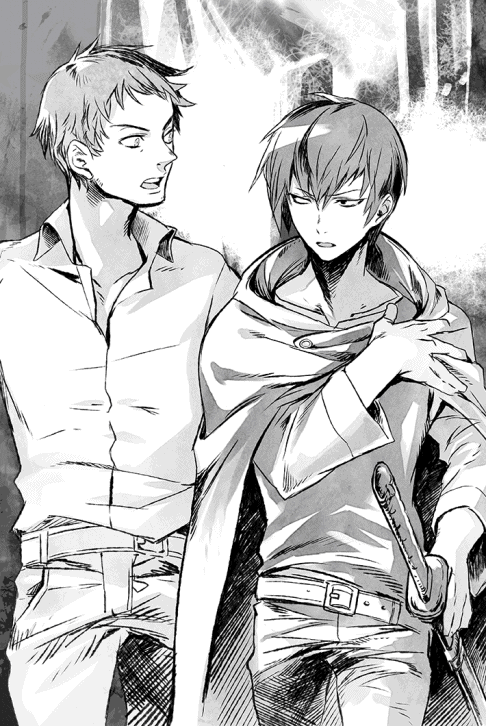

| ショウ -世界が終わった後で- | |
| 吉野匠 | |
| (2014) | |
大戦の敗戦から人間が魔族によって支配されるロンザリア世界。かつて人間世界で暮らし、今は異世界で剣闘士として生きる男・ショウは最強の戦士でありながら、所詮は見世物の奴隷に過ぎなかった。そう、彼の世界は終わっていたのだった。やがて、人間たちの反乱が始まる中、ショウは魔族の少女と出会い、激動の運命に巻き込まれていく......。

イラスト：天野 英 Hana Amano
デザイン：ヴェイア Veia
マップ制作：藤代 陽 Yoh Fujishiro
序章 その日から
遠くで誰かの悲鳴が聞こえた気がして、目が覚めた。
目を開いた途端、神威将は反射的に身構え、闇の中で耳を澄ませてみた。
......特になにも聞こえない。
となると、自分がどうして目覚めたのか、少し不思議だった。
悪夢を見ていた記憶はないが、悲鳴が聞こえた気がするくらいだし、忘れただけでなにか嫌な夢を見たのかもしれない。
しかし、まるで覚えてないのも妙じゃないか？ 将は渋面で首を傾げる。
普段からちょっとやそっとの物音で起きたりしない方だし、眠ったが最後、朝まで熟睡するタチなのである。今のように突発的に目覚めることはまずない。
しかもただ目覚めただけではなく、馬鹿げた話だがひどく胸騒ぎがした。本棚に勉強机、そして壁に貼られたカレンダー......どう見てもいつもの自分の部屋なのに、どこか空気が張り詰めている気がする。
心の奥底で妙に怯えてもいた。
あえて言えば、ホラー映画を見た後で不安になって眠れなくような、あの感覚に近いかもしれない。
「......別になにもないよな？」
わざとらしく囁いた途端、今度こそ本当に物音がした。
階下の部屋で、なにか重い物を投げ出すような音が。明らかに気のせいではない証拠に、密かな足音もしている。
母親がトイレに立った音だろうと思ったものの、いつも聞き慣れた足音ではなかった。どっしりと響く類の足音で、母のせかせかした歩き方には遠い。
喉を鳴らし、将はそっとベッドから出た。
スモールランプが点いているお陰で部屋の中は辛うじて判別がつく。なにか武器になる物がないか、急いで探した。
漫画やアニメでは、こういう時にはバットなどを持って武装するのだろうが、あいにく十一歳という年齢にもかかわらず、同級生達とは違い、将は野球があまり好きではない。
やむを得ず、授業で使うテニスラケットを手にする。
及び腰でそっと襖を開け、階下を覗いてみた。
向かって右手の、リビングの電気が点いている。
母さん、と呼びそうになって、将はとっさに言葉を呑み込んだ。
廊下に誰かの影が見えるのだが、とても母のものには見えない。伸びた影が巨大過ぎるのだ。母にしては、縦にも横にもデカすぎる気がする。
神威家では見慣れない異形の影が、リビングの明かりに照らされ、ゆらゆらと廊下に伸びて揺れている。
情けない話だが、将はこの時点で身体が震えてきた。極度の恐怖と緊張感に追いやられたせいか、まだ五月だというのに、脂汗まで噴き出した。
間違いでもいいから警察に電話したいところだが、将はまだ携帯を持たせてもらってない。通報するにしても、結局、階下に降りるしかなかった。
（だいたい、母さんと雪那は下の部屋なんだっ）
母と、それにまだ八歳になったばかりの義妹のことを思った途端、将の身体の震えは止まった。
しっかりものの母はともかく、義妹は気が弱いし、泣き虫でもある。もしも階下の誰かが本当に侵入者なら、二人がどうにかされる前に、下りていかないと！
覚悟を決め、将は額の汗をパジャマの袖で拭った。
本当に泥棒なら、向こうだって怖いに決まってる！ こちらが騒げば、きっと逃げるはず。そう思い定め、その場で大きく息を吸い込む。
次の瞬間、腹の底から声を出した。
「誰だああああっ。泥棒かぁーーーっ！」
喚きつつ、階段を駆け下りる。絶対に、近所にも聞こえたはずだ。
それに本当に見知らぬ誰かがいたら、全力でラケットの一撃を顔面に見舞ってやるつもりだった──が。リビングに飛び込んだ途端、将の雄叫びはふっつりと途切れた。
......見知らぬ誰かは確かにいた。
革ズボンのみを履いた大男が一人、リビングの中央に立っている。
血のような赤い目をした不気味な男だったが、それだけなら、将はここまで惚けなかったはずだ。
「あ、あ、あ、あ......」
なにか言おうとするが、言葉にならない。
ラケットはまだ手に持っているが、今にも落としそうだった。
将は、なんとしても男の手から目が離せなかった。
そいつは、右手に母の首をぶら下げ、反対側の小脇には義妹の身体を抱えている。
母の顔はびっくりしたように目を見開いていて、その虚ろな視線が息子の将をぼんやりと見つめていた。
男は母の髪を無造作に掴み、まるで西瓜かなにかのようにぶら下げているのだ。
お陰で首から血がゆっくりと滴り、リビングの床に落ちていた。
せっかく止まっていた将の震えが、またぶり返していた。これは単なる悪夢の続きだと思い込みたいところだったが、じわじわと衝撃が広がり始めている。
吐き気もしてきて、その場にしゃがみ込みたかった。
「なんだ、まだいたのか、ガキが」
初めてそいつがしゃべった。
ざらざらした声で、赤い目を細めていた。
「だがよ、人間のガキ、男は大した金にならねーからな。あいにく、連れ帰るわけにはいかねーな」
「い、いも、義妹を」
「はあぁ？」
馬鹿にしたように男が顎を上げる。
不自然に赤い目がぎらぎらと輝き、まるで楽しんでいるように見えた。
「なにが言いたい？ はっきりしゃべれよ、ガキ？」
「い、いい義妹を返せっ」
「ふんっ」
今度はつまらなそうに、男は鼻を鳴らした。
よく見ると、短い頭髪は銀色で針金みたいに逆立っていた。ますます普通の人間には見えない。
「これは俺の小遣い稼ぎのネタでな。返すわけにはいかん......代わりに、こっちなら返すぜっ」
いきなり母の首を投げつけられた。
辛うじて立っていた将の胸に命中し、将のパジャマの胸を血で汚した後、床に落ちて湿った音を立てた。
その刹那、将は自分が狂ったかと思うほどの大声で絶叫していた。それまで堪えていたものが、今ので一気に決壊してしまったのだ。
ほとんどなにを言ってるのかすらわからない悲鳴だったが、顔をしかめた男が近寄り、将の胸ぐらを掴んで放り投げた。
「うるせえよっ」
「あぐっ」
将の身体は、嘘のように軽々と飛んだ。人間では有り得ないほどのパワーだった。
ぶつかった先が壁だったら、その時点で死ぬか重傷を負ったほどの勢いだったが、幸か不幸か、飛んだ先はテレビを見るためのソファーだった。
その大型のソファーが衝撃を受け止めかねて、仰向けに引っ繰り返った。内蔵されたフレームが歪み、中央がべっこりとへこんでしまっている。
将は脳天を貫く痛みに、泣くことも出来ずに身悶えする。
「え、な、なにっ」
最悪なことに、そこで義妹の悲鳴が聞こえた。気絶していたのが、どうも今の騒ぎで目覚めたらしい。
「おにいちゃあああんっ」
「ゆ、雪那！」
痛みを堪えて上半身だけ起こすと、丁度男が、泣き出した雪那の首根っこを掴み、揺すっているところだった。
「うるせえっ。殺せねえからって、痛めつけることはできるんだぞ！」
「やめろおっ」
声を絞り出すと、男はまた将を見た。
いささか意外そうに目を瞬く。
「悪運の強いガキだな。まあ、母親みたいに首を引き千切ればいいか」
泣き喚く雪那を小脇でがっちり抱え、ゆっくりと男が近付く。しかし、まさにその時、激しいサイレンの音が遠くからした。
騒ぎに気がつき、誰かが通報したらしい。
一瞬、男は迷う素振りを見せたが、すぐに肩をすくめた。
「金にもならんのに、死体を増やしてもしょうがねぇ」
そのまま、未練なく将に背を向け、なにやら口の中でぶつぶつと唱え始める。もはや、こちらを見向きもしなかった。
「ゆ、雪那をっ」
「こわい、こわいよう、おにいちゃんっ」
雪那がはっきりと将を見やり、泣きじゃくる。
お陰でなんとか立ち上がることができたようなものだ。
しかし......その時には既に遅かった。リビングの中央に黒い円形の「なにか」が現れ、大きく天井まで広がった。
厚みもなにもない、単なる染みのような黒い円状の「なにか」である。
男はその中に向かってためらいもなく歩を進めていく。
──あの先に行ったら、おそらく義妹はもう戻らないっ。
本能でそれを悟った将は、必死で叫んだ。
「雪那を返せえっ」
男はぴくりとも反応しなかったが、顔をこちらに向けていた義妹は、泣きながら手を伸ばした。
「助けてぇ、おにいちゃんっ」
「待ってろ、雪那！」
ガクガクする足を叱咤し、将は性懲りもなく男の背中に追いすがる。そして、義妹が伸ばした手を掴もうと、自分も手を伸ばす。もう少しで届きそうだったのに。
「おにいちゃ──」
黒々とした円の中に、二人の姿はあっさり消えてしまう。
途端に、黒い円形が小さくなり始めた。
──いけないっ。将は寸毫も迷うことなく、自分も中に飛び込んだ。
「すぐ行くっ、雪那!!」
飛び込んだ瞬間、めまいがするような感覚があり、身体がどこかへ落ちていくような気がした。前にいたはずの二人の姿は、なぜかもう見えない。
振り返ったが、既に入り口は閉じていた。
将は......真っ暗な闇の中をどこまでも落ちていった。
第一章 ソードフェスティバル
ショウ（将）は跳ね起きて周囲を見渡した。
......もう馴染みになりつつある、石造りの部屋の中で、つまりは見慣れたウォーリア（戦士）用の私邸の中である。
私邸と言っても部屋は三つしかないが、それでも身分的に一番下っ端であるレッドクラスの住民としては、破格の待遇と言っていいだろう。
それもこれも、今やショウがこのアンダープリズンにおいて、売れっ子のウォーリアとなっているお陰である。
ぼんやりと考え事をしていると、ベッドの下からユウリがのそのそと出てきて、小さく鳴いた。器用に前足をベッドの上に乗せて立ち、心配そうな目でショウを見つめる。とても狼の目つきには見えないが、もちろんショウは驚かない。
手を伸ばし、ユウリの頭をそっと撫でてやった。
「夏が近いとはいえ、床は冷えるだろ？ 奥のベッドを使ってもいいんだぞ」
優しく諭してやったが、そっと舌で掌を舐められただけだった。
ユウリのもう片方の分身の姿を想像すると、ショウとしては、こういうのも少し危ない気がしたりする。そしてそれこそが、ショウが未だにユウリに「一緒のベッドで寝るか？」と言い出せない理由でもあった。
二十歳にもなる男としては情けない限りだが、相手が息を呑むような美女ともなれば、そう思うのも仕方ない......まあ、今は純白の狼の姿にせよ。
そこまで考え、ショウはふと思い出した。
「そうか、こっちに飛ばされて、もう九年になるか」
しみじみと呟く。
九年前のあの晩の時点では、まさか自分が異世界で剣闘士じみたことをするようになるとは、想像もしていなかった。
とそこで、手荒く入り口のドアを叩く音がして、ショウは我に返った。
起き上がる前に、いち早くユウリがぱっと身を翻し、部屋を出て行く。マメな女性なので、客人を案内するつもりだろう。
ただし、客人の方で心の準備ができているとは限らないが。
「おわあっ」
......案の定、知人の度肝を抜かれた声がして、ショウは人の悪い笑みを広げた。
白いリネンのシャツと黒ズボンという、あまりウォーリアらしからぬ格好のデイルは、
ベッドのショウを見て、盛大に顔をしかめた。
黒い髪と灰色の瞳をした気の良い男なのだが、今朝はあまり機嫌がよくない。
「なんだよ、おい。まだ用意してないのか。もう試合開始の一時間前だぞ？ 興行主のザックが気を揉んでたぞ」
同じ年代の戦士にふさわしく、遠慮なく小言を述べた。
「寝過ごしたらしい。悪夢のせいだな」
「そ、そうか」
途端にデイルの表情にほのかな同情が混じる。
こいつはショウの事情を知る数少ない一人なので、もちろん義妹のことも知っているのだった。......その後、雪那がどうなったかも。
気まずい空気を察し、ショウは自分から切り出した。
「で、おまえはどうした？」
「おいおい、どうしたじゃないだろっ」
デイルの声がたちまち元のむくれた調子に戻った。
「興行主に言われて、迎えに来たんだよっ」
「そりゃまたご苦労なこった。逃げる場所なんかないんだし、どっしり待っててくれりゃいいのに」
ショウはうんざりして返す。
「おまえはメインイベントのウォーリアだろうがっ。お陰で俺まで使い走りに出されたんだからな！」
「そりゃ悪かった......そのうち、なにか奢るさ」
こうなると仕方ない。渋々、ベッドから出た。
寝室の隅に無造作に置かれたチェストを開け、シャツの着替えを出す。気遣いの行き届いた（行き届き過ぎた）ユウリは、すぐにまた部屋を出て行く。
彼女が出ていくのをしっかり見届けた後、デイルは小声で苦情を述べた。
「あのよ。同じ名前でも、どうせならいつもの超美人に会いたいぞ、俺は。最近あの人はどうしたんだ？」
「いや、普通にボチボチ会ってるよ、うん」
ショウは着替えつつも、笑いを堪えるのに苦労した。
「ホントか？ 別れたわけじゃないんだな？ あと、おまえのあの犬だが──」
「狼、狼だ！ 下手に間違えると、ユウリの機嫌を損ねるぞ」
振り返り、ショウはわざわざ訂正を入れる。
「機嫌だぁ？ 自分が犬扱いされてるのがわかるほど、あの狼様は賢いってか？」
文句を言いつつも、デイルは嫌そうに言い直した。
「その通り！ ユウリはおまえの下着の色から、振られた女の数までお見通しだ」
「けっ、嘘くせぇ」
戦士にふさわしく短く刈り込んだ頭を掻きむしり、厳つい顔でぶつぶつ言う。
「とにかく、その狼だ。いつも思うんだが、なんでクールな超美人のユウリさんと同じ名前なんだ」
「さあ？ 運命ってのは皮肉だよな」
ショウは辛うじて笑わずに言えた。
デイルはまだ納得のいかない顔で言う。
「じゃあ、あいつは四つ足でどうやってドアの鍵外してる？ 考えてみたら、不思議だ。実はおまえがダッシュで開けに来て、またベッドに走り戻ってんじゃないのか」
「俺はそこまで暇じゃない。ピンポンダッシュのガキじゃあるまいし」
「は？ ぴんぽん──なんだそれ？」
今度はショウが顔をしかめる番である。
英語と日本語を交えた、やたら優秀な言語変換の魔法がかけられていて、たいがいの単語は「こちらの世界」での適当な単語に変換されて相手に聞こえるはずだ。
しかし、それでもショウは日本人である。
当然、この世界にはない単語を口走ることはある。その場合はそのまま伝わってしまい、まるで理解してもらえない。そういう時は自分がよそ者（それも異世界人！）であることを大きく意識してしまい、あまり良い気持ちがしない。
「故郷の悪ガキがやる遊びなんだ......忘れてくれ」
「ああ、フォリナーの」
言いかけ、デイルは慌てて首を振る。
フォリナーとは、このロンザリア世界にたまに紛れ込んでくる異邦人を指すが、良い意味で使われることは少ない。友人に対して、デイルはとっさに気を遣ったらしかった。
「ま、それはともかく、急ごうぜ！ もう時間がないぞ」
「わかってる。すぐ行くよ」
朝食は諦めることにして、ショウは壁に立てかけた姿見に自分の長身を映す。
うっかりすると、目に被さるやや長めの前髪に、ほとんど逆三角形にも見える、線の細い顔つき。あまり戦士に見えないどころか、まだ少年っぽい雰囲気が抜けていない。目つきだけはいかにも戦士らしいと自負しているが、それはただ目つきが悪いだけの話かもしれない。
ともあれ、上下共に黒いシャツとズボンを着込み、それに剣帯に愛用の刀を着ければ、だいたい準備は終了である。仕上げに同じく黒マントを着けるが、これはどうせアリーナでは脱ぐことの方が多い。
支度が終わると、早速デイルが口を出した。
「いつも思うんだけどよ、防具とか着けろよなぁ。見てるこっちがひやひやする」
「いらない。めんどくさいし、動きが鈍くなる。罰ゲームじゃあるまいし」
「おめーは多少動きが鈍くなっても同じだ、同じ」
デイルは苦笑してそう吐かし、さらに口癖を出しつつ畳みかけた。
「あと、いつも思うんだけどよ」
「言いたいことはわかってる！ いいんだよ、俺はこれでいいんだ」
すかさず返したのに、それでも言われた。
「全身真っ黒って、暗くないかぁ？ どうせ売り出すなら、もう少し明るい感じで行こうぜー、陽気によぅ。せっかく、四年間無敗なんだし」
「明るい色？ 全身真っ黄色な服でも着ろってか？」
「おお！ そりゃ新しくて受けるかもな」
冗談で言ったのに、真面目に賛同され、ショウはげんなりした。
「売り出す気はないね」
この際、きっぱりと言い切る。
「だいたい、ソードフェスティバルなんて名前がついてるけど、やってることは見世物の殺し合いと変わらないだろ。明るくやってどうすんだ？ この賭け試合自体が、魔族が仕組んだ人間共のガス抜きだってのに」
思わず、といった感じで左右を見渡し、デイルは首を振る。
声を低め、ひそひそと囁いた。
「その遠慮のない言い方、外では控えろよ。昔はともかく、もう大戦から八年が過ぎてるんだ。今や魔族様は、俺達人間の支配者なんだからな」
──なにが「魔族様」だか。

そう思ったショウが口を開けた途端、デイルはおっかぶせるように続けた。
「とにかくっ。売り出す気があろうとなかろうと、おまえは今やトップウォーリアなんだっ。少しはソードフェスティバルを盛り上げる方向にだな」
「だから、ただの殺し合いを盛り上げる必要ないって」
「つってもおまえ、いつも相手を殺さねーだろうがよ──」
言いかけ、デイルは慌てて付け足した。
「まあ、そのお陰で俺はこうして生きてるから、そこは文句ないけどな」
ソードフェスティバルのルールでは、試合中に相手を殺してはいけないことになっている──が、それはあくまで建前であり、剣と剣で戦う限り、どうしても人死にはつきまとう。よって、相手が死んだ場合は罰金を払えば済むことになっていて、その額はさほど高くない。
むしろ、血なまぐさい場面が見られて喜ぶ客も多く、後で殺した戦士宛てにたんまり報奨金が届く仕組みになっている。罰金など余裕で払えて、さらに膨大なお釣りがくるほどの金がもらえるのだ。
こうなると、あえて殺しにかかるヤツも出てくるわけだが、そういう戦士が罰金以外の罰則を受けたことはない。唯一の例外は、殺される前に大声で負けを認めることで、この降参の合図を無視して斬りかかった場合に限り、戦士は永久追放とされる。
ウォーリアの身分は最下層のレッドクラスに過ぎないものの、個人の住居を許されるくらいで、なかなか待遇はよいのだ。
人気アップのためなら無茶する輩も多く、従ってこの降参ルールが、人死にを防ぐ唯一の枷となっているわけだ。
ショウは忠告のつもりであえて言ってやった。
「あの時、おまえは降参しなかったな。いい加減、その意地を捨てた方がいい」
「うるせー。年季の入ったウォーリアが降参なんかできるか。こっぱずかしいだろうが」
唸るように答えるデイルを連れ、ショウは部屋を出て石廊下を外に通じるドアへ進む。背後から、ユウリがひたひたと付いてくる音がした。
「まさかアリーナまで付いてこないだろうな、この狼」
デイルが嫌そうに呟く。
「来ないよ。なにかあった時は飛んで来てくれるだろうけど」
ショウはドアの前で振り返り、しゃがみ込んだ。
ユウリの頭に手を伸ばし、また穏やかに撫でてやる。満足そうに目を細める彼女を見て、自分も微笑する。
「じゃあ、悪いけど留守を頼む」
小さく鳴いて応えたユウリに頷き、ショウは立ち上がる。
ずっと見ていたデイルが、いつもの口癖を交えてからかうように言った。
「いつも思うんだが、おまえらって人と獣の枠を越えて仲がいい気がするぜ。あぶねーなぁ──て、いってえっ」
早速、ユウリにかかとの辺りを軽く噛み付かれ、デイルはウォーリアらしくない悲鳴を上げた。
☆
ウォーリアが試合を行うアリーナは、見かけはローマの闘技場とよく似ているが、規模はさすがにあれほどではない。
とはいえ、アンダープリズンに押し込められた人間達には他に大した楽しみはないので、自然と試合の日には大勢が集まることになる。
今日も、ショウが遅れて入ったアリーナには、既に千人を超える客が入っていた。
正直、いつもより遥かに客入りが良いくらいで、これから始まる試合への期待か、場内は興奮気味の悲鳴や怒声があちこちから聞こえる。
ショウが今いる、戦士用の狭い通路にまで聞こえるほどだ。
こういうのを聞くと、人の本性は戦いを好むのかもしれないと思わざるを得ない。
あるいは、魔族との戦に大敗した人間側の、成れの果てがこれなのかもしれないが。
そう、人間は魔族に敗れ、今やヤツらによって地下世界に押し込められ、細々と暮らしている。
仮にこれがゲームだとすれば、明らかにこの世界は、人間が魔族に大敗した「世界が終わった後の世界」なのだ。
「おい、ショウっ。遅いぞ！」
アリーナに至る出口の少し手前で、興行主のザックが仁王立ちしていた。
丸々と太った身体に纏う衣装は、真っ赤な胴衣に金色ボタン、それに赤マントに白い乗馬ズボンという格好で、まさに「目立つのが至上っ」と言わんばかりの姿である。
一応、薄くなった頭にシルクハットをのせているため、辛うじて興行主だとわかるが、さもなくば道化かと思うほどだ。
「時間には間に合ったじゃないか」
我ながら、やる気が感じられない声が出た。
もちろん、ザックは盛大に唾を飛ばした。
「間に合ってないっ。戦士は試合開始の半時間前にはここに立ってるのが規定だろうが！」
「......悪かったよ」
気のない謝罪に、ザックは頬の肉をぷるぷる震わせる。
「おまえはスター戦士だからわしも大目に見てるが、本来なら追放ものだぞっ」
「スターは置いて、悪いとは思ってる......ホントだって。昨晩は嫌な夢を見てな。勘弁してくれ」
さっきより多少気を入れて謝ると、やっと険しい表情を緩めてくれた。
「わかればいいが、本当に頼むぞ。今日はおまえ、魔族様もお越しだからな」
「魔族が来てるって？」
ショウは顔をしかめた。
「なんでまた。ヤツら、よっぽど暇なのか」
ぞんざいなセリフを聞いて、ザックは目を剥いた。
「魔族様のお越しは、もうだいぶ前から決まってただろうがあっ。あと、呼び捨てにしてどうする、馬鹿者っ。魔・族・様だ！」
またしても盛大に唾が飛んだ。
「ここだからいいが、外では絶対に様付けを忘れるなよ、殺されるんだぞっ」
「わかったけど、あんたの声の方が俺よりデカいって」
なにが魔族様だよと思ったが、ショウはあえて言わずにおく。
大戦に惨敗した後の人間は、魔族から四つの身分に強制的に分けられている。ブルー、ホワイト、ブラック、レッドの四つだ。アンダープリズンに住むのは最下層のレッドクラスの住民が大半だが、このクラスは魔族から見れば、隔離された罪人も同然なのだ。
大戦の折に最後まで魔族に敵対した人間達のクラスなので、まあ当然だが。
「で、その魔族様がなんの気まぐれだ。血に飢えてるのか」
「知らん」
落ち着かない態度で、ザックは首を振る。
「知らんが、相手は魔王のご息女なんだ。三人兄妹の末っ子の娘で、超大物だぞ。なにかあった日にゃ、こっちの首が飛ぶ......比喩的な意味じゃなくな。これまでの試合じゃずっと退屈そうにしてらっしゃったし、どうもあまりよい空気じゃない。わかったら、おまえもくれぐれも失礼のないようにしろ、いいな！」
「俺が直接話す機会なんかないだろ？」
呆れて言い返すと、すかさず文句がきた。
「万一のためだ！ いちいち口答えが多いっ。とにかく、彼女のお名前は」
「いいって、名前なんか。話せもしない女の子の名前なんか聞いてもしょうがない。別にお近づきになれるわけじゃなし」
ショウが肩をすくめると、ザックは灰色の目で睨みをくれた。
「ふんっ。相変わらず、生意気なヤツだ。だいたい、さほど女に興味もないくせに」
「んな馬鹿な。好みの子がいたら、今日だってサボってたよ」
「やかましいっ」
ぷりぷりしつつ、ザックは先に通路からアリーナへ出て、その中央まで進んだ。
彼の姿が出た途端、場内のざわめきが最高潮に達する。しばらく彼らが騒ぐに任せた後、ザックはおもむろに片手を上げた。
すかさず、だみ声を張り上げる。
『皆さん！ ソードフェスティバルのメインイベントの時間がやって参りました。光栄なことに、本日は魔族様のご令嬢も観戦なさっております』
そこでシルクハットを取り、一度深々と有らぬ方向へお辞儀をする。
あいにく、通路の奥に立つショウからは、その「魔族様」とやらは見えなかった。すぐにシルクハットを被り直し、ザックが声も枯れよとばかりに絶叫を再開した。
『では早速、メインイベントを担う戦士を紹介しましょう！ まず、東より──ソードフェスティバルが生んだ王者の中の王者でもあり、２５０戦全勝の無冠の帝王でもありますっ。ショウ・カムイの入場です!!』
──ああ、この道化芝居の時間が一番嫌だ。
そう思いつつも、ショウはやむを得ず、ザックの派手な腕の振りに応えて、通路から外に出た。
降り注ぐ鈍い光を仰ぎ見れば、魔族が生み出した人工太陽が、岩盤の天井に輝いている。これがあるお陰で、ここが地下世界でも辛うじて人間が暮らしていけるのだが──所詮は魔力で生み出された人工の産物なので、その輝きは外とは比べものにならない。
この地下の牢獄たるアンダープリズンが、昼夜を問わず、薄暗い理由だ。
「ショウっ」
ザックが小声で咎める声がした、ようやくショウは天井の鑑賞をやめた。
叱責に従い、素っ気なく片手を上げたものの、それ以上の愛想は見せない。それでも、無愛想で強いショウは意外なほど人気があり、場内はどっと沸いた。
「いいぞぉー、ショウ！ 今日もすかっと勝利を頼むぜぇえええ」
「でもあんまりすぐに決着つけないでくれよ。楽しみが減るからなぁああ」
「あたしは今日もあなたに賭けたわよっ。がんばってぇぇええ」
それぞれ実に勝手な声援を送ってる客達に自然と渋面になり、ショウは中央に至る。
そこでやっと、めったに使われないアリーナの貴賓席の方を見た。
......確かに、貴族趣味の極みみたいな豪勢なドレス姿の娘が、中央にいる。
その左右には、燕尾服に近い裾の長いスーツと、クラバット（ネクタイの原型）姿の魔族の護衛達も大勢いた。
全員、白銀の髪に真っ白い肌をしていて、魔族の最上位種は見栄えのする美形が多いという、噂通りの姿だった。
とはいえ、魔族も下位種になると怪異な容貌の方がよほど多く、美形などあくまで上位のほんの一部らしいが。
ショウが眺めているうちに、ザックの大声がまた響いた。
『さて、西のゲートからは、無冠の帝王に挑む新たなチャレンジャーの登場であります！ かつて地上で魔族様のお目こぼしによって栄えていたロンザリア帝国のぉおお、その生き残り戦士の登場です！ 若き傭兵、ガラドに盛大な拍手をっ』
ザックの景気よい口上に比べて、拍手の音は散発的だった。
誰だよ、それわあっ、という馬鹿にした声も多い。馬鹿にする気こそないが、正直、ショウも初めて聞く名前だった。
少し不審だったので、そばにいたザックに小声で訊く。
「おい、ザック！ メインイベントだろ？ 客に馴染みのない戦士で大丈夫なのか」
「しょうがないだろ、おまえへのチャレンジ権を獲得する試合で優勝しちまったんだから。新入りだが、実力は証明したんだ。わしだって正直、不安なんだよっ。おまえが上手く場内を盛り上げろ。なんか芸はないのか？」
「無茶苦茶言うな──」
馬鹿っと言いかけ、ショウはそこで息を呑んだ。
......眼前に来たそいつが、あまりにも奇妙だったからだ。
いや、容貌は短い髪に角張った顎の、いかにも戦士風の男だし、上半身にレザーアーマーを纏っているのも、これも型通りである。
問題は、一杯に見開いた両目だ。......虹彩が鮮やかな黄金色をしているのだ。確かにショウはフォリナーでよそ者かもしれないが、少なくともこんな瞳の色は、人種の坩堝に近い、このアンダープリズンでさえ見たことはない。
ただし、実はショウは、この黄金の瞳を知識としては知っていた。
......こいつはまさか？
「かつてのロンザリアの出身だって？」
昔、魔族に滅ぼされた地上の一大帝国の名前を出し、ショウは相手の反応を伺った。
しかし、男は茫洋とした黄金の瞳で、瞬きもせずにショウを見据え、こう告げただけだった。
「おまえを殺してやるぞ、ショウ。死にたくなければ、せいぜい己の力を振り絞れ」
「ば、馬鹿なことを言うんじゃあ、ないっ」
ショウではなく、興行主のザックが囁き声で注意した。
「建前とはいえ、ソードフェスティバルは人殺しは認めてないぞ！ 他でそんな噂を振りまいたりするなよっ」
すると若者──ガラドは、まるで機械仕掛けのような動きで首をゆっくりとザックに向け、端的に言い捨てた。
「失せるがいい」
「なにい!?」
ザックの顔色が見事に変わった。
「ぺーぺーの新人ウォーリアのくせに、わしを誰だと思ってるっ。この場で追放されたいのか、貴様っ」
無理もないが、真っ赤になって怒っている。
今にも掴みかかりそうだったが......ショウはあえて止めた。若者の肩を持ったのではなく、ヤツの態度になにか危険なものを感じたからだ。
「まあ落ち着けよ。今日は魔族の大物が観戦してるんだろ？ こんなトコで追放騒ぎなんぞやらかしてみろ、あとでケチをつけられるのは興行主だぞ。下手すりゃ、あんたの首は胴体と泣き別れ確定だ」
「笑えない忠告はよせっ」
痰が絡んだような唸り声を上げ、ザックは渋々、新人ウォーリアから目を逸らした。代わりにショウを見て、ごくごく微かに低頭する。
「......まあいい、ここはおまえの顔を立ててやる。その代わり、試合の後であの小僧はどやしつけてやるからなっ」
「それは無論、試合を仕切る興行主の権限さ」
今のセリフが、ザックの斜め方向からの感謝の言葉だと知っているショウは、澄まし顔で頷いてやった。
ザックはようやく機嫌を直したように口元を綻ばせ、ひそひそと囁きかけた。
『今日のわしは中立を捨てた。あの、身の程知らずの生意気なガキを叩きのめしてやってくれ』
「おいおい......」
苦笑するショウを置いて、ザックは離れて行く。
試合開始の直前になって、ショウはもう一度、正面ゲート直上の貴賓席に目をやった。
純白のコルセットドレスを着た魔族の娘が、身を乗り出すようにして挑戦者を眺めていた......不審そうな目つきで。
ただ、ショウの視線に気づくと、素早くこちらを見やり、ばっちり視線が合ってしまった。なぜか向こうは、小首を傾げて花が開くように微笑した。
輝く白銀の髪と薄赤い瞳をしていて、眉の上で綺麗に前髪を切り揃えている。洋風な顔立ちは別として、髪型だけなら日本古来のお姫様風である。
大層な美人だったが、もちろんショウにはまるで縁のない存在だった。
すぐに目を逸らし、当面の（怪しい）敵を眺める。
......黄金の瞳を持つ男が、背中から大仰な武器を外して構えたところだった。
「ツーハンデッド・ソードだと？」
両手持ちの武器で、重さ四〜五キロはある、長大な武器である。
斬るよりも、むしろその重量を活かして敵を叩き殺す方が多い。もちろん、斬る方にも使えるが、その重さ故に剣士の方にも大きな負担を掛ける。
振り回した後に、否応なく隙が多くなるのだ。しかもあまりに重いし、ウォーリアで使う者は少ない。
自分より身長も体格も劣るこのガラドとやらが、本当に使いこなせるのだろうか。
ショウが忠告するかどうか迷っている間に、試合が始まってしまった。
「それでは、始めえーーーーっ」
他人の心配をしてる場合ではなかった。
ザックの掛け声が終わるか終わらないかのうちに、もうガラドが突っ込んで来た。
ご大層な大剣を頭上に掲げ、それこそ間合いに躍り込んでくる勢いだった。意外なことに、こいつはツーハンデッド・ソードを軽々と扱っている。
頭上の人工太陽にぎらりと大剣が輝き、ショウが身を捌いて避けると同時に、ソードが大地を抉る。ドガッと嘘のようにでっかい音がして、足下に巨大なひび割れが生じた。
「面倒なヤツだな、やる気満々かよ！」
声を放った時には、既にショウの反撃がガラドの手元に伸びている。
不思議な輝きを放つ刀身が、光の筋を残してガラドの手を襲う。手を負傷すればもう武器が持てないわけで、つまりは最も速く試合を決められるのだ。
自分のことよりも、むしろ無茶な武器を振り回す相手の無謀を考えてのことだったのだが──どうも余計なお世話だったらしい。
今度はガラドの方が素早く身を捌き、ショウの一撃をかわしてしまう。
しかも、即座に手首を返し、馬鹿みたいに重たい（はずの）大剣を横殴りに叩き付ける。飛び退くようにしてショウが避けると、素早く間合いを詰め、今度はショウを縦に斬り裂くような勢いで、とんでもない剣撃を頭上に降らせてきた。
初めてその一撃を刀で受けたが、正直、予想以上のパワーに驚いた。
ショウ自身も見かけから想像するより遥かに筋力があるのだが、こいつはそもそも、人間より魔族に近いパワーの持ち主かもしれない。
事実、剣撃を受けた瞬間、アリーナ中に響き渡るほどの音がした。
さらに、二合三合と激しく切り結んだが、ガラドの剣撃はただ重いだけではなく、銀色の大剣が霞むほどのスピードがあった。
「黄金の瞳ってのは、あまり見かけないな？ ロンザリア帝国といっても広い......どの辺りの出身なんだ？」
四合目に大剣と刀でギリギリと押し合いつつ、ショウは気軽に訊く。
全身の筋力を振り絞っているが、表情だけは涼しげに装っていた。
「関係ない」
ガラドは感情の抜けた声音で返す。
「我は命令を遂行するのみ」
ある意味、ショウの予想通りである。
「ああ、やっぱりそういうことか。使い走りは大変だよなぁ」
ニヤッと破顔し、ショウは言い返す。
「つまりおまえは、あの呪法の犠牲者──」
「死ねええーーーっ」
途端に、ガラドが馬鹿力でショウを押し返す。
下方からすくい上げるような力の入れ方をしたせいか、呆れたことに、ショウの身体が軽々と浮き上がるほどのパワーがあった。刀で受けていた状態でなければ、包丁で豆腐を切るようにすっぱり身体が割られていただろう。
緩い放物線を描き、ショウの長身が驚くほど遠くまで飛ばされた。
しかも、こちらの身体がまだ空中にあるうちに、ガラドがショウを指差し、一杯に見開いた目で叫んだ。
「潰れろ、ダムド・ハンマーっ」
「──！ ソウルバイブルの禁忌魔法かっ」
叫んだ時には、天より特大の拳が降ってきたようなとんでもない衝撃が来た。ショウは両手を胸の前でクロスに構え、受けの姿勢を取ったが、それでもハエ叩きでぶっ叩かれたような勢いでアリーナの大地に叩き付けられてしまう。
轟音と共に大地にひび割れが生じ、クレーターのごとき派手な陥没ができた。
アリーナの観客も、さすがに静まり返ってしまう。
目の肥えた彼らとはいえ、ここまで派手な魔法を観るのは初めてのことだったのだ。 無論、誰もが「わっ、ショウは死んだぞ！」と思ったはずである。その証拠に、唖然としていた興行主のザックが、一拍置いて猛然と怒り始めたくらいだ。
「おい、新入りっ。なんの真似だ、貴様あああっ。あいつぁ確かに生意気なクソガキだったが、それでもいいトコだってあったんだ。こんな死に方をするヤツじゃないぞっ」
悠々と立つガラドを指差し、喚きに喚く。
ガラドはただ目を細め、今度はザックを指差そうと手を上げかけた。
「お、おい、まさか興行主のわしを」
さすがにザックがぎょっとしたところで──ようやく、ショウは跳ね起きた。
もう少し休んでいたかったが、まあ必要以上にサボっているとロクなことはない。
「倒す相手を間違えるなよ、新入り！」
薄青い光を全身に纏い、ショウは明るく声をかける。
黄金の瞳を持つガラドがさっとこちらを見たので、顔をしかめて首を振ってやった。
「悪いが、呪法によって一度ホーリーナイトになった以上、おまえはもう元の人間には戻れない。その呪法から解放されるには、呪法をかけた相手か、あるいはおまえが死ぬしかない。......と教えてやっても無駄だろうけど」
「お、おいショウっ。大丈夫なのか！」
ショウは珍しく心配そうな（そして驚愕したような）ザックに、手を振ってやった。
「ザック、あんたの愛情表現には、涙が滲んできたよ。今晩から、部屋にあんたの写真でも飾っとく」
平然と声をかけた途端、ザックは元より、アリーナ中がどっと湧いた。
「おぉおおおおっ、すっげぇええええっ。さすがは帝王っ」
「そんな生意気なチビは殺しちまぇーーーっ」
「反撃だ、反撃だ、ショウ！」
それぞれ好き勝手なセリフでもって、熱狂的に喚いた。
冷静だったのは、叫び声に顔をしかめたショウと──そして、疾風の如く躍り込んできたガラドのみだった。
こいつは黄金の目をぎらつかせ、相も変わらず同じセリフを叫んだ。
ショウの眼前で大剣を振り上げ、既に攻撃態勢に入っていた。
「我は命令を遂行するのみ！」
「勤勉なのはウォーリアには向かないぞっ」
言下に、ショウの姿がその場から消えた。
極限状態のルナティックモードに入り、常人が出せる限界を遥かに超えたスピードで動いたせいだが、もちろん観客達もザックも、そこまではわからなかっただろう。
気功を応用したこの能力を使えば、常人の目には追いつかないスピードで動くことが可能となるのだ。
観客達が見たのは、一瞬にしてショウとガラドの体勢が入れ替わり、ガラドの背後に「出現」したショウが、容赦なく剣撃を繰り出すところのみである。振り切った刀を静かに戻し、ショウはぱちんと鞘に収めてしまう。
まだ背中を向けて突っ立ったままのガラドから、さっさと離れる。
とそれが合図だったかのように、ガラドの身体がゆっくりと傾いで倒れた。それこそ、どさっと丸太のように。
その途端、またどっと場内が湧いた。
なにをしたかはわからなかったにせよ、とにかくショウが勝ったことだけは、誰の目のも明らかだったからだ。
実はガラドの延髄の辺りを、刀の棟の部分でどやしつけて気絶させただけなのだが。
そこでふと目を上げ、ショウは眉をひそめた。
例の貴賓席にいた魔王の娘とやらが......未だに身を乗り出したまま、まだショウをじっと見つめていたのだ。しかも、当初の単なる興味のみが窺える目つきではなく、随分と真剣な視線に見える。
とはいえ、どうせこちらから話しかけることはできないし、それに試合はもう終わっている。興行主のザックが満面の笑みでショウの勝利を宣言し、例によって右腕を掴んで上げようとしているところだった。
「待てって、ザック」
「なんだよ。最後くらい、客に愛想を振りまけ！」
「じゃなくて、後で話がある。この気絶した新人だが、このままじゃ」
──元に戻らないぞと言いかけたのだが、まさにその瞬間、アリーナの一画で大声で叫んだヤツがいた。
『ダスク！ 聞け、誇り高き、人間の同胞達よっ』
ショウはさっとそちらを見た。
革ズボンと肌に張り付くようなぴったりした白いシャツを着た男で、長い黒髪と灰色の瞳という、明らかにロンザリアの平民の特徴をしていた。
そいつが朗々たる声を張り上げつつ、両手を天に掲げている。
しかし、ショウが気になったのは、最初の「ダスクっ」という叫び声である。あれは、魔法を発動するコマンドワードだったような気がする。あの瞬間、明らかに男から魔力の流れを感じた。
「今度はなんだよ！」
ザックがたちまち不機嫌な顔で観客席を振り向く。
「......いや、今度はどうも毛色が違うぞ、ザック」
ショウはこっそり囁いた。
「見ろ、アリーナのあちこちで、似たような服装のヤツらが立ち上がった」
実際、それぞれ数十名ずつの集団が、最初に喚いた男に合わせてすっくりと立ち上がっていた。驚くほど数が多く、全部で数十名ほどはいるだろう。
「これはだいぶヤバそうだ」
「どういう意味だ」
「わからないか？」
厳しい声で、ショウはザックに教えてやる。
「あの立ち上がったヤツらの目、このガキと同じ黄金色に変色している。あれは、ある呪法にかかったヤツの特徴なんだ。いまの『ダスク』って単語がコマンドワード──つまり短縮呪文だったのさ。あれで一斉に目覚めたようだ」
「ほ、ホントか!?」
「ホントだとも。今、実例を見たばかりだろ？ あんたは逃げろ、ザック。もう試合どころじゃない」
「しかし、おまえはどうするっ」
「そりゃ逃げるさ。だがせっかくだから、もう少し高見の見物でもしようかと」
あっさり答えたところで、また煽動者の男が喚く......まるで、観客達に語りかけるように。
『三年に及ぶ魔族と人間の雌雄を決する大戦に敗北してから、はや八年。我々人間は、各地でこのアンダープリズンという体のいい地下牢獄に押し込まれ、屈辱的な奴隷生活を送っている。魔族のために奉仕し、あるいは魔族の顔色を窺い、こうしてつまらん賭け試合くらいしか気晴らしがないような、鬱々たる生活だ』
「基本的に賛成なんだが、他人に言われるとむかつくぞ、くそっ」
ショウは顔をしかめて腕を組む。
「これで食ってる俺としては、あんまり頷きたくないな」
「馬鹿、そんな場合じゃない！ あいつら、なんのつもりだっ」
無理もないが、今やザックの顔は恐怖に染まっていた。
「きょ、今日は魔族様のご令嬢も観戦に来てるんだぞっ。こんな扇動の有様を魔王陛下に報告されてみろっ。俺もおまえも死んだも同然だ！ 部下を連れて止めてくるっ」
「よせよせ、馬鹿らしい」
ショウはザックの肩を掴んで首を振った。
「いいからあんたは逃げるんだ。こんな大胆な計画立てるくらいだ。これからもっと大事になると見た」
「計画って、どんな計画だ」
「なんにせよ、あんたのタマが縮み上がるようなことだよ」
......事実、ショウの予感は当たっていた。
煽動者の男が、いきなり貴賓席を指差し、こう怒鳴ったのだ。
『だがみんな、ついに時が来た。恐れずに私と共に戦え！ 私はヒーローとして覚醒し、魔族を倒す先駆となるべく、ここへ来た。手始めは、あそこにいる魔族の第三女だ！ 魔王の娘ロクサーヌを倒し、人間側の反旗の手始めとしようっ』
最初から場内は戸惑った声が満ちていたが、ここでさすがに驚きの声や狼狽の声が入り混じってきた。
ちなみに、ヒーローとは遊技場で子供向けにショーを見せる人ではなく、この世界では本気でそのまま「英雄」の意味を持つ。
要は敵である魔族を倒し、人間達を救う者を指すのだ。
ヒーローの自称が真実かどうかは置いて、これまでの大言壮語もかなり手遅れなほど危険だったが、魔王の娘を殺すとなるともう危険などというレベルではない。
それはもはや、再び人間が魔族に対して挑戦するのと同義である。
大戦に惨敗してから八年、まだまだ当時の苦しい戦いを覚えている者は多い。中には故国で徴兵されて、直接剣を交えた者もいる。
いかに魔族が強大な相手かよく知っているわけで、普通は呆れる。
......そもそもショウに言わせれば、ヒーロー自体が都市伝説も同然の戯言だった。
このどん底の状態にある人間側の状況を、全て引っ繰り返す英雄などが、そう簡単に出てくるはずがない。
しかし、顔をしかめたショウの疑問に応じるがごとく、男はさらに声を張り上げる。
『恐れる必要はないぞ、みんな！ 私には頼もしい仲間が既に大勢いる。無論それは、諸君の味方でもあるのだ。さあ同志諸君、あのロクサーヌを殺せぇえええっ』
最後の絶叫に応じ、こんどは意外な場所から大勢が立ち上がった。
すなわち、貴賓席のほぼ真後ろに当たる数列の客が、一斉に立って雄叫びを上げたのだ。しかも、それぞれが片手を天に掲げた途端、その手に銀色の長剣が生じた。
人間の客はアリーナに武器を持ち込めないのが規則なので、魔法のトラクション（牽引）を使って引き寄せたらしい。
他にも、アリーナのあちこちで席を立って駆けつける者がいた。
「用意周到だな」
ショウは感心したように呟く。
「どうやらあいつらしい、ガラドにホーリーナイトの呪法をかけたのは」
「感心してる場合か」
ザックは青ざめた顔で、どよめく貴賓席を見ていた。
「これからどうなっちまうんだ」
「どうなるにせよ、俺達には嬉しくない結末が待ってそうだ。ヤツらは本気で、魔王の娘を血祭りに上げる気でいるらしい」
「ばっ」
派手に唾を飛ばし、ザックがよろめく。
改めて言われてやっと信じる気になったらしい。自慢のシルクハットが頭から落ちたのも気づかないほど狼狽していた。
「ばばば、馬鹿なっ。なんてことをするんだ！ 魔族様の──それも魔王陛下の娘を手にかけてみろっ。本当にまた戦になるぞ。こ、今度こそ、全ての人間が虐殺されるっ」
「とにかく、この場はどうにもならない」
ショウは早口で言い聞かせた。
「アリーナの中に仲間がうじゃうじゃいるくらいだ、あいつは周到に用意してたらしい。どうせもう、あんた一人がうろたえてもどうにもならん。どさくさにまぎれて、今や無関係な観客の中にも、煽動者の動きに呼応するヤツがいる」
手遅れというか、貴賓席の方では既に派手な戦闘が始まっていた。
煽動者の仲間が大勢、魔族の護衛に襲いかかっていて、戦況は予断を許さない。
数に劣る魔族側の護衛も、もはやそれぞれ剣を抜いて応戦している。魔王の娘を庇い、狭い観客席で大立ち回りを演じ始めていた。
ただ、（そうに決まってるが）貴賓席を襲撃した連中がもし全員ホーリーナイトなら、護衛達はもちろん、魔王の娘も無事に済むかどうか微妙なところだろう。
どのみちここまで事態が進展すると、もはや自分達にできることなどない。
「というわけで、とっとと逃げるぞ、ほらっ」
背中を押してやると、ようやくザックが走り始めた。というよりショックが強すぎて、一時的に虚脱状態に陥っている。
ため息をつき、ショウは後ろからついて走ったが......三歩も行かないうちに呼び止められた。
「待て、ショウ！」
気は進まなかったが、振り向いてみる。
......最初に大声で扇動を始めた男が、まっすぐこちらへ来るところだった。
髪が長めのショウより遥かに長髪で、黒髪を背中に少し伸ばしている。そのせいか、元々は日本人であるショウの目には、剣士というより美貌のロックスターのように見えた。
ショウは、立ち止まっていたザックを手を振って追い払った後、相手に向き直った。
「ショウ・カムイか？」
ヤツはじっと瞳を当て、まっすぐ尋ねてきた。
「人違いだね」
ショウはきっぱりと首を振る。
「俺はジョン・マンジロウって名前で、実はショウの影武者なのさ。本物の彼は、義妹と手に手を取って故郷へ帰った」
願望混じりの大嘘をついたが、相手は馬鹿にしたように笑っただけだった。
「嘘だろ？」
「......知ってるなら訊くなよ。そもそも、俺の故郷じゃ本当はカムイ・ショウってなるんだぞ。名字が先だ」
「どうでもいいさ。おまえが間違いなく無冠の帝王だとわかればいいんだ」
「俺をそう呼ぶヤツは、敵と相場が決まってるんだがな。誰だおまえ？」
「おまえと同じ、普通の人間さ。ギーガン・ロシュフォードという......ショウ、私の仲間になれ。ヒーローであるこの私のなっ」
言った途端、ギーガンは口の中で奇妙な詠唱を始めた。魔法の呪文のように聞こえるが、それにしては意味不明な語句が多い言葉だった。どちらにせよ、コマンドワード（短縮呪文）を使わない、本格的な詠唱に近い。
無形の圧力を身体に感じ、ショウは顔をしかめる。
「あいにくだが、俺には超美人の神様の加護がある。ホーリーナイトの呪文は効かない。ナイト化の呪文なら、時間の無駄だぞ」
「なっ」
冷静そのものだったギーガンが、初めて灰色の目を見開く。
愕然としたようにショウを見た。
「ソウルバイブルの呪文がわかるのか！」
「知ってるさ。言わせてもらえば、おまえはアレの使い方を間違ってるぞ」
ショウは不機嫌に言い返した。
「無知に加えて傲慢な野郎だ。どこで禁忌魔法を知ったのかは興味ないが、どうやら俺が倒したそいつを始め──」
ショウはまだアリーナに転がったままのガラドを指差し、未だ大混乱中の観客席を眺める。今や客達は、逃げようとするグループと、扇動に応じて魔族を倒そうとする連中に分かれていた。もちろん、後者の方が遥かに数が少ないが。
「観客席のホーリーナイト共も、全員が事前に承諾を得たわけじゃないようだな？ だとしたら、貴様のやり方は気に入らないね」
見上げたことに、ギーガンはまるで言い訳しようとしなかった。
ただ、表情を改めて手を差しだした。
「ソウルバイブルを知るのなら、なおさらだ。ショウ、我々の仲間になれ！ 地上でエラそうにふんぞり返っている魔族共を叩き出し、人間の世界を取り戻すんだっ」
「実にご立派なスローガンだが、最初の勧誘方法が悪かったな。訪問販売の宣伝文句の方が、まだ気が利いてるね」
ショウはすっと目を細める。
膝の力を抜き、両手をだらりと構えたまま、いつでも抜刀できる構えをとる。
「問答無用で人を手駒にしようとしたヤツを即座に許すほど、俺は人間ができてない」
はっきりきっぱり言ってやると、ギーガンはさすがに差し出した手を下ろした。
「全ての人間を説得している時間はない。しかし、確かに私のやり方は性急なんだろうな。だとしても、今更引き返せはしない。......おまえが仲間にならないのは残念だが、せめて静観してもらいたいものだ」
「こっちで俺を拾って育ててくれた養父と養母は、五年前に人間の反乱に巻き込まれて死んだんだ」
ショウは静かに返す。
「別に今更恨み言を言う気はないし、おまえには関係ない話かもしれんが、それ以来、俺はこの手の反乱には関わらないことにしている」
ギーガンはなにも答えなかった。ただ、厳しい目つきでショウを値踏みしている。
あるいは、ここで倒しておくべきかを考えているのかもしれない。
ショウは薄い笑みを広げ、ギーガンの背後に顎をしゃくった。
「首謀者のあんたが、いつまでもこんなトコに立ってちゃまずくないか？ 見たところ、貴賓席にいた魔族の連中は、脱出に成功したようだぞ」
「なにっ」
ギーガンは慌てて振り向き、即座に状況を見て取った。
ショウが指摘するまでもなく、貴賓席には人間と魔族の死体が幾つか転がっているが、肝心の魔王の娘は影も形もなくなっている。どうやら生き残りの護衛と共に通路まで血路を開き、逃げたようだ。
ギーガンが歯軋りする音が、ショウまで聞こえた。
「......スタートからして失敗したようで、ご愁傷さまだ。ロクサーヌだったか？ 彼女を押さえておけば、せめて魔族との交渉のしようはあったろうに。もったいなくも、あんな美人を殺そうとするとは」
嫌みを言ったものの、ギーガンはもはやショウなど一顧だにしなかった。
振り向きもせず、「我々を敵に回さないことだ！」と言い捨て、そのまま観客席の方へ走っていった。逃がした部下共を叱咤して、ロクサーヌの追撃に当たらせるのだろう。
まあ、まだ彼女がアンダープリズン内にいるのなら、そう遅くもないかもしれない。
周囲は人間だらけだし、地上へ上がる機械式エレベーターまでは、相当の距離がある。 加えてホーリーナイトの力をもってすれば、残った魔族の護衛もなんとかなるだろう。事実、観客席に死体となって転がっている中には、人間だけではなく、魔族の上位種の姿もちらほら見えた。
「......まあ、いずれにせよ、俺には関係ないな」
ショウは息を吐くと、そのままゲートへ向かって歩いていった。
☆
アンダープリズンは地下の街なのだが、岩盤層の巨大な空洞を広げて作られているだけに、昼夜を問わず、薄暗い。
特に午後になると、魔族が天井に作った人工太陽も少しずつ暗くなり、街の中はなおさら暗くなってしまう。
そんな辛気くさい街に、ホワイトストーンを組んで造られた石造りの家や、同じく煉瓦造りの家などが並ぶ小綺麗な一画と、掘っ立て小屋に等しい木造家屋が寄り添うように並ぶ一画がある。互いの地区は岩盤で仕切られているが、もちろんちゃんと短いトンネル状の通路で結ばれ、行き来はできる。
小綺麗な家が住む場所はブラッククラスが主な住人であり、下層とはいえ、人間の中ではまだマシな方だろう。そして後者はレッドクラスが主な住人となる。
ショウもこのレッドクラスであり、ソードフェスティバルの稼ぎがなければ、本来は布やら板きれで掘っ立て小屋を建てて住まねばならないクチである。身分は最下層でも、金があれば（地上へ出られないことを別にすれば）それなりにマシな暮らしはできるわけだ。
おおざっぱに見ると、アンダープリズンの南端から北へ向かって六割ほどの地区が主に貧困層、その貧困層の地区から北端地区に近付く二割が、比較的マシな家が建つ、懐が温かい者が住む地区。残りの二割......つまり、地上への唯一の出口ともなる機械式エレベーターがある北端地区は、丸々魔族しかいない場所となっている。
各地区に詰める監視員の交代要員や、数は少ないながら、駐留軍が常駐しているのだ。
余談だが、監視員というのは、必ず各地区に多少はいる。
というのも、街のそれぞれの地区の中央部は例外なく小高い丘になっていて、魔族の下位種が住民達を見張るための監視棟があるのだ。監視員とは、そこで見張り役をしている魔族達のことである。
住民は常に彼らに見下ろされ、監視されて過ごしているわけだ。
大陸各地に散らばる人間を押し込めた地下街が、全て「アンダープリズン（地下監獄）」と呼ばれる理由でもある。
それと、魔族によって定められた人間の四つの階級は、それぞれ定めた理由がある。
ブルークラスは大戦当初から魔族に協力し、共に戦ってきた者達で、彼らの子孫もこの階級に含まれる。ホワイトクラスは大戦初期の段階で降伏し、同じく共に戦った者達。
今現在、人間で真っ当な陽光の当たる地上に住めるのは、このホワイトクラスまでである。無論、アンダープリズンではあまり見ない（どうせ数も少ないが）。
三番目のブラッククラスは奴隷ではあるが、魔族の役に立つ産業などに従事し、魔族のために奉仕する者達。地上に出ることは許されないが、無償で地下に個人の住居を持てる。四番目の最下層の身分がレッドクラスで、ショウを始めとして、人間の大半（およそ九割）はこのクラスだった。
従って、当然ながらアンダープリズンでも、小綺麗な家より掘っ立て小屋の方が多い理屈である。......こういう身分制度を採用した魔族共は、なかなか悪知恵が働くとショウは思っている。
レッドクラスでもギリギリ暮らしてはいけるが、やはり誰しも良い暮らしを望む。そして、努力して魔族に認められれば、上の身分に上がるのも決して不可能ではない仕組みになっているのだ。
ただし、誰かの密告によって魔族への反逆行為がバレた場合、レッドクラスにさえいられなくなり、そいつは魔族達の都で重労働に服すことになる......一生。本物の奴隷となるわけだ。もちろん、逆に密告したヤツは晴れて上の階級へ上がれる。
かくして人間は互いに足の引っ張り合いを始め、いつしか魔族の指示通りに生きる暮らしに慣れてしまうわけである。
「大昔の共産圏の国かっつーんだ」
ショウはボヤきつつ、迂回して帰路についている。
なぜ迂回するかというと、いつも通るメインストリートは暴徒の群れが行き来しているらしく、ヤケに騒がしいからだ。
ギーガンとその一党は、今も元気に活動中らしい。
というわけで、不便でもあえて街の西の端（岩盤層に接する地区だ）に沿って歩いていたのだが、南地区のとりわけ貧しい区画にさしかかった辺りで、三名ほどの男が掘っ立て小屋を囲んでいるところに出くわした。
皆それぞれ、手に調理用の刃物などを持っているが、だいぶ腰が引けていて、誰かに襲いかかろうとするような雰囲気でもない。ショウの柄ではないが、つい気になってしまい、尋ねてみた。
「猫でも逃げたのか？」
三人共、びっくりするような勢いで振り返った。
やたらと警戒するような顔つきだったが、ショウを認めた途端、同時に息を吐いた。
「おお、帝王じゃないか！」
「......頼むから、その寒い呼び方は止めてくれ」
「あんたが通りがかって助かったよ」
もう一人の一番の大男が、反論を無視して興奮したように捲し立てた。
「俺の女房が、場違いに綺麗な女が、この空き小屋に入っていくのを見たっていうんだ。ほら、今はヒーローが現れて、魔族の娘を追いかけ回してるそうじゃないか？ どうしたものかと、皆で相談してたのさ」
「もうそこまで話が広まってるのか」
ショウは呟き、顎を撫でて小屋を眺める。
「そこまでどころか、反乱軍は前から準備してたみたいだぜ。大勢が北端の地区に走っていくのを見た」
うんうんと別の男も頷く。
「あの人数じゃ、数が少ない魔族の駐留軍は、保たないだろうな」
「最初は破竹の進撃でも、後が怖いと思うんだがな」
上の空で返し、ショウは問題の小屋を眺める。
おそらく住人が死ぬか移動するかして、そのまま放置されていたのだろう、斜めに傾いだ狭い小屋である。一応、ドアは閉まっているが、蹴飛ばしたらそのまま向こうに倒れそうな薄いドアだった。
──じゃあ、そういうことで！
と軽く片手を上げて去ろうと思ったが......脳裏にこの三名が血塗れで転がる場面が浮かび、ショウは顔をしかめた。三名ではさすがに勝てまい。
そこまで面倒は見切れないのだが、かといって逆にギーガンの一党に通報するのは、余計に性に合わない。
「どうした、帝王？」
考えているうちに、オヤジ風のおっちゃんがいつしかショウの顔を覗き込んでいた。
「いや、なんでもない」
この瞬間、ショウはやむなく決断した。
通りがかったのが運が悪かったとあきらめることにしたのだ。
「それより、とりあえずは俺が様子を見てみる。あんた達は、なにもするな。こんな騒動に巻き込まれて、魔族に殺されるのも困るだろ？」
「そ、そうか！ あんたなら安心して任せられるなっ」
三番目の一番大人しそうな男があからさまにほっとした顔で言う。とはいえ、他の二人も反対はしなかった。
「危険だし、入ってこなくていいからな」
ショウはわざわざ断りを入れ、そっとドアを開け、隙間から滑り込んだ。
入ると同時にドアを閉めたが、幸い、隙間だらけの小屋だけに、光が差してギリギリ中は窺える。
埃まみれの小さいテーブルと、椅子とベッド──の傾いたヤツしか家具のない小屋で、あとは奥に布が吊り下げられた場所がある。あの向こうは別の部屋ではなく、おそらく用を足す場所かあるいは物置代わりだろう。わざわざそこまで踏み込むことはせず、ショウは布の手前から声をかけた。
どうせ、早くから気配には勘付いている......しかもこのプレッシャーからして、かなりの手練れらしい。となると、もう相手が誰かは見えたようなものだ。
「最初に言っておくが、俺はあの自称ヒーローの仲間じゃない」
そっと囁くと、布きれの向こうで息を呑む音がした。
「あんたがそこにいるのはわかってるが、そういうわけで、別にあんたを捕まえてどうこうしようって気もないし、この場で交際申し込む気もない。むしろ、魔王の娘にちょっかいかけるのは、今の人間にとっては有害でしかないと思う。そんなわけで──」
ショウはちらりと背後のドアを確認し、さらに声を低める。
「行きがかりとはいえ、遭ってしまったものはしょうがない。まだ明るいし、今は逃げるのも難しいだろう。ひとまず、俺の家に来るといい。......ただ、この場をどう切り抜けるかだが」
ショウは少し考え、また囁いた。
「俺は透明化の魔法が使える。それで誤魔化してこの場から離れよう。どうだ？」
これで返事がないなら、もはや踏み込むしかなかったが、反応はちゃんとあった。
麻布を手で払い、奥から豪勢な女の子が出てきた。白銀の髪と赤い瞳を持つ、魔族の上位種の特徴そのままの少女である。豪奢な髪と真っ白な肌のお陰で、急に小屋の中が明るくなった気がしたほどだ。
顔つきも、ほんの少し吊り上がった瞳が、本人の性格を示している気がする。確か、魔王の三女は十八だと聞いた気がするが、その落ち着きぶりは既に少女のものではない。
おまけに、間近で見るとこの服装がまた凄い。
この辺りでは不似合いな、レースで飾られた純白のコルセットドレス姿で胸が目立つわ、フリル状のスカートはだいぶ短かめだわ......もちろんショウは文句ないが、この格好で目立たずに逃げるのは絶望的である。
「しかし、交際申し込む件については、誘惑を覚えるなぁ」
「......は？」
女の子が小首を傾げた。
「いや、こっちの話」
ショウがにこやかに片手を振ると、向こうから口火を切った。
「......貴方の申し出が真実なら、ロクサーヌ──いえ、わたくしは自分で姿をくらますことができます」
女性にしては低い声で、しかも落ち着いていた。
「そ、そうか。なら、俺が表の連中の気を引いている間に、この小屋から出て離れてくれ。後で合流して、一緒に行こう。いや、最後の部分については、別に強制はしないが」
後半をわざと強調しておいたが、意外なことに、少女はあっさりと頷いた。
「わかりました......お任せします」
本当に任せるのかよ！
と言い返したいのを堪え、ショウは渋面で頷く。
「よし。なら、まず先に俺が出る」
言葉通り、またそっとドアを開け、外に出た。
ドアを薄く開けたまま、前で待っていた三名と少し話した。
わざとややドアから離れた位置で、結局誰もいなかった──という報告を彼らにしてやる。本人が自称するように姿をくらますことができるのなら、この隙に小屋から脱出できたはずだ。
それと、ソードフェスティバルのウォーリアとして知られるショウは、どうやら思ったより彼らに信用されていたらしい。
特に疑う者もなく、別に「なら自分も確かめる」などと言い出すヤツもいなかった。少しだけ時間を稼ぎ、ショウは円満に彼らと別れ、また帰路に着いた。
ひょっとして、彼女はついてこないのではないかという、疑惑というか淡い期待のようなものがあったのだが、あいにくしばらくすると、背後からしっかりと気配が付いてきた。無事に逃れ、先に進んでショウを待っていたらしい。
振り返っても誰もいないが、気配だけはちゃんとあるので間違いない。
おまけに、えもいわれぬよい香りまで微かにする。
「そんな力があるなら、一人で逃げられたんじゃないか？」
ショウが嫌みのように独白すると、背後から返事がきた。
「わたくしには人の感覚に割り込んで自分の姿を消す能力があります。インターセプションと呼んでいますが──しかし、そのインターセプションも、複数の相手が集中して注目すると効果が薄れるのです」
「......なるほど。ところで、護衛達はどうした？」
「全員、あのヒーローを自称する男の仲間に殺されました」
初めて少女──いや、ロクサーヌの口調に悔しさが滲んだ。まあ無理もないだろう。
「ホーリーナイト共が相手なら、仕方ないだろうな......あんただけでも逃げられてよかったと思う」
ショウは本気でそう答えた。
義理とはいえ、反逆者共には以前、両親を殺されている。好意など欠片もないのだ。
ましてや、相手は人を勝手にホーリーナイト化しようとしたヤツである。
「とにかく、夜まではくっついてるしかないな」
「交際の件はともかく......期待していますわ」
意外にも笑みを含んだような声が返ってくる。
本気でショウの提案に乗るつもりらしかった。それに、思ったより耳もいい。
どうでもいいが、魔族にしては例外的に人を信用するタイプらしく、ショウとしては少し意外でもあった。
第二章 反乱
遠くで騒ぎの声は頻繁に聞こえたし、暴徒に等しいにわか反乱軍の群れが北端地区へと走っていくのも、何度か見かけた。
先程出会った住民が話した通りである。
北端地区にはこのアンダープリズンに詰める魔族の駐留軍がいるわけだが......ヤツらは本気で喧嘩を売るらしい。まあ、ホーリーナイトなどの手駒を持つあのギーガンが黒幕なら、確かに勝算はあるのだろう。
ただし、今のところは──という注釈が付くはずだが。
とりあえず、ショウ達は遠回りをして無事に家に着いた。
頑丈そうな石造りの自宅前に着くと、ショウの背後から囁き声がする。
「よい家に住んでますね」
白壁の家が並ぶ住宅地の奥の端かつ、魔族が駐留する北端地区と仕切る岩盤に沿った位置という、まさに隅っこにある家を眺め、ロクサーヌは呟く。
お世辞に違いないが、ショウはお礼代わりに微笑んだ。
「最下層のレッドクラスにしては、確かに。その代わり、ウォーリアとして命張ってるから、良し悪しかな」
「いえ、別にそのようなつもりでは」
「俺も嫌みのつもりじゃないって」
穏やかに言って、ごつい木製のドアを拳で叩く。連続で二回、一拍置いてさらに四回。本来、ユウリには必要ないかもしれないが、それでも用心は怠っていない。
ドアはすぐに開いたが、ショウの背後に目をやった途端、ユウリはたちまちいつも以上に無表情になった。
......今は狼の姿ではなく、ちゃんと人間の女性の姿である。
すなわち、この世界ではまだ珍しい部類に入る格好で、真っ黒な上下のスーツ姿だった。いや、スーツだけならここでも見かけるが、クラバットではなくきちんとネクタイを締めているのだ。ショウの世界ではもうこちらが普通だといつぞやに教えた途端、なぜかユウリは好んでこの格好をするようになった。
髪と瞳はもちろん、服装も全身漆黒なので、正直、若手の女殺し屋のように見える。
それも、妖艶かつ鋭い目つきをした、超一流の殺し屋に。
「......お客様ですか？」
ロクサーヌよりさらに低い声でユウリが問う。
光沢のある長い髪を手で払い、値踏みするようにショウの背後を見ている。切れ長の瞳は、明らかに相手をきちんと捉えていた。
背後で息を呑む気配がしたが、別に不思議はない。ロクサーヌの、人の感覚に割り込んで自分の姿を消す「インターセプション」という力でさえ、ユウリには効かなかったということだろう。
彼女なら、有り得る話だった。。
「人種間の垣根を越えて妙に気が合ったんで、ナンパしてきた」
「......本当に？」
表情が怖くなったので、ショウは慌てて首を振った。
「冗談だって！ 行きがかり上、夜までかくまうことになっただけ」
「わかってます......私も冗談ですよ」
涼しい顔で頷き、ユウリがそっとドアを開く。
ロクサーヌの気配がショウの後から入ると、また静かにドアを閉めた。
「飲み物を持ってきます」
「うん、頼む」
愛想よくお願いし、ショウは背後を振り向く。
気配のみで相変わらずなにも見えなかったので、言ってやった。
「もうその術を解いていいよ。この家には俺とユウリしかいない」
途端に空間が揺らぎ、豪勢な格好のロクサーヌが姿を現す。なるほど、なかなか便利な能力だった。
ショウは先に立ち、リビングとして使ってる部屋へ案内した。
「椅子かソファーか好きな方へ。あ、ユウリが飲み物を持ってくるだろうから、今はテーブルの方がいいかな」
丸テーブルと椅子、それにソファーくらいしかないリビングだが、それでも一時の避難には十分のはずだ。
ロクサーヌは言われた通りにテーブルに着き、ショウも一応、その正面に座った。少ししてワゴンに乗せた紅茶をユウリが運んでくるまで、二人そろって見事に無言だった。
魔王の娘は内気らしい。
「では、わたしはこれで」
カップを並べ終わったユウリが低頭して部屋を出ようとする。
「ありがとう」
優しく声をかけると、ショウのみに笑みを向け、ひっそりと出て行った。
途端に、ロクサーヌが大きく息を吐く。今の今まで息を詰めたような顔でユウリの一挙一動を窺っていたのだが、やっと肩の力が抜けたようだった。
「今の方──ＤＧ、つまり漂流神ですね」
「うおっ」
カップを音を立ててソーサーに戻し、ショウは愕然とロクサーヌを見る。
「見破られたのは初めてだ。さすがに魔王の直系だな」
「れっきとした神が......よく貴方に従ってますね」
ショウの言葉を無視して、ロクサーヌが怪しむように言う。普通はむっとするところだが、これも不思議はない。
ユウリのような存在は、このロンザリア世界ではＤＧという名称で知られているが、それは単なる隠語で、わかりやすく言えば漂流神である。
元の世界に大勢いた神の一人とはいえ、まぎれもなく本物の神様であり、他の異世界から流れてきた、流浪の生命体なのだ。
そして他の世界ではいざ知らず、彼女のいた多神教の世界では、神は信者の信仰心を自らの生命力として永遠の時を生きている。ところが、世界そのものが滅亡してしまったためにそれが不可能になり、彼女はこのロンザリアへ流れてきたというわけだ。
ロンザリアの歴史を紐解けば、ユウリのような前例も何例かはあったらしく、密かにＤＧと呼ばれているわけだ。
異世界から人が迷い込む、いわゆる「フォリナー」は以前から大勢いたが、他世界の神が迷い込んだごくごく少数の例がＤＧというわけだ。
「めんどくさい説明は省くけど、ユウリは二年前にこの世界へ迷い込み、結局、俺と一緒にいることになったんだ。......お互いにとって都合がいいし、なにより彼女は無口で気が合ったのかもしれない。俺もここじゃフォリナーだし、立場も似てる」
わざと、猫の子を拾ったような感じで明るく説明したが、ロクサーヌはにこりともしなかった。
「ＤＧの噂はわたくしも父から聞いたことがあります。......つまりあの方は、今は元の世界の信者の代わりにプラーナ、つまり貴方の生命力をエネルギーとして生き長らえているというわけですね？」
「まあそうだけど。対等の関係で、俺も恩恵は受けてるよ。お陰で人間にしちゃ老化も緩やかだし、魔力のキャパシティも増えてる。需要と供給の見事な一致だよ、うん」
ショウはやり手のセールスマンみたいに破顔した。
ただし、それでもロクサーヌは不審そうだったが。
「対等というか......最初は戦いになったはずでは？ ＤＧはまず例外なく、依り代に決めた人間を取り込もうとするはずですわ」
「まぁね」
ユウリに甘いショウも、そこは渋々認めざるを得ない。
彼女に挑まれて肝が冷えるような戦いになり、危うく死にかけたのは事実だ。
「でも、俺から見れば、戦った時期がよかった......彼女にとっては一番弱ってた頃合いだからな」
「それにしても、れっきとした神を倒してしまうなんて」
ロクサーヌは珍獣を見るような目つきでショウを眺めている。
よほど、意外だったらしい。
「先程の戦いを見てても思いましたが、どうやら無冠の帝王というあだ名は、伊達ではないようですね」
まさか、魔王の娘から感心されようとは！
いささか驚いたが、ショウは言葉としては「そりゃ興業主の付けた煽りネームだし、やめてくれ」と返したのみである。
それより、ロクサーヌの事情の方がよほど気になる。
「時に、ぶしつけな質問で悪いが、あんたが今日あそこに観戦に来てたのは、なにか意味があったんじゃないのか？」
さっと顔を上げた彼女に、肩をすくめて見せる。
「別に特別な情報があるわけじゃないよ。ただ、これまで魔族の観戦なんてなかったからさ。俺は知らなかったけど、ザックの話じゃ事前予告までしてたらしいし、少し不用心だったんじゃないか」
「一言もありません」
ユウリに勝るとも劣らない美貌が、初めて苦しそうに歪む。
「わたくしは、父の元から辞して人間として生きるつもりだったのですけど」
「待った待った！」
たいがいのことには動じないショウも、これには度肝を抜かれた。
「俺の聞き違いじゃないよな？ 魔王の娘が魔王を見限ったってことか」
なぜかロクサーヌは、上品に口元に手をやって微笑した。
魔族の上位種......しかも魔王の直系ともなると、いちいち動作が美しい。
下品で粗暴なのは魔族の下位種であり、地位が上がるほど礼儀正しくかつ強くなっていく。無論、その最たるものは魔王本人だろう。
「その言い方、気に入りました！ 事実、そうですもの。私は父の施政に反対ですし、人間の皆さんのぞんざいな扱いにも、大いに反対です」
ショウとしては、全然一緒に笑う気になれなかった。
「もちろん魔王ヴォルザードは、笑顔とハグで送り出してくれたんだよな？」
嫌みのつもりで言ったのだが、お上品な魔族のスーパーエリートには通じなかった。
呆れたような目で見られた。
「まさか！ 人間を嫌う父が、そんなことを許すわけがありません。ちゃんと伝わっていなかったようですが、わたくしはこの観戦を利用して、父の居城から脱出したのです」
「いや、伝わってるさ......伝わってるけど、小心な俺はあまりの恐怖にチビりそうになっているところだ」
ショウは憮然として言い返す。
「後学のために訊くが、魔王があんたを取り返しに来たらどうするつもりなんだ？」
「その時は仕方ありません。配下の者を率いて、戦うまでです」
人間平均からみれば十分過ぎるほど豊かな胸を張り、ロクサーヌは断言した。お姫様風の前髪を手で払い、まっすぐにショウを見やる。
誇り高き魔王の血筋の面目躍如といった風情だった......ショウからすれば、頭の痛い話だが。いや、それより──。
「やっぱり配下がいるんだ」
「いますわ......一応、そのうち手元に集めるつもりです。ただし、父が敵に回るとなると、どれほど残るかはわかりません」
なるほど、そういう現実はちゃんと理解しているらしい。
少しだけ安心した。
「人間を巻き込んで戦うつもりじゃないだろうな？」
「人間と共に生きたい気持ちはありますが、嫌がる者を巻き添えにする気は毛頭、ありません。しかし、このアンダープリズンに閉じ込められている人間からすれば、再戦は望むところではないのですか？」
今度は、ショウの方が呆れてロクサーヌを見つめ返す番だった。
「俺は、このロンザリア世界に紛れ込んで九年になるが......時期的には、ちょうど魔族と人間の戦いが終わる一年前に当たる」
ショウはゆっくりと、まるで関係ない話から始めた。
「俺はまだ十一歳だったけど、そりゃひどいもんだった。補給線を絶たれて食べるものはロクにないし、十三歳以上の男女は兵役に取られて、村に残ったのは老人ばっかだし。養父と養母が俺を拾ってくれたのが、奇跡に近いくらいだ」
胸の痛みを堪え、ショウは当時を思い出す。
あの時は、まだ地上に住んでいた。養父達の家は今のショウの家よりよほどボロいが、それでも一応は地上にあったのだ。
ただ、街路は汚物で汚れ、食料はとことん少なく、飢え死にする者が村の中に何名もいた。おまけにロンザリア帝国の国力はどん底まで落ちぶれ、疫病が流行ろうが飢饉になろうが、一切の援助はなかった。
「おまけに、夜になるとしばしば魔族の下位種が襲って来たな。ゴブリンとかオーガとか、人肉を好むヤツらが。戦えるヤツが払底してたんで、襲われる度に誰かが死んだ」
「......貴方の言いたいことはわかります」
ロクサーヌが不機嫌そうに返す。
「しかし、奴隷になってまで生き長らえてどうします？ わたくし達はもちろん、人間も誇り高く生きるべきです」
自分のことかと、ショウはロクサーヌの碧眼を見返した。
人間には悪者のイメージしかない魔族だが、彼女の瞳はやたらと綺麗で、少し戸惑うほどである。おそらく、常にまっすぐに生きているお陰だろう。
そこは見習うべきかもしれない。
......などと勝手に感心していると、ロクサーヌの瞳がふと揺らぎ、俯いてしまった。
「ごめんなさい。助けて頂いた貴方に、言い過ぎました」
「いや......個人的には、あんたの意見には賛成したい」
さらりと返すと、ロクサーヌはまたすぐに顔を上げた。
「賛成してくれますか」
「心情的にはね。ただ、今の俺には指針ってものがないからな」
「生きる目的のことですか」
「まあそうかな......昔はあったけど、今はなくなった」
「では、新たな目的を見つければいいと思います！」
気のないショウのセリフに、ロクサーヌは居住まいを正し、熱く語った。
「わたくしは、どんな種族だろうといかなる外見だろうと、勇者の魂を持つお方が好きですわ。尊敬すべきお方として、他になにを求めましょう！」
それは、俺がぶ男ってことかとショウは疑問に思ったが、口には出さなかった。しかしロクサーヌは別な意味で勘違いをしたらしく、慌てたように口元に手をやった。
「あの、魔族は総じて誇り高い一族ですと、そう言いたかったのです。それに貴方を力づけようと」
「伝わってるよ。妙な勘違いはしないから、安心してくれ。魔王の娘に言い寄るほど、俺は命知らずじゃない」
「あら、父がそんなに怖いのですか」
つんと顎を上げ、挑戦的な瞳でロクサーヌが言う。言い寄らないと明言されると、かえって面白くないらしい。
「うん。俺は平和主義者なんで」
「......ソードフェスティバルの無冠の帝王が、なんの冗談です？」
「普段から血飛沫が飛びまくる殺伐とした世界にいるから、オフでは平和に行きたいんだよっ」
まだなにか言いたそうなロクサーヌから視線を外し、ショウは呟く。
「昔なら別だったろうけどな」
「どういう意味でしょう」
すかさず訊かれ、驚いた。
「今の、聞こえたのか」
「......魔族の上位種は地獄耳ですから」
悪戯っぽく笑い、促す。
「よろしければ、お聞かせ頂けますか？」
「大した話でもないが、暗くなるまでにはまだ時間があるな」
ショウは壁の機械式時計を眺め、口を開いた。
自分の気まぐれに驚いたが、まあ切り出した以上は仕方ない。自分が今ここにいる理由をざっと教えてやった。
「それは──お気の毒です」
本気で絶句し、ロクサーヌが紅茶を一口飲む。
少し時間を置いて尋ねた。
「それで......その義妹さんは？」
「もちろん、こっちの世界に迷い込んで養父達に拾われた後、二人にも手伝ってもらって、探したさ。まだ戦時中だったけど、情報屋にも当たって、徹底的にね。半年以上かけて、ようやく事件の顛末が判明したよ。......あの魔族の下位種──まあ、あんたの仲間というより、魔獣に近いようなごく下位種だが──とにかくあいつは、雪那を売り飛ばすために、魔族の血が混じる奴隷商人の元へ直行した。俺も後から知ったことだが、フォリナーの幼児は人間・魔族の如何を問わず、だいぶ高く売れるらしいな」
ショウは微かに嘆息する。
奴隷制度はこの世界でも廃れかけているものの、まだ完全に無くなってはいない。ましてや身元があやふやなフォリナーともなれば、需要があるのはある意味で当然かもしれない。
フォリナーの幼児を買うというのは、魔族側から見れば物珍しさプラス、ペットを育てるような感覚で......そして人間の富裕層からすれば、魔族に支配されている自分の抑圧を解放するために、大いに意味のあることらしい......全部、情報屋の弁だが。
「しかし、雪那を攫ったそいつの場合は、売り飛ばす段階で失敗した。どうやら、奴隷商人との値段交渉で決裂したらしいんだ。そいつと商人の間で争いになった挙げ句、怒った商人が、手下を使ってそいつを殺してしまったそうだ。雪那は......その時の戦闘の巻き添えになって死んだ。手下の生き残りを見つけて聞き出したから、間違いない」
なんとか表情を変えずに済んだと思う。
「まあ......なんということでしょう。お気の毒です」
今度は両手を口元にやり、ロクサーヌが悲嘆に暮れた表情を見せる。
満更、嘘でもなさそうだった。魔王の直系にしては、実に人間臭い女の子だった。
「この話にはまだ続きがあってね。そいつと雪那が死んだ直後に、今度は魔王の配下が大挙して奴隷商人の屋敷を襲ったらしい。魔族全体の方針からすると、どうやら人間の子供を売り飛ばすのは、厳しく禁止しているらしいな？」
「当然です！」
胸を張り、ロクサーヌは深く頷く。
さすがは魔王の娘で、途端に侵しがたい威厳を感じた。
「人身売買など、誇り高い魔族の上位種が成すべきことではありません。父の命令は魔族の隅々にまで行き渡っているはずですが、しかし下位種の中にはまだ父の目を盗んでそのような振る舞いに及ぶ者がいるようです......わたくしとしては、おわびのしようもありませんわ」
「別にあんたに責任はないと思う」
極力、当時のことを思い出さないようにして、ショウは穏やかに返す。
「どんな社会だって、規則を守らない者はいる。ましてやあいつは、魔獣に近いような人型モドキだったからな。あんたと同列に考えるのは間違いだ。この件で魔族全体を恨むほど、俺も狭量じゃないさ」
なにか言いかけた（多分、慰めの言葉だろう）彼女を目で抑え、話を続けた。
一度語った以上、最後まで語るべきだろう。
「魔王の配下に襲われた奴隷商人は、その場で斬首されたらしい。商人の手下も逃げた一人を除いて、全て殺された。ただ、雪那の死体だけは、その襲撃した魔族戦士達が、土に埋めて墓を作ってくれたらしい。その墓も、屋敷の跡地に見つけたよ。大戦末期の混乱期だったが、運良くなにもかもわかった」
「そう......ですか」
ロクサーヌの沈んだ声をよそに、ショウの脳裏ではかつての元気だった頃の義妹の姿が浮かんでいた。
実際に墓を見ても、まだ心の中では納得できないのかもしれない。
家ではいつもショウの背中をくっついて回り、初めて小学校へ上がる時は、ショウと離されると勘違いして、泣き喚いていた。
風呂に一緒に入った時は、自分の右肩にある痣を気にして、いつもタオルでごしごし擦っていた。やたらと綺麗好きなヤツだった。
もう何年も経つのに、未だに鮮やかに思い出すことができる。
もちろん、思い出す度に身が震えるような怒りと哀しみも蘇るのだ。今も、勝手に身体が震え出しそうになり、ショウは堪えるのに苦労した。
ロクサーヌの視線に気づき、無理に思考を逸らせた。ここで歯を食いしばっていても、得るものはなにもない。
「ところで、魔王の直系のあんたに、一つ質問があるんだ」
「その下位種の誘拐男が、どうやって異世界へ渡ったのか、ですね？」
既に質問を予想していたのか、ロクサーヌはひっそりと返す。
「大当たり......景品は出ないけどな」
微かに頷いてやった。
当時からショウも散々調べたのだが、フォリナーがこっちへ迷い込んでくる例はあっても、このロンザリア世界から「個人の意志で」次元転移したという話はほとんどない。
いや、文献に当たるとそういう魔法があるのも事実だし、世界を渡ったヤツもいるにはいるらしい。
しかしそれは、今や失われた魔法なのだそうだ。
「あんたなら知らないかな？ 世界を渡る次元転移の魔法を」
「存在するのは事実ですし、おそらく父なら知っているはずです。しかし、父は次元転移の魔法を禁忌として厳しく同族に禁じてますし、そのせいかわたくしは教えてもらってません。知っている者も、わたくしの配下にはいないと思います」
気の毒そうに言われてしまった。
「ただ──」
「うん、どうした？」
なにかを思い出すように小首を傾げていたロクサーヌは、しかし途中で首を振った。
「いえ、父の側近に、異世界に詳しい魔将がいると聞きましたが......しかしあの者は見るからに純血の魔族です。なにかを知るとしても、おそらく書物か他の誰かから得た知識でしょうね」
「......そうか。どのみち、今は友好的に連絡を取れる状況でもないしな」
さすがにがっかりしたが、ショウは頑固に表情を変えなかった。
「わたくしに言わせて頂ければ、むしろどうしてそんな下種な男が父が禁じた魔法を知っていたのか、そちらの方が不思議ですわ」
「幾ら魔王が禁じようとも、需要があれば広まるさ。おそらく、人知れず広まっているんだろうな......知る人ぞ知るってヤツだ。俺もそういう胡散臭い魔法についちゃだいぶ詳しくなったと思うから、そのうち出くわす可能性もあるかもしれない。絶望したもんでもないさ」
まあ半分はショウの本音である。そうでも思わないとやってられない。とはいえ、帰還したところで、故郷で待つ者はもういないのだが。
それこそが、この件に関してショウがさほど熱心ではない最大の理由である。
「当初は『いつか雪那を取り戻す』っていう目的があったけど、それもすぐに潰えたし、生きてく張り合いがなくなったのは事実だな。ウォーリアなんかやって生計立ててるけど、安定した仕事とはいえないだろうし」
わざと明るく言ったのはもちろん話を変えるためだが、ロクサーヌもちゃんと察してくれたらしい。
魔族のエリートとしては当然だろうが、それまでどこか悩むような、考え込むような複雑な表情をしていたのだが、ぎこちなく話に乗ってくれた。
「では、剣技などは養父の方に教わったわけですね」
「そう。養父もウォーリアだったんだ。でもって、魔法は養母に教わったな。二人とも、老齢だが強くて優しい人だった。五年前にアンダープリズンの反乱に巻き込まれて死んじまったが、もっと孝行しとくんだったとだいぶ後悔したな」
「五年前......覚えています。いえ、わたくしは配下の者から噂として聞いただけですが。確か、ヒーローの登場を待つ民衆が現れないヒーローに業を煮やし、ついに結束して反乱を起こしたのですね？」
「すぐにぷちっと潰されたけど」
顔をしかめて、ショウは言った。
魔族の下位種を相手にしてる時はまだしも抵抗できたが、すぐに上位種の正規軍が乗り込んできて、本当にあっという間に潰されてしまったのである。
ショウの両親は最初から反乱とは無関係だったのに、運悪く外出していたため、乱戦に巻き込まれ、なんと味方であるはずの人間側の矢を受けて亡くなった。
結局、反乱の首謀者は最後には捕らえられて処刑されたが、およそ数週間もアンダープリズンの中を逃げ隠れし、大勢に迷惑をかけたと聞く。
「そんなわけで、他人を扇動して戦わせるヤツらにはうんざりでね。あの自称ヒーローも、全く信用できない。しかしあいつは、実力だけは前のヤツより上かもしれない。少なくともあの」
──ソウルバイブルの禁忌魔法を使えたんだから、と続けそうになり、ショウは途中でセリフを呑み込む。禁忌魔法に関しては自分も無関係ではないし、会ったばかりのロクサーヌに話すわけにもいかない。
「いや、長話をして悪かった」
素早く話を切り上げ、紅茶の残りを飲み干す。
「夜までは間があるから、あんたはしばらく休むといい。夜になったら、機械式のエレベーターまで送っていくよ」
まだ話し足りないのか、ロクサーヌはやや不満そうだった。
しかし、ショウが思い切りよく立ち上がると、釣られたように席を立った。
「幸い、シーツは洗濯した直後だ。俺のベッドを使うといい」
「しかし、そこまでお世話になるわけには」
「どうせ俺はまだ眠れないし、それに──」
「それに、なんです？ また、言いかけてやめるのですか」
初めて年相応の膨れっ面を見せたロクサーヌに、ショウは思わせぶりな笑みを広げた。
「いや、別に言ってもいいけどな。要するに、美人が使った後のベッドで眠るのも悪くないと、そう言いたかったんだ。あんた、そばによると薔薇の花みたいな香りがするし」
予想以上にこのセリフは効いたらしい。
ロクサーヌは絶句した後、見事なまでに顔を赤くした。本当に......あまり魔族のエリートには見えない。
☆
これで、夜になるまでなに事もなく時間が過ぎれば万々歳だったのだが、あいにくそうは問屋が卸さなかった。
午後も遅い時間になった頃、いきなりドアが乱暴にノックされた。せわしいことに、連続でガンガン叩いている。太鼓でも叩くような勢いだった。
ちょうど、リビングでユウリと話し込んでいたショウは、二人で顔を見合わせてしまう。ショウにも知人はいるが、こういう礼儀知らずのノックをするヤツはいない。
眉をひそめてユウリが立とうとするのを、ショウは腕を取って止めた。
「いや、いいよ。今回は俺が出る」
言うなり、壁に立てかけた刀を取り、部屋を出た。
入り口のドアを開ける前に、まず尋ねてみる。
「昼寝中だったんだが、どこの誰だ？」
「人を探している！」
野太い声がすぐ返ってきた。
「いや、人じゃないな。魔族の女だ」
「ほう？ しかしうちにはそういう物騒なヤツはいないぞ」
「とにかく、開けてくれ」
......そう簡単に諦めないヤツらしい。
振り向くと、ちょうどロクサーヌが乱れた髪で石廊下に出てきたところだった。唇の前に指を立て、ショウは手で追い払う仕草をする。
唇を尖らせたものの、一応言うことは聞いてくれた。
彼女が部屋に戻るのを確認してから、ショウはドアを開く。ただし、自分の身体を盾代わりにして、迂闊に誰も入れないように配慮した。
「開けたぞ？」
都合、五人いる男共を平然と見比べる。
全員が、「なるべく凶悪なご面相かつ、ごつい身体」という基準で選んだような、むくつけき野郎共ばかりだった。体育会系の部室ロッカーを開けたようなむっとする体臭まで漂ってきて、ショウは盛大に顔をしかめた。
幾ら地下牢獄の街でも、たまにはタオルで身体を拭けと言いたい。
おまけに全員が帯剣しているわ、リーダー格のざんばら髪の男は毛織物の上着に血が付いているわで、全くもって穏やかではない。
しかも彼らの頭越しに遥か向こうを見れば、煙の上がっている場所が何カ所かあった。
この住宅地はまだ静かな方だが、地上へ繋がるエレベーターのある北端辺りは、既に暴徒がうようよいるかもしれない。
「なるほど、屋内でもたまに剣撃の音は聞こえたが、もう北端地区の魔族は倒したようだな」
「そうとも。もう反乱は半ば成功してるのさ」
ざんばら髪が、自分の手柄のように厚い胸を張る。
ショウはこういう馬鹿が大嫌いである。
「それで？ 魔族の女を探してるって？」
「魔族を探してるとは言ったが、女なんて誰も言ってねーぞ！」
すかさず、リーダーの後ろの誰かが指摘する。
ショウはため息をついた。わざとならこっちをナメすぎだし、わざとじゃないのなら、記憶力がザル過ぎる。
「......確かに言ったよ、そこのごつい大将が。試してるなら、時間の無駄だ」
「すまんな。ベッツの野郎はただの馬鹿なんで、許してやってくれ」
ざんばら髪が破顔してショウの肩を叩く。
いささか、力が籠もりすぎの気がしたが、ショウはまだ我慢することにした。自分のためではなく、ロクサーヌのために。
ショウが睨むと、大男は苦笑して何歩か間合いを開けた。
「そう怒るな。親愛の情だよ、帝王」
この道化にも自分のことは知られているらしい。
いよいようんざりしてきた。
「平和主義を地でいく俺が、この程度で怒るって？ 別になんとも思っちゃいないとも。じゃあ、もういいな？」
「いや、悪いが中を調べさせてくれ」
「どうして？」
「おまえ、数時間ほど前に、誰かを見つけたそうじゃないか。南の貧民街でそんな噂を聞いたぜ。もしかして、その時に女を見つけたんじゃないか？」
大男の背中で、また別の誰かが言った。
「確かに、『小屋に誰かが逃げた気がする』とかあそこの住人が騒いでたが、誰もいなかったよ。言っとくが、その場にいたのは俺だけじゃないぞ」
「しかし、他の家でも全部、中は検めてるんだ。あんただけ例外ってわけにもいかん。そこら辺を理解してほしいね、帝王」
ざんばら髪が取りなすように言う。
「俺の名前はショウだ。帝王ってのはただのリングネームなんでよせ」
ぶっきらぼうに訂正してから、ショウは首を傾げる。
「全部とか言ったな？ ヒーローを自称するギーガンは、もうそんなに支持を集めてるのか」
「いや、全体から見りゃまだ一部に過ぎないが、でも彼は本物のヒーローだぜ。もうかなりの人数が彼に従いつつある」
ざんばら髪は、いきなり子供のように目を輝かせた。
「強力な味方もたんまり連れてるし、いつぞやの反乱とは訳が違う。今度こそ本物だ。魔族のクソッタレ共を殺っちまって、きっと俺達を地上に戻してくれるさ。そうすりゃ、他のアンダープリズンも呼応してくれる。また人間の世界が戻るぜ」
「そうか、もうそんなに仲間を増やしたか」
ざんばら髪の夢物語はショウの脳内を素通りし、ただひたすら意外だった。
機械式エレベーターがある北端の周辺は、人間を監視する魔族共が固まって住んでいて、そう簡単に制圧できないと思ったが......どうも甘かったらしい。
内心で臍をかんだ。
「というわけで、この機会にあんたも仲間になるといい。なんなら、俺が紹介してやるからよぅ。あ、もちろん先に屋内を検めさせてもらうが」
──ロクサーヌの、人の感覚を逸らすインターセプションとやらも、一度に五人を相手にしては、分が悪いかもしれない。
平和主義のショウといえども、さすがにお愛想と揉み手で通すわけにはいかなかった。
「悪いが、なんと言われようと家の中を見せる気はない。俺は恥ずかしがり屋でな、他人に自分の家を覗かれるのが嫌いなんだ」
この際、きっぱりはっきり言い切った。
「あんただって、部屋に女の子のポスターとか貼ってたら、他人を入れたくないだろ？ それと同じだと思ってくれ」
言い訳にもならない言い草を聞き、五人は互いに顔を見合わせた。
特に、ざんばら髪の大男から笑顔がすっぱり消えたのが印象的である。ちっこい目をさらに細め、こいつはショウとその背後の廊下をじろじろと眺めた。
ショウはわざとらしくドアを閉め、自分がその前に立つ。
ざんばら髪は、不吉な声で最終通告をくれた。
「それは......あんたのためにならねーな、ショウ。イカサマ試合の帝王なんぞ、俺達は怖くてもなんともねーよ。特に今は、もう魔族に味方する畜生共を数名ほど殺ってきたトコだしな」
「そうそう。今更、一人死体が増えても、誰も気にしない」
「わざわざ魔族に味方する理由がわからん」
「しかもこの状況でな」
「ヒーローだって、魔族につくヤツを倒すのは仕方ないって言ってるんだ」
祭りのお囃子のごとく、残りの四人が口々に騒ぎだす。
しかし、ソードフェスティバルをイカサマ試合だと思ってるヤツが、まだいたとは。むしろショウは、そこに感心した。
あれだけ皆が死に物狂いで戦い、大怪我する者が日常茶飯、さらには死体となってアリーナを出て行くウォーリアも珍しくないという過酷な試合なのに、信じるにはまだ足りないらしい。
おまけに、人殺しを自慢するような言い方までしている。
「気に入らないな」
今更、愛想を見せても遅いので、ショウはもはや遠慮なく告げた。
「既に天下を取ったような態度が気に入らないし、登場したばかりのヒーローの威光をかさに着ようってのも気に入らなければ、ソードフェスティバルをイカサマ試合扱いするのも気に入らない。おまけに、弱いくせに吠えるセリフだけは大仰ときた。つまりは、全てが気に入らん」
ショウの言葉に応じるように、背後のドアが勝手に開き、今度は真っ白な狼に変化したユウリが悠然と姿を現す。
器用にも後ろ足でドアを閉めると、ショウの横に並んで低く唸った。
「戦力比が二対五になったな」
ショウは思わず破顔する。
別に一人でも問題ないが、ユウリの気持ちが嬉しかったのだ。
「おい、若造」
ざんばら髪の大男が肩をそびやかす。
「そんな痩せ狼が出てきたからって、俺達が怯えると思うんなら──」
「いや、戦力比は三対五だよ」
さっとショウが左手を見ると、住宅地の間を通る細い歩道に、知人のジェレミーが立っていた。ショウですら気配を察知するのにギリギリだったほどで、男共の方は文字通り飛び上がらんばかりに驚いていた。
「誰でえっ」
ざんばら髪が鼻の穴を盛大に広げる。
ジェレミーは、最年少（といってもショウより二つ下なだけだが）のウォーリアにふさわしく、悪戯が成功した少年のように微笑する。やや癖のある金髪に碧眼という目立つ容姿で、しかもやたらとハンサムなので、この際はひどく挑発的にも見えた。
「ショウの戦友ってトコかな。もっとも、再戦の折にはぜひ叩きのめしたいと願う、宿敵でもあるけど」
純白のシングルスーツに白いズボン姿という、まさにショウとは対照的な男──いや、少年である。ウォーリアの標準から見ても逸脱した格好で、帯剣していなければ単なる美少年にしか見えない。
しかし、彼は紛れもなくソードフェスティバルのウォーリアなのだ。まだ一度しか試合でやり合ったことはないが、正直、ショウですらあまり敵に回したくない戦士でもある。外見からは、絶対にそう見えないが。
ショウが苦笑して口を開いた途端、ジェレミーはひらひらと手を振った。
「ああ、いいよ。別に説明してくれなくても、状況は見える。革命軍を気取る馬鹿共の家捜しを、ショウが断ったんだろ？ 僕もさっき、似たような連中を叩き出したところなんで、教えてもらうまでもない」
「なんだとおっ」
途端に、ざんばら髪が目を剥いた。
シャツから覗く胸の筋肉を誇示するように、ジェレミーの前に仁王立ちになる。
「てめぇもヒーローの敵に回る気か！」
「会ったこともない人の味方になれと言われてもねぇ」
ジェレミーは優雅な微笑と共に言い返した。
「それと君、口が臭いよ。あと、身体も拭いた方がいいな。随分と汗臭い」
「服も着替える時期だろうな。同じ服で過ごすから、もはやぞうきんに等しいぞ」
黙って聞いていたショウは、すかさず口を挟んだ。
なんとなく顔を見合わせ、微笑み合ってしまう。
「てめえらっ」
いきなりざんばら髪が剣を抜こうとしたので、ショウは慌てて介入しようとした。どちらかというとジェレミーのためではなく、こいつのために。
「おいおい、相手は俺のはずだろ」
「うるせえよ、エセ帝王がっ」
最初に睨んだ通り、気が短いヤツで、いきなり抜剣して斬撃を繰り出してきた。もう最初から殺す気満々である。
ショウは無造作に身を捌いてこれを避けると、よい感じに目の前にきたざんばら髪のこめかみを、少し強めにぶん殴ってやった。
「うおっ」
十分に体重ののった一撃を食らい、男が呻く。
まるで神に救いを求めるがごとく、ふらっとよろめいた。
すかさず、今度は身を翻して回し蹴りを放つ。綺麗な弧を描き、蹴り足が男の後頭部に吸い込まれていく。相手が素人だと、大技が決まりやすくて楽である。
まともに蹴りを受け、でっかい頭が振り子のように揺れた。
「......あ」
ため息のような声を洩らし、ざんばら髪がゆっくりと前へ傾いでいく。悲惨なことに顔面から倒れたので、鼻血が顔の下からじわじわと広がっていた。
振り返ると、残りの四人のうち、既に二人はジェレミーとユウリがぶちのめしていた。なにをされたのかは見てなかったが、それぞれ腹と鼻を押さえて苦しんでいる。残りは二人だが、そいつらは呆然と仲間を眺めていて、もはや手を出してくる様子はなかった。
「昼寝の邪魔だ。このでかいのを連れて、とっとと帰れ」
ショウが淡々と申し渡すと、二人は慌てて動き出した。まだ痛みに涙目のままの二人の手も借り、気絶したざんばら髪を引きずるようにして去って行く。後ろも振り返らないほど、急ぎ足だった。
急に素直さに目覚めたらしい。
「めんどくさいことになりそうだな」
ショウは思わずボヤき、ジェレミーに向き直る。
ハンカチで手の甲を拭いている彼（綺麗好きなのだ）に、低頭した。
「いや、助かった。しかし、まさかおまえが助けてくれるとは思わなかったな」
「なに、僕が勝手に介入しただけさ。助けなんか必要とする君じゃないだろ」
ジェレミーは、女の子が見たら頬を赤らめそうな笑顔を見せた。しゃがみ込み、ユウリに「久しぶりだね、ユウリ」と挨拶までしてくれた。
ユウリが唸り声を上げずに無反応ということは、少なくともこいつはショウにとっての敵ではないらしい。無論、試合は別として。
ただ、気のせいか碧眼が好奇心で光っている。
ジェレミーはウォーリアの変わり種で、ショウ同様にきちんとした姓名を持っている。普通、この世界の庶民は名のみしか持たないが、彼は違う。
ショウは初対面の時、ジェレミー・レインバックと名乗られた覚えがある。
もしかして、今ここへ来たのも、なにか彼なりの理由があるのかもしれない。
考え込んでいると、立ち上がったジェレミーがふいに訊いた。
「ところで、家の中に誰かいるのかな」
「何をいうやら。もちろん、俺とユウリだけさ。......てな言い訳が通用する相手じゃないんだよな」
ショウはため息をつきそうになった。彼ほどの戦士ともなれば、とうに屋内の気配に気づいていても不思議ではない。
「尋常な相手じゃなさそうだね」
「いろんな意味でそうだ」
諦めたショウは、あっさり打ち明けた。
「夜まで秘密にしていてほしいが、なんとびっくり、魔族の客人さ」
見かけほど口の軽いヤツじゃないのはよく知っているので、まあ大丈夫──のはずだ。
「なるほど、プリンセスは君のトコに来訪中か」
「プリンセスっておまえ」
「間違ってないだろ？ 魔王のご息女ともなれば、立派なプリンセスさ。しかし、へぇ」
いよいよ愉快そうに、ジェレミーはショウを見やる。
「前から思ってたけど、君には不思議な人望があるよね。無敗のウォーリアで減らず口も多いのに、ウォーリア仲間の評判は悪くないし、僕みたいに生意気なガキとも縁ができてる。おまけに今回は、魔族のプリンセスかい？ 豪勢な私生活で羨ましい」
「減らず口は余計だろう！」
ショウは本気で顔をしかめた。
あと、これでも地味に過ごしてるつもりなのだ。
「夜までだよ。夜になったら、こっそりエレベーターのところまで送り、俺達は赤の他人に戻る。もちろん俺は元の平和主義に復帰して、魔族の噂も聞こえないよう、布団被って寝るつもりだ」
「はははっ！ いやいや、それは難しいと思うなぁ」
腹の立つことに、ジェレミーは声を上げて笑ってくれた。
「僕はつい今し方まで、そのエレベーターの近くにいたんだ。いや、単なる様子見に出たんだけどね。......だから確信を持って言えるけど、あそこはもう、ヒーローとやらの取り巻き戦士がびっちり固めてるよ」
「いや、メインの機械式はそうだろうとは思うが、他にも魔族専用の脱出口くらいはあるだろ」
「あ、狙いはそっちかい......でも、あの様子じゃ、そっちも厳しい気がするけどね」
「明るいニュースはないのか、明るいニュースは！」
ショウは思わず、天を──いや、岩盤の天井を仰いだ。
人工の明かりは既にだいぶ暗くなっている。もはや夕刻ということだろう。
「ガキの頃、なんの気なしに石を投げたら、なんとでっかい蜂の巣に直撃してな。雲に見えるほど蜂がどかっと出てきて、死に物狂いで遁走したっけ......なぜかあの時のことを思い出しちまうなぁ」
ショウが遠い目をして話すと、ジェレミーは嬉しそうに頷いた。
「うん、そりゃ君にぴったりの状況だね。でも今回の相手は蜂の巣どころじゃない。僕としちゃ、この先の展開に期待してるよ」
「真面目な顔で言うな。笑えないんだよ、おい」
☆
アンダープリズンの北端には大型の機械式エレベーターがあり、さらにその付近を囲むように、魔族用の住居、すなわちここに住む下層階級の人間達を監督する魔族達の居住区がある。
人間共を逃がさぬよう、複数あるエレベーター周辺を守る必要があるのと、交代でアンダープリズンの各地区に詰めている魔族戦士達が休むために、専用の住宅地が必要だからだ。下位種はともかく、誇り高い魔族の上位種達の方針としては、人間の街（あるいは牢獄）に共に住むわけにはいかない。
しかし、それも過去のことになった。
堂々と救世のヒーローを自称し、反乱軍の首領に収まったギーガン・ロシュフォードが手始めにこの地区を襲撃し、今はこの一画を本拠としてしまったからだ。
もちろん、そこには当初、数十名を数える魔族達がいた。
それも、人間を鞭打つのが趣味のようなくだらない下位種だけではなく、正規軍の上位種に当たる戦士も少数いたのだが、民衆の多くが味方につき、さらには専用の手駒まで擁する今のギーガンの敵ではない。
壮絶な戦いの末、ことごとくそいつらの首を刎ね、付近を制圧完了した。
実はこの狭い地区には、魔族にすり寄って日頃から彼らの身の回りの世話をしていた人間達も大勢いた。
しかし彼らは、全てギーガンの前に引き出され、以後は素直に彼の味方として忙しく働いている。なぜ急に素直になったかというと、ギーガンのみが知る（はずの）ソウルバイブルの禁忌魔法をかけられ、すっかり彼の奴隷にされてしまったからだ。
「これは、彼らに対する罰だ」
呪法を受けた後、なぜか捕虜全員が黄金色の瞳に変化したのを怪しむ仲間に、ギーガンは説明した。
「魔族に媚びを売り、同胞に辛く当たるような輩共だ。助けたところで、また我々を裏切るだろう。だから、少なくとも当面は俺の魔法で心を縛らせてもらう」
「ま、魔法ってどんな？」
同志の誰かが訊いた質問に、ギーガンは簡潔に答えた。
「次元侵略者達が残した、ソウルバイブルの禁忌魔法だ」
聞いた途端、彼の支持者達は全員がざわめいた。
そもそも次元侵略者というのは、もはや記録もロクに残ってないような遙かな古代に、異世界から渡ってきた侵略者である。
単純に、グールと呼ぶ者もいる。
グール......それは主に、人の肉を食らう化け物を指す。
当時の記録がほとんどないので詳細は不明だが、今現在、人間を支配している魔族達も、元々はこの次元侵略者と人間の間に生まれた子孫が先祖だと、未だに囁かれているほどだ。
古代の侵略者をどうやって当時の人間達が退けたのかは、実はよくわかってないが、そのグール共が当時あちこちに設けていた拠点が、遺跡として大陸全土に残っているのだ。
ソウルバイブルとは、彼らが使っていたとされる禁忌魔法ばかりを書いた書物で、もう数百年も前から噂だけは広まっている。
やれ、どこそこの遺跡で見つかっただの、魔族が見つけて封印しただの。
噂とは大抵はそういうものだが、怪しい話は山ほど出てくるものの、実際にソウルバイブルを見たものは誰もいない──少なくともこれまではそう思われていた。
だが、ギーガンは仲間に断言した。
「ソウルバイブルは存在するし、実際に私はそれを地上の遺跡で見つけた。私は元々、地上で暮らしていたブルークラスだったが、嫌々魔族に従っていたのは、この禁忌魔法を記した書物を見つけるためなんだ」
さりげなく言い訳を付けたし、ギーガンは皆に約束したものである。
「魔族ですら恐れるソウルバイブルを有するこの私に、怖いものはない。みんな、安心してこの聖戦に従ってくれ！」
人間の捕虜への対処も終わり、ギーガンは心地よい疲労に浸っていた──ほんの数分前までは。
接収した家は魔族の上位種専用の屋敷であり、宿舎に使っていたとはいえ、煉瓦造りのお洒落な一軒家だった。しかも、他の地区ではまず見ないような三階建てで、部屋の数も八つもある。その一番広い居間に陣取り、ギーガンは身体が埋まりそうな革張りのソファーに座していた。
眼前には、魔族娘を捜すために出した部下のうち、一番使えなさそうな連中が並んで立っている。
その中の、特に乱れた髪の大男を見やり、ギーガンは確認するように問うた。
「間違いないのだな......そいつが、例のソードフェスティバルのウォーリアだったというのは」
「間違いないって」
鼻の穴を膨らませ、大男は断言する。
なにをされたのか団子鼻が真っ赤になっていて、まだ血の跡が残っていた。
「しかもあいつ、よほどやましいことがあるのか、俺達の家捜しを拒否しやがった。あれは絶対に怪しい」
「ふむ？ まあ、ウォーリア達のほとんどは、家捜しを拒否しているそうだが」
これまできた報告では、自分の家に踏み込まれるのを嫌がるのは、なぜかウォーリアがほとんどだった。他のレッドクラス達は、掘っ立て小屋に等しいようなボロい家に寝泊まりしているので、今更ちょっと中を確かめるくらい、誰もなんとも思わない......まあ、ほとんどは。
しかし日頃から生死をかけて戦っているウォーリア共は、一応懐もそれなりに温かいし、きちんとした一軒家に住む者が多い。もちろん、日頃の強面もあって、家捜しなどすんなり受け入れなくて当然である。
「しかし......確かにあいつは怪しいな」
独白したギーガンは灰色の目を細めた。
そうすると、男にしては秀麗な顔が、ひどく酷薄そうに見える。自分でもその自覚はあり、同志の前ではめったにこういう表情を見せないようにしているが、まあこいつら相手なら、どうでもよい。
──ソウルバイブルのことも知っていたくらいだ。まさかとは思うが、ヤツも写本を手にしているのか。
実はギーガンが所持しているのは地上の遺跡で見つけた写本であり、本物ではない。
写本だけに、他にあっても不思議ではないのだ。
もちろん、仮に写本があっても、才能がなければ単なる古い書物でしかない。あれに載っている魔法は、例外なく膨大な魔力を必要とするからだ。しかし、さすがにショウほどのウォーリアともなれば、写本を有効に使えるかもしれない。
「ふむ......この際、後顧の憂いを絶つか。今のところ、魔族の方は反応が薄い。アンダープリズンの制圧途上とはいえ、まだ余裕はある」
地上を実効支配している魔王とその直属軍には、まだなんの動きもない。さすがにこの騒動には気づいているはずだが、形としてはいかなる反応もなかった。
もしかすると、魔王の娘であるロクサーヌが捕まったと誤解し、こちらを刺激するのを避けているのかもしれない。あるいは、エレベーターを制圧してしまったので、そもそも来る手段がないのかもしれぬ。
いずれにせよ、アンダープリズンを制圧するこの機会に、あの危険な男も倒しておくのがいいだろう。それに、あいつはウォーリアの中では、かなりの人望があると聞く。
だとすれば、なおのこと放置はできない。
「わかった。他の地区に振り向けている戦士のうち、いくらかをウォーリア達の住む場所へ差し向ける。数は少ないとはいえ、非協力的な彼らは潜在的な敵みたいなもんだ」
ギーガンは、居心地のよいソファーから思い切りよく立ち上がった。
「この際、まとめて禍根を絶つ」
断固として宣言した途端、人の真意も知らず、大馬鹿五人組がどっと沸いた。
無能者め......内心で苦々しく思ったギーガンは、さっさと彼らに背を向け、部屋を出た。あいつらも、そのうちなにか理由をつけ、ホーリーナイト化した方がいいかもしれない。
少なくとも、その方が自分の戦力にはなる。
第三章 刺客襲来
行きがかり上、ショウはやむなくジェレミーには真実を話し、加えてなぜギーガンが信用ならないのかも説明した。
すると意外にも、彼は大いに興味を示した。
たまにアリーナの控え室で話くらいはするが、ショウはこの美少年がここまで物見高いヤツだとは思わなかった。
「仲間にも声をかけておくよ」
ジェレミーは鷹揚に微笑み、そんなことを述べた。
やる気満々である。
「きっとみんな、君に力を貸してくれると思う」
「いやいやっ。宣伝してもらっては困る。彼女がいるのが広まるとまずい」
「わかってるさ。しかし、これは必要なことだと思うよ。どのみち、今はすぐにエレベーターのところまでいけないし、ギーガンの方だって君を放っておくはずがない」
ジェレミーは、そんな風に説明した。
しかも、ショウの足下でユウリまで賛同するように小さく鳴いた。
「しかし......ヤツだって、まだアンダープリズン全域を制圧したわけじゃないだろ」
ショウは怪しむように反論する。
「一番やっかいな、魔族が詰めていた北端地区は制圧したとしても、まだまだ散発的な抵抗くらいはあるんじゃないか」
「比較の問題だよ、ショウ」
ジェレミーは特徴ある碧眼でショウを見つめる。
いささか、呆れたような表情なのが気になった。
「そりゃ、各地区に散らばる人間の監視員......つまり、魔族の下位種達の抵抗も封じないといけないだろうさ。しかし、君の脅威に比べたら、全然問題にならないね。僕に言わせりゃ、ギーガンとやらはまだまだ甘いよ。君という男を知らなすぎる。もし僕がこの反乱の首謀者なら、北端地区を攻めるより、君を真っ先に殺そうとしたはずさ」
「なんてこった。俺みたいな平和主義者をか！」
「そう思ってるのは君一人だけどねぇ」
涼しい顔でジェレミーに言われた。ショウとしては、返す言葉もない。
こいつも超一流のウォーリアなのに、そこまで警戒されていたとは。
「勘違いしないでほしい。あくまでも僕がギーガンの立場なら、という前提さ」
伏せていたのに、わざわざ身を起こして唸り始めたユウリと困り顔のショウを見て、ジェレミーは破顔した。
「試合以外の場では、君に敵意を持ったことはない。そんな目で見ないでほしいな」
──だいたい君は、自分を知らなすぎるんだよ、ショウ。
そんな言葉を最後に残し、ジェレミーは足取りも軽く去ってしまった。うっかり、きちんと口止めするのを忘れたが......まさか本当に触れ回ったりはしないだろうな？
ショウは一抹の不安を抱く。
あいつが密告や裏切りを嫌う少年なのはよくわかっているから、本気で心配はしてないが......善意が徒になることもあるのだ。
このロンザリア世界には、ディープブルーという青く輝く鉱石がある。
実に便利な鉱石で、ショウの世界の化石燃料のようにさまざまな燃料源にも使えれば、魔法の補助にも使えるという代物だ。
この世界の文明水準は、（地上世界のレベルで見ても）せいぜいが蒸気機関が発明された辺りで止まっているのだが、しかしこのディープブルーがあるが故に、想像以上に快適に暮らせるし、都市の繁栄を助けてもいた──人間が魔族に大敗するまでは。
敗戦後はディープブルーが高騰し、しかも魔族が供給元を押さえているので、以前ほど人の手に気安く渡らなくなっている。
とはいえ、このアンダープリズンに閉じ込められて以後も、相変わらずディープブルーは人々の生活を支えている。
この石の供給が滞ると、まともな生活が成り立たないほどに。
ショウの家でも、陽が落ちた後はディープブルーを使ったランプで各部屋が照らされるようになる。もちろん、油を使うランタンやカンテラもあれば、魔法の明かりだって出そうと思えば出せる。しかし汎用性の高さでは、ディープブルーにはまるで敵わない。
極端な話、ディープブルーのみでもある程度は光源になるほどで、事実、貧しいアンダープリズンの住人達は、ほとんどの家で石をそのまま明かりに使っている。
このやり方なら、半永久的に光を放ってくれるからだ。
ただし、それだと部屋中が薄青いフィルターをかけたようになってしまう上、満足するほどの光量は得られない。それでも貧しい住民達からすれば、専用の照明器具を使うよりは得なのだ。
幸か不幸か、多少は懐具合に余裕のあるショウは、普通にディープブルーをエネルギー源とした、専用のランプを使っている。
今、そのランプに照らされ、ロクサーヌの見事な白銀の髪が眩しいほど煌めいていた。
リビングに立つ彼女は、まさに魔族の貴族にふさわしい威厳と容貌であり、呼びつけたショウが、しばらく見とれてしまったほどである。
──ショウの思惑としては、ジェレミーがどう動こうと、とにかく先に家を出てしまえば問題ないわけである。
どうせ、このわびしい自宅に（ジェレミーの言うところの）、いつまでも魔族のプリンセスに滞在頂くわけにもいかない。
それもあり、陽が落ちて幾らもしないうちに、ショウは既に起き出していたロクサーヌを呼び、こう告げたのだった。
「様子を見に出よう。アンダープリズンの夜は暗いから、あんたのインターセプションを使えば、闇にまぎれてエレベーターの近くまでは行けるはずだ。ただでさえ、ここはどっちかというと北端に近いしな。どっちにしても、エレベーターが駄目でも場所は移動した方がいい」
そう持ちかけると、少し考えた後、ロクサーヌは尋ねた。
「エレベーターのことはともかく、どこかに隠れ家のアテが？」
「実は自分用にこしらえておいた、セーフハウス的な場所がある」
気は進まなかったが、ショウは白状した。
セーフハウスというか、要するに人知れず亡くなってしまった知人の家をキープし、こっそり魔族に納める上納金を代わりに納めているのだ。つまり、家の持ち主はショウではないので、疑われ出したここにいるよりは安全──かもしれない。
ロクサーヌはセーフハウスという用語こそ理解できなかったようだが（言語変換可能な用語がないのだろう）、もちろんショウの説明はちゃんと理解してくれた。
「わかりました。エレベーターはともかく、隠れ家は必要ですね」
「そうそう、あんたが場所を移るのは意味があるってことだ」
ロクサーヌは頷いたものの、くびれたウエストに片手を当て、なぜか不満そうに唇を尖らせた。魔族の特徴を示す薄赤い瞳が、まっすぐにショウを見つめる。
「......なに？」
ユウリ以外に、こういう桁外れの美人に見つめられた経験がないので、いささかどぎまぎしてしまう。
「今更ですが、その『あんた』という呼び方をやめて頂けませんか。どうせなら、名前で呼んでくださいまし。もちろん呼び捨てで全然構いません」
「そ、そうだな。あんたはないよな、さすがに。気づかずにすまなかった」
「いえ......わかって頂ければそれで」
とはいえ、ロクサーヌと呼び捨てにするのも気安すぎる気がするが、本人がお望みならば問題ないのだろう......多分。
ともあれ、二人揃って廊下に出ると、なぜかユウリが玄関口で立っていた。
いつもの殺し屋風のスーツではなく、ロクサーヌと似たドレス姿だった。レース飾りのついたブラウスと、ひだの多いスカートのせいか、ゴスロリ風の衣装にも見える。
迷った末、ショウはやはり訊いてしまった。
「えー、その格好はなんだ？」
「この方が動きやすいだろうと思いました」
ユウリは上目遣いに答えた。
「決して、彼女に対抗するためではありません」
......別にギャグではなく、本気のセリフらしい。
ちょっと反応に困る返事である。
「まさか、ついてくるとは言わないよな？」
ショウがおそるおそる尋ねると、ユウリは厳しい表情で首を振る。
「それ以前の問題です」
「──それって」
嫌な予感がして、ショウはドアを開けて外に出てみた。
ショウの家は一番奥の端で、しかも北端の魔族がいる地区との境界の岩盤に沿った場所にある。従って、ドアを開けて北側にある岩盤の方へ出れば、そこに沿って通る歩道の先まで見えるのだ。
当然、南側を振り返れば、人間のいる地区がかなり先まで見通せた。
アンダープリズンの夜はことのほか暗いが、一応、岩盤の天井には、魔法の明かりが消えずに残ってはいる。ただし、その光量は昼間の一割以下で、夜は足下を照らすのも危ういほどだった。
街並みに目を移せば、ディープブルーの薄青い明かりが家々の窓から漏れているのが見える。街灯も一応あることはあるのだが、実に数百メートル置きという頼りなさで、とても十分とは言えない。それでも、魔族の目なら十分足りるし、上位種ともなれば真の闇でもそう不自由はないらしい。
そういうわけで、夜のアンダープリズンは想像以上に暗い。
端にあるショウの家は少し低い位置にあるせいか、徐々に高くなる街の明かりがよく見渡せた。広がる闇の中に、各家の微かな明かりが、青いマッチの炎のように点々と散らばっている。よく言えば風流だが、身も蓋もなく言えば、陰気で暗い。
別に暗くても気配が読めるショウはさほど問題ないはずなのだが、そばにきたユウリがそっと囁いた。
「敵が来ます......おそらく北端の地区から来たのでしょうけど、岩盤に沿って人工生命体がやってきます」
「団体さんのお出ましってわけか。もう少し後に来いって言うんだよ、ったく」
ショウは文句を並べつつも、刀の柄に手をかける。
いつの間にか外に出てきたロクサーヌも、どこか遠くを見て眉をひそめていた。
幸い、この家のそばには光量は乏しいものの街灯があり、真っ暗闇には遠い。ショウもそろそろ、謎の相手の輪郭くらいは見えてきた。
「あれは......ブラックナイト！」
ロクサーヌが名前を呼んだので、ようやくわかった。
全身に纏った、闇と同化するような黒い鎧と、黄金色に光る目......ホーリーナイトとは違い、最初から材料を揃え、人工で創造された戦士である。
「またしても、ソウルバイブルの禁忌魔法かっ」
ロクサーヌは厳しい表情で頷く。
「そのようですわ。わたくしも父に聞いたことがあるだけですが、魔族にも似たような魔法はあります。己の手駒となる戦士を創造するのですね」
「──ソウルバイブルでは、クリエーションと呼ばれる呪法だな」
ショウがずばり指摘すると、ロクサーヌはなにかを確信したような目でちらっとこちらを見た。まあ彼女の想像通りだが、特に追及はされなかった。
言葉としては、「正解ですわ。そのヒーローとやらが呪法を行使し、まとめて差し向けたようですわね」と答えたのみである。
「待ってくれ、俺にも見える......ブラックナイトは二十体ほどだが、その後ろには反乱軍共もいる。そっちは五十名くらいか」
「戦う他はありますまい」
誇り高い魔王の娘はきっぱりと言い切り、小さく呪文を唱えた。
呪文を圧縮して、コマンドワード（発動短縮文言）にまで縮める方法を知らぬ彼女でもあるまいとは思うが、あるいは魔法はそう得手ではないのかもしれない。
ともあれ、詠唱から間を置かずに彼女の腕の周囲が淡く輝き、鎧のパーツが覆った。さらに同じように胴と足を、それぞれ順番に鎧が覆っていく。白銀に輝く流線型の立派な鎧で、彼女専用らしい。
おそらく、トラクション（牽引）の魔法で引き寄せたのだろう。
呆れてショウが見守るうちに、ロクサーヌはたちまち、優美な曲線を持つ鎧をフル装備していた。最後にヘルムのフェイスガードを下ろすと、絵に描いたような美人騎士に見えた......とにかく見かけは。
横目で見ていたユウリが、自分も前へ出た。
「倒します！」
簡潔に宣言し、ロクサーヌもまた「好むところではありませんが」などと呟く。
二人はほぼ同時に武器を取り出した。ユウリは自分のもつ未知の能力で、そしてロクサーヌはまたトラクション（牽引）の魔法を使い、それぞれ大剣とレイピアを手中にする。
ロクサーヌはまだしも一般的なレイピアだが、ユウリが手にしているのは、ショウの身体ほどもある、まさに大剣としか呼びようのない武器である。
ロクサーヌですら、驚愕したように横目でユウリを見ていた。
一応は両手持ち、つまりツーハンデッド・ソードの部類に入るのだろうが、剣の幅といい長さといい、尋常ではなかった。大の男が両手を使っても、持ち上げるのは難しいはずだ。ショウですら、見ていると未だに違和感がある。
その大剣をユウリは軽々とひっさげ、前進しようとする。
遅れてはならじと、ロクサーヌもレイピア片手に駆け出そうとしていた。
今更だが、この世界では奥ゆかしい女性などはとうに払底しているらしい。双方、「話し合い」とかぬるい方法は夢にも考えないようだった。
「だから待てって！ あまり広すぎる場所に出ない方がいい。ここなら、西側と北側が岩盤だから、四方を囲まれる心配だけはない」
ちょっとした広場になっている自分達の周囲を見渡し、ショウは主張した。
とはいえ、本来は切り抜けて逃げたいところだが、ブラックナイトはともかく、人間の方は殺さずに倒すのが難しい。
「ユウリ、剣をしまってくれ。おまえの力でなんとか、人間達の戦闘力を奪えないか？」
「殺してはいけないということですね」
要請通り、剣を虚空に返したユウリが確認する。
ショウはそっと息を吐いた。
「可能な限りは。しかし俺の優先順位じゃ、汗臭い革命集団よりユウリ優先でな。負担になりそうなら、無理しないでくれ」
ユウリは滅多に見せない笑顔を広げた......ほんの一瞬だけ。
「わかりました」
言下に、疾走を始める。
ドレス姿の少女にしか見えないのに、黒い閃光のようなとんでもないスピードで駆け、まずはブラックナイトの手前で大きく飛ぶ。
「この辺りで戦えって部分、忘れてるな」
今更なのでもう止めないが、ショウは苦笑してしまった。
いずれにせよ、ユウリはブラックナイト達の頭上を鮮やかに一回転してパスし、その背後の人間の集団のど真ん中に着地した。
たちまち反乱軍共が怒声を挙げたが、構わずに両手をさっと左右に広げる。
その刹那、眩い雷光が左右の手から走り、気の毒な反乱軍共を直撃した。怒声が悲鳴に変わった瞬間である。
わっとばかりに散りそうになった彼らに、ユウリはお構いなしにじゃんじゃん雷光を降らせていく。
お陰であの周辺のみが、雷光とその残光で華々しく照らされていた。しかも、反乱軍の悲鳴の伴奏付きである。
ユウリが本気で攻撃すれば人間など即死確定だが、今は抑えているはずだ......多分。とにかく、人間の方は彼女に任せておいて大丈夫だろう。
「俺はじゃあ、ブラックナイトを倒すか」
「俺はじゃなく、この場合は俺達──」
訂正しかけたロクサーヌが、いきなり叫ぶ。
「ショウ、新手が！」
「なにっ」
さっとそちら──つまり、南地区の方から来る人影を見たが、今度はむしろ脱力した。
南の方から大挙してやってくる新手が確かにいたが、すぐに正体が知れたからだ。全員、見覚えのある知人、すなわちウォーリア仲間である。
しかも、集団の先頭にはちゃっかりジェレミーと、つい今朝方にショウを起こしに来たデイルがいた。他にも、男女合わせてわらわらと来る。
全員、なぜかひどく嬉しそうだった。
「うぉっしゃーーっ。援軍が来たぜぇええええ」
脳天気に叫ぶデイルと笑顔が眩しいジェレミーを含め、おおよそ三十名はいただろう。生存中の常連ウォーリアの、およそ半数近くが来てる計算になる。
「うおっ。なんだこの真っ黒けのヤツら！」
威勢よく一番に駆けつけたデイルが、仰け反るように叫んだ。街灯に照らされたブラックナイトの姿を見て、驚いたらしい。
そして、この土壇場に鎧姿のロクサーヌもめざとく見つけ、途端に目を輝かせる。
「おっとお！ 美人そうな戦士もいるじゃないか。どうせならそっちとお近づきに」
無視してショウは叫んだ。
「お近づきは後にしろ！ その黒いのはソウルバイブルの禁忌魔法で生み出された、人工生命体だ。ちょっとやそっとでは死なないから気をつけてくれ」
「そ、ソウルバイブルって──まさかぁ？ あれはただの噂だろう」
「実在するし、こいつは本当にその呪法で生み出された戦士だ。よく見ろ、顔が全員同じだろう」
目をこらして眺め、デイルは顔をしかめた。
「マジじゃないか！ しかも全員、無表情ときてる。気色わりーな、おい」
「全くだ、なんだありゃ」
「魔族の下位種より不気味だぜー」
「しかも、顔も不細工だわねー」
到着した仲間が口々にボヤく。
とはいえ、誰も怯えた顔は見せないのが、さすがにウォーリアである。
「ヤバいと思ったら逃げてもいいが、戦う場合は遠慮はいらんぞ。どうせ人工戦士だからなっ」
無責任に返し、ショウは間近に迫ったナイトに突っ込む。
敵は百八十センチはあるショウより、さらに頭一つは高かった。しかも、ちゃんとロングソードまで持参していて、こちらの接近と同時に、思わぬ素早さでそれを持ち上げた。ショウの頭めがけ、大振りの一撃を振り下ろす。
ぶぉんっと大気が震える音が、はっきりしたほどだ。
「大外れっ」
叱声と同時にその斬撃をさけ、ショウはそのまま相手の懐に飛び込む。まずは、敵の膝に容赦のない蹴りを放つ。
いかに痛覚がなかろうと、膝が破壊されれば、当然、バランスは崩れる。
剣を引こうとしたところで、ナイトはぐらっと上半身が泳ぎ、後ずさりしそうになった。その、斜めに傾いだ上半身に向かい、ショウは初めて抜刀した。
「悪いな！」
言下に、銀の閃光が闇に鮮やかな軌跡を残す。
首を分断されたナイトは、そのまま重々しい音を立てて仰向けに倒れた......いや、倒れるところだった。
その途中で、黒い霧のような物になってしまい、その場で四散してしまう。
「なんだ、今のっ」
デイルは、灰色の目を飛び出しそうに見開いていた。
「自然のものじゃなくて、魔法で合成された生物だからな。回復不能なダメージを受けると四散しちまうんだ。ていうか、気が進まなきゃ見ててもいいんだぞ」
──俺もそうしたいくらいだ、とショウはしっかり付け加える。
「はっは！ もう遅いでしょう」
残りの敵に駆け寄ろうとしていたジェレミーが、明るく笑う。
純白のシングルスーツの上衣のみを脱ぎ、後は片手に刀という格好で、やはりとても戦士には見えない。おまけに彼に従うように、他のウォーリアも次々とブラックナイトに向かいつつある。
「おまえら、勤勉すぎるぞ！」
ショウは呆れて首を振った。
「なるべく、複数でかかれよ！ 一番の弱点は首だが、一応、関節を先に狙うのも効果的だ」
「了解だ。まあ、よい練習相手になるさっ」
既に衝撃から立ち直ったらしいデイルは、自前のロングソードを振りかざし、雄叫びを上げて突っ込んでいく。
「うぉらああっ」
「だから、複数でかかれと──」
そこで今度は横手にぬぼっと立つ影に気づき、ショウは素早く飛び退こうとする。既に敵はこちらの首に横殴りの斬撃を叩き込む途中だったのだが、そこでほれぼれするような叱声が響いた。
「ブラッディストリームっ」
その刹那、眼前にいた長身のナイトの身体が、いきなり弾けた。
飛び退く途中で空中にあったショウには、不可視の衝撃波が怒濤の勢いで哀れなナイトを捉え、ぐずぐずに砕いてしまうのを、はっきり「見た」。
その無形の力が魔力の奔流だからこそ「見えた」のだが、普通の人間には、そもそもなにが起こったのかさえわからなかっただろう。
ひとたまりもなく虚空に消えた黒い影を尻目に、ショウは斜め前のロクサーヌを見やる。瞳しか見えないが、半ば振り向いていた彼女が、フェイスガードの下で微笑した気がした。
しかも足下には、他の既に倒したブラックナイトが一体、転がっている。
「お仲間の心配は尊いことですが、まずはご自分が生き残って頂かないと」
妖艶な流し目と共に言われた。
どこまで本気かわからないが、挑発しているようにも聞こえる。
「今のは余裕で避けられたさっ」
すかさずそう返したが、そばに並んだ時に、そっと白銀の鎧に触れた。
「でも、ありがとう」
「どういたしまして！」
フェイスガードのせいでわかりにくいが、この魔族のお嬢様は、乱戦となって怯えるどころか、反対に高揚しているに見える。わずかに覗く頬が紅潮しているのがその証拠だ。さすがは、人間を完膚無きまでに降した魔族の直系である。
そして、彼女の言うのも道理だった。
もはや、仲間を止めるような段階ではない。それぞれ、ブラックナイト共に突っ込み、派手に乱闘中なのだ。全員がプロだけに、敵わじと見れば必ずそばにいる他の仲間との連携を図っている。
ショウが心配するようなことは特になさそうである。
「よし。生身の人間の方はユウリが片付けつつあるし、俺も戦いに専念する。──デビジョン！」
手にした刀をコマンドワードの一声で分割し、ショウは二振りとなった刀をそれぞれ構える。
「魔法がかかっているのですか？」
ロクサーヌが意表を突かれたように尋ねた。
「その通り。しかもこいつは、俺の魔力と相性がいい。飛び道具にもなるんだ」
前を見たまま、ショウは頷く。
「これ、元々は流体金属製らしいんだけどね。養父の形見なんで俺もよく知らないけど、使える武器さっ」
さらに迫ってくる二体のブラックナイトに気づき、ショウは話を切り上げて自ら走った。助走を付け、久方振りに全力で跳ぶ。ナイト二体を見下ろすほどの高みにまで跳躍し、固まって立つ二体を睨む。
双方がさっと顔を上げたところで、左右の刀に一瞬で自分の魔力をチャージした。
「クロスブレード！」
発動の合図と共に、二振りの刀を虚空に十字を描くように大きく振り切る。
闇を斬り裂く閃光は二筋の光刃と化し、眼下のナイト共に殺到する。
ちょうど、自分達も飛び上がろうしていた二体に見事に直撃し、なおも大きく大地を抉った。ナイト共が、ぎくんと同時にその場で静止する。
ショウが着地すると同時に、二体の上半身が上下にズレ、その場に転がった。たまらず、その場で黒い霧となって消えてしまう。
「す、すごいっ」
ロクサーヌが驚いたようにフェイスガードの口元に手をやる。
振り向いてそれを見たショウは、次の瞬間、背筋が凍った。
「危ないっ」
「えっ、きゃっ！」
問答無用でロクサーヌに飛びかかり、地面に押し倒す。
彼女の悲鳴と、二人の頭上を刃が通り過ぎるのが、ほぼ同時だった。ショウは素早く脇へ転がり、彼女の不意をついたブラックナイトの足下を払う。
倒れるところまではいかなかったが、よろめいてはくれた。
そこへ──跳ね起きたショウが横殴りの斬撃を叩き込み、巨体を両断する。
悲鳴も残さずにナイトが消滅した後、ようやく息を吐いた。
「......寿命が縮んだぞ」
手を差し出し、倒れたままのロクサーヌを引き起こす。その間も、ショウは柄にもなく胸の鼓動が激しくなっていた。すぐには収まりそうもない。
「大丈夫か？」
「あ、ありがとうございます......貴方に忠告したばかりですのに」
まじまじと眺めていると、彼女はバツが悪そうに首を傾げた。
「からかうおつもりなら、人が悪いですよ」
「──いや」
ゆっくりと首を振ったところで、遠くからデイルが喚く声が聞こえた。
「おい、こらあああっ。一人だけ女の子といちゃいちゃしてんじゃねぇえええ」
ショウとロクサーヌは顔を見合わせ、そっと笑い合った。
「話し込んでいる場合ではないですね」
「確かに！」
二人同時に、またブラックナイト共に駆け寄った。
およそ二十分後、周囲には陸揚げされたマグロのように転がる反乱軍（という名の暴徒）と、肩で息をするウォーリアとショウ達のみが残っていた。
今はユウリが、倒れた人間を律儀に一人ずつ縛り上げている。
怪我人こそいるが皆軽傷だし、ブラックナイトを相手によくやったと言うべきだろう。日頃から命を賭けて戦っているウォーリア達だけのことはある。
他の家にもこの騒ぎは届いているはずだが、後難を恐れてか、様子を見に外へ出てくる者すらいない。まあ、それはそれで有り難いことだが。
「なんとか......なったな」
いつ脱いだのか、半ズボンのみの姿で上半身を剥き出しにしたデイルが、ニヤッと笑った。手にしたロングソードをこれ見よがしに掲げると、それに応じてウォーリア全員が剣を暗い天井に突き上げた。
「おぉおおおっ」
「作り物のデカブツなんざ、敵じゃねええっ」
「おととい来なさいってのよぉおお！」
実は、ほとんどの者がかなり苦戦していたはずだが、誰もそんな弱音は吐かない。
やせ我慢だろうがなんだろうが、ひたすら威勢がよく、汗まみれの顔で胴間声を張り上げている。これも（一般的な）ウォーリアの特性かもしれない。
「まあ、ヒーローなんぞを騙る若造が送り込むのは、せいぜいこんなモンよっ」
「うんうん、あたし達の相手にゃ不足だよね」
仲間の誰かの言い草に、ショウは思わず目を瞬いた。
「なんだ、みんなギーガンは本物のヒーローじゃないと思ってるのか？ まあ、俺も偽物だと思ってるんだけど、みんなも疑ってたとは」
「別に、誰も偽だという証拠は持ってないと思うよ」
戦いが終わるなり、スーツの上衣を着込んだジェレミーが言う。
「ただ、君を殺そうとするくらいなら、おそらく本物のヒーローじゃないと、内心でみんなそう思ってるんじゃないかな」
「んな馬鹿な」
ショウは反射的に苦笑したが、周囲を見て唖然とした。なんと、ほぼ全員が頷いているのである。こいつらは馬鹿かと思った。
おまけに、たまたま目が合った女戦士の一人は、ウインクして投げキッスなどしてくる始末である......いや、それは少し嬉しかったのだが。
呆れて口を半開きにしていると、
「君が殺さずに試合を終えたお陰で、まだ生きてる者も多い。恩義を感じているというのも、理由の一つかもしれないね」
のんびりと他人事のようにジェレミーが補足する。
「いや、それにしたって」
途中で、また複数の足音と声がした。
「おおっ、なんでぇ！ 祭りはもうしめーかよっ」
「かぁーっ、急いできたのになぁ」
「いや、まだこれから一騒動くらいあるだろ!? でなきゃ、走ってきた甲斐がねーや」
「あたいの獲物はとっておいてよねえっ」
勝手なことを言いつつ、バラバラと嬉しそうに駆けてくる。
当然のように全員が武装していた。
今頃になって、さらにウォーリアの新手が来たようだ。新手も、また十名近くいる。どうやらこいつらも、応援に駆けつけたクチらしい。
「ほらね」
ジェレミーが悪戯っぽく笑った。
「伝言ゲームみたいに手っ取り早くショウの事情を伝えたんだけど、僕の予想より応援が多かった。君の人望にはさすがの僕も驚くな」
ショウが渋面で口を開いた途端、「ただし」とジェレミーは笑みを消して言う。
闇に溶け込むように立つロクサーヌをちらっと見てから、付け加えた。
「僕は『ヒーローを敵に回したショウと、一緒に戦う者は？』的な伝言を回しただけで、彼らはまだ、事情がよくわかってないと思う。どうせなら、君の口から全てを説明してくれないか」
「その前に、まずわたくしの口から説明しましょう」
ショウがなにも言わないうちから、鎧姿のロクサーヌが前へ進み出た。
「その方が、わたくしの事情も同時にわかってよいかと」
「待て待て、ロクサーヌ。ここは一つ、俺が穏当な説明をだな──」
止めようとしたが、もう遅かった。
口の中で呟いたコマンドワードに従い、彼女の鎧が出た時とは逆に、今度はそれぞれパーツごとに消えていく。
後に立つのは、白銀の髪と薄赤い瞳を持つ、魔族の上位種そのものの女性だった。
寸毫も気後れした様子なく、豊かな胸を張るロクサーヌを見て、ウォーリア達が一斉にざわめく。
「ほげぇえ」
美人にめっぽう弱いデイルが、涎の垂れそうな顔で呻いた。
「す、すんげぇええ」
視線は既に、ロクサーヌの胸に固定である。魔族がどうのより、まず色気にやられたらしい......こいつなら無理もないが。
「うわぁ、さらに話がややこしくなったじゃないか！」
これでもう、誤魔化しようがない。
人知れず頭を抱えたショウに微笑み、魔王の娘はその場でウォーリア全員を見渡した。
「真っ先に断言しますが、わたくしは貴方達の敵としてここにいるのではありません」
薄桃色をした唇が開き、落ち着いて語り出す。
「むしろ逆で、わたくしは父の元から脱出したのですわ」
そこでぐるりと皆を見渡す。
「──皆さんと共に戦い、人間達を解放するために！」
喝采を待つ感じで一拍置く。
あいにく、熱い反応は皆無だった。まあ当然だろう。
実際、庶民よりはまだだいぶ覇気に富むウォーリア仲間達でさえ、ぽかんとした顔でロクサーヌを見返していた。
なにいってんだ、この嬢ちゃんは......例えて言えば、そういう顔である。
ショウは、見ていて頭が痛くなった。
☆
かつて、ギーガン・ロシュフォードがブルークラス──つまり、支配者となった魔族側から人間としては最高の身分を得ていたのには、もちろん理由がある。
二年前まで、彼は魔族の指導の下、地上でかつての遺跡などを発掘する、いわゆるトレジャーハンターのようなことをしていたのだ。
元々、ギーガンの両親は十一年前に人間と魔族の雌雄を決する大戦が始まった時、早々と魔族の側についた、いわば当時の「裏切り者」だった。
ロンザリア帝国の地方貴族で、多少の私兵を擁していた父は、大戦が始まるや否や、臣下達を説得して、こぞって魔族に味方している。
（開戦当時、さすがに魔族に味方しようなどという者は、ごくごくわずかだった）
お陰で三年間の戦の間、ずっと人間達から白い目で見られてきたが、戦が終わった後は完全に立場は逆転した。
最初から魔族に味方した両親達の慧眼が、証明されたわけだ。
魔王から直々に、人間としては最高の地位であるブルークラスを得て、両親とギーガンが地上で安泰に暮らせたのは、ひとえに両親の、ことに魔族へつく決断をした父のお陰だと言えるだろう。
しかし、ギーガンはコトの最初から、これが不満だった。
大戦当時、まだ少年だったギーガンは発言力もなく、到底、父の決断に反対できる立場ではなかった。
「人間としての誇りを失い、魔族に味方するのですか！」と声を大にして言いたくても、無念なことに、周囲の状況がそれを許さなかった。
しかし、大戦が終わった直後に父が病死し......そして、後を追うように母が亡くなった後は、もはやギーガンの野望を妨げる者は誰もいなくなった。
それでも彼は、性急にことを起こさず、しばらくは魔族の手先に甘んじ、遺跡の発掘調査などの作業に就いていた。
しかし、これとてちゃんと理由のあることである。
もちろん、「間接的に魔族が喜ぶ作業に従事し、さらに相手を油断させる」というのも理由の一つではある。しかし、ギーガンの真意は他にある。
──ソウルバイブルの発見。
全てはこのためだった。
かつての次元侵略者（グール）達がロンザリア世界を襲った時に、強力無比な能力で人間を悩ませたそうだが、ソウルバイブルにはその行使方法が書かれていたという伝承がある。なんの根拠もない噂に近いような話だったが、しかしギーガンは信じた。
なぜなら、実際に太古のグール達が残した遺跡を探ると、驚くような遺物がざくざく出てきたからだ。
大半は、ギーガンが見てもさっぱりわからない代物だったが、しかし彼を監督する（言い換えれば、彼の成果を横取りする）魔族達は、おおよその使用法がわかるらしい。
やはり魔族がグールの血を引くという噂は、事実なのだろう。
例えば以前、武器になるような遺物の威力を気まぐれに眼前で見せられ、ギーガンは口も利けないほど驚いたこともある。
これがあれば、魔族とて敵じゃない！
ギーガンの野望に、具体的な目標ができた瞬間だった。
「驚いたか、人間？」
当時、ギーガンのような発掘調査に当たる人間達を監督していた魔族の上位種は、そう言って唇を歪めた。
「このように、グールの遺物はおまえ達にとっては意味のないゴミでも、実は大きな力を秘めていたのだ。......惜しむらくは、我が君がこのような遺物をひどく嫌い、全て廃棄なさろうとしていることだな」
それを聞いて、ギーガンはさらに驚いた。
廃棄？ そう言えば、確かに人間との戦いでも、魔族達がこんな武器を使ったとは聞かないが、もし使われていたら、三年どころか開戦早々に決着がついたろう。
「捨ててしまうのですか」
理不尽さを感じ、ギーガンは思わず尋ねたほどだ。
「捨てるどころか、全てを破壊する......それが我が君の意思故に」
魔王に忠実な上位種にふさわしく、そいつはそう断言した。
「だからおまえも、遺跡発掘の途中で奇妙な遺物を見つけた時は、すぐに私に報告するのだ」
さりげなく頷いたものの、もちろんこの時のギーガンは、内心でもう決断していた。
エラそうに俺達を監督しているこいつの隙を見て、必ず役に立つ遺物を見つけてやろうじゃないか──と。
監督する魔族の命令通りに作業に従事し、何年も過ぎた。
グール達の遺跡の所在は、魔族達も大まかな位置しか知らずにいたが、それでもなにも情報を持たないギーガンにすれば、これを利用しない手はない。望むものを見つけるまでは、ひたすら魔族に頭を垂れ、徹底的に恭順を装った。
途中、役に立ちそうな遺物を見つけたのも、一度や二度ではない。その度に、隠匿する誘惑にかられた。
しかし、もしもその遺物が半端なものであれば、最悪である。そんなものを隠匿して後でバレたら、二度と発掘作業などさせてもらえない。
それがわかっていたから、ギーガンはひたすら我慢した。
発掘した遺物は、全て魔族に献上し、自分は褒美として与えられる端金を満面の笑みで受け取った。来るべき日まで、彼らの信頼を得るために。
できればソウルバイブル......それが不可能でも、せめて戦の折りには決定的な力となるものを！
その間、ギーガンは密かにアンダープリズンの同志と連絡を取り、魔族打倒の為の私兵を着々と増やしつつあった。
五年前にアンダープリズンで反乱を起こった時、首謀者を含めて全て処刑されたが、実はあの反乱の本当の黒幕はギーガンである。
首謀者達をそそのかしたのが、ギーガンの協力者だったのだ。
あの反乱はあえなく潰されたが、しかし命令されるまま、各地の遺跡を点々とした結果、ギーガンはついに望むものを手に入れた。
ソウルバイブルそのものではないが、その写本をジャングルの奥に埋もれた遺跡で見つけたのだ。二十四歳の誕生日を迎える、数日前のことである。
見つかったのは、当初、グールの遺跡だとは思われてなかった廃墟だった。
崩れかけた神殿の、地下五階にも及ぶであろう最下層のさらに地下に、謎の空洞が見つかり、ボロボロになった写本はそこに設置された石の箱に入っていた。
見つけた表紙の古代文字を解読した時、ギーガンは「これぞ求めるものだっ」と確信した。本当は写本ではなく本物が欲しかったが、もはやそれは歴史の彼方に埋もれてしまったか、そもそもグール共が持ち去ったのだろう。
彼は細心の注意を払ってその写本を持ち出した。数年間の献身で、ギーガンの仕事ぶりを信頼し始めていた魔族の監督官達は、疑いもしなかった。
無事に写本を得た後、ギーガンは支持者と連絡を取り、かねてから用意してあったアンダープリズンの隠れ家へと走った。
もはや、一瞬たりとも迷わなかった。
魔族の間にも顔を知られていたギーガンだけに、地上の街から脱出する時が一番の難関だったが、それも買収した魔族の下位種のお陰でなんとかなった。
かくして二年前、このアンダープリズンに野望の男、ギーガン・ロシュフォードが潜伏したのである。
後戻りできない反乱の準備のために、ギーガンは二年間、慎重に準備した。
着々と発動呪文で手駒に変わる私兵（ホーリーナイトのこと）を増やし、同志を増やし、人工戦士創造の準備もし──もはや五年前のような失敗はあるまいと確信したところで、「魔王の第三女がソードフェスティバルを観戦するらしい」という情報を得たのだった。
──魔王の娘を倒せば、自分の賛同者は爆発的に増えるはずだ。
ギーガンはそう考えた。それに、開戦の手始めとして、これほど絶好のチャンスはあるまい。無論、この機会を逃すギーガンではなかった。
「ギーガン様」
呼び声がして、ギーガンは我に返った。
慌てて周囲を見渡したが、幸い、自分を呼んだ女性以外は誰もいない。
私室のソファーに座したまま、私室の中でまどろんでいたようだが、同志に間の抜けた居眠り姿を見られた気遣いはないようだ。
「失礼しました」
既にホーリーナイト化されている女が、恭しく低頭した。
「ノックしてもお返事がなかったので」
「いや、いい。......なにか用か？」
「地上の魔族共が、使者を寄越しました。人数は一人。今は、客間でギーガン様を待っております」
「ほう？ 意外と遅かったな」
ギーガンはふてぶてしく笑い、休んでいたソファーから立つ。
「いいだろう、会ってやる」
ところが部屋を出た途端、焦った顔の仲間の一人とかち合った。
「よかった、いたか！ ギーガン、実はっ」
「静かに」
ギーガンはさっと人差し指を唇へ持っていく。
「客間に、魔族の使者が来ているらしい。内情がバレると面白くない......小声で」
「あ、すまない」
上半身にレザーアーマーを着込んだ男は、慌てて声を低くする。
「今、逃げてきたヤツから報告があった。ショウの野郎はウォーリア仲間と結託して、最初の軍勢を追い払っちまったらしい。おまけに、仲間も大勢が捕まっちまってよう」
「むっ」
さすがのギーガンも、多少は驚いた。
ブラックナイトも派遣したのに、全員が倒されるとは。
「どういうつもりか知らんが、では、ロクサーヌは間違いなくショウ達の元にいるわけだな？」
「あ、ああ。鎧姿になる前に、すげー美人が連中の中にまじってるのを見たぜ。ありゃ魔族の上位種そのままの姿だった」
「よし、わかった」
ギーガンは内心の驚きをおくびにも出さず、不安顔の仲間に笑顔で告げておく。
「この程度は想定の範囲内だ。どうせもうアンダープリズンは制圧したも同然なんだ。今度は二倍の兵力を送り込んでやればいい」
「そ、そうか......わかった、ならそう伝える」
ギーガンの笑顔を見て安心したのか、男は来た時よりは落ち着いた態度で踵を返した。
まあ、さすがに二倍の兵力が相手ではどうにもならないはずだが、万一の時は、今度こそ自分が直々に行かねばならないだろう。
「......あいつはソウルバイブルのことを知っているくらいだからな、用心はしないといけない」
背後のホーリーナイトにしか聞こえないような声音で、ギーガンは呟く。
しかしそれもこれも、まずはアンダープリズンを完全制圧した後だ。
客間の前で、軽く息を整える。
「使者は一人だったな？ 何名を警護につけた？」
囁き声で尋ねると、忠実なホーリーナイトが答えた。
「以前のご命令通り、私と同じナイトを十名です」
「よし」
微かに頷き、ギーガンは客間のドアをノックした。
返事と同時に部屋へ入った彼は、思わずその場で立ち止まった。
──まさかと思った。
あろうことか、中にいた相手は、魔王の一人息子であるジェイルだったのだ。魔王の実子、ロクサーヌを含めた三兄妹の長兄である。
ギーガンですら、この反乱戦の終盤にならないと出会わないと思っていた相手である。
「そこまで驚くことはないだろう」
魔族の貴族階級であり、白銀の髪を長く背中に伸ばしたジェイルは、まさに賢者の風格で微笑んだ。
漆黒の燕尾服と胸元にクラバットをかざった魔族の上位種──いや、純然たる貴族は、魔族側のナンバーツーとは思えない穏やかな物腰だった。
ほとんど円形のテーブルしかないような客間で、ゆったりと椅子に座しているだけなのに、もはや部屋の中心人物かというほど目立っている。
周囲を固めるホーリーナイトが、木偶人形のように見えるほどだ（実際に彼女達は人形も同然だが）。
「どうでもいい些末な反乱のことはともかく、妹の安否は気になるじゃないか......兄の身としてはね」
片目を隠すような長い前髪を優雅に手で払い、ジェイルはそんな風に述べた。
おまけに、自ら対面の椅子を指し示し、「座ればどうだい？」と勧める始末である。どっちが部屋の主かわかったものではない。
しかし、逆らって立っているのも馬鹿らしいので、ギーガンはやむなく彼の正面に座った。
「僕が自ら来た理由は、たった一つだ」
いきなりジェイルが述べた。
「別にいきなり降伏しろとは言わない。ただ、妹は返してもらいたい」
「......もちろん、そのセリフの前には『生きて』と入るのだろうな」
ギーガンが辛うじて返すと、ジェイルは薄赤い目を細めた。
「そんなことは言うまでもあるまい？ 万一、妹がもう死んでいたら......君には死よりも辛い運命が待っていることだろうさ、ギーガン・ロッシュ」
「私の名前はギーガン・ロシュフォードだ！」
「ああ、失礼。他意はないさ。どうでもいい相手の名前は覚え辛いのでね。以後、気をつけよう」
邪気のなさそうな笑顔で、痛烈な嫌みを言ってくれた。
もちろん、ギーガンは気分を害した。以前はともかく、今の自分は全ての人間の希望たるヒーローである。
どうせ倒されるはずの魔族の長子ごときが、人の本拠でなにを威張りくさっているのか。
「ロクサーヌは今や我々の手中にある」
ギーガンはあえてはったりをかけた。
どうせもうすぐ事実になることだし、ここは自分達が彼女を押さえていることにした方がよい。
「あんたこそ、言葉に気をつけろ。自分が今どこにいるか、忘れないこと──」
言葉の途中で、ギーガンは顔をしかめた。
ジェイルが愉快そうに破顔したからだ。
「......なにがおかしい？」
「いや、君がホーリーナイトの十名程度で悦に入ってるのが、少し微笑ましくてね」
部屋の壁に沿って完全武装で並ぶ女性のホーリーナイト達をざっと眺め、ジェイルはほざいた。
「僕から見れば、板切れ一枚ほどの役にも立たないのに、そうふんぞり返られてもな。我が父に正面切って喧嘩を売った割には、実に微笑ましい限りだ」
言い返そうとしたギーガンは、しかしいきなりジェイルが笑みを消したのを見て、たじたじとなった。
彼ともあろう者が、不可視の力に得体の知れない恐怖を覚えたのだ。
相手を正面から見ようとすると、気力を奮い立たせる必要があった。
「そもそも」
とジェイルは冷え切った眼差しで問うた。
「本当に妹を押さえているのかどうか、怪しいものだな。......少なくとも、この近くに妹の気配はない」
「馬鹿馬鹿しい。そんなすぐにわかる場所へ──」
言いかけたギーガンを、またジェイルが無情に遮る。
「もう少しだけ待つ。それまでに妹を返すんだ、ギーガン・ロシュフォード」
きっぱりと言い切った直後、彼はまた優しい笑みを取り戻した。
「そうすれば、褒美として君は楽に殺してあげよう。......いいね？」
囁くように述べ、すっと右手を挙げた。
ジェイルの人差し指がドアを指しているのに気づき、ギーガンは眉根を寄せて後ろを振り向いた。しかし、特に誰もいない。微風が風を撫でた気がするが、変わったことといえばその程度だった。
しかし......改めて正面を見た途端、ギーガンは本気で椅子から飛び上がった。
もはや、ジェイルの姿はどこにもなかったからだ。
それだけではない。ギーガンを守っていたはずの、十名のホーリーナイトが全て......本当に全て、その場に同時にゆっくりと頽れた。
「なんだ、どうした!?」
一番近くの配下に駆け寄ったギーガンは、彼女の手を取り、絶句してしまう。
彼の自慢のホーリーナイトは......既に死んでいた。どこをどうされたのか、他の九名と同じく、目を見開いたまま。
「......一つだけ、はっきりしたな」
ギーガンは、手の震えを止めようと努力しつつ、呟いた。
あのジェイルへの交渉カードに使うにせよ、戦の人質に使うにせよ、ロクサーヌは今後、絶対に必要となるということだ。
放置することはできない。
──つまり、ショウが彼女を確保しているなら、なにがなんでも取り戻す必要がある。
第四章 魔将の侵攻
ジェレミーやデイルとも相談した結果、ショウは家を出て、自らが住む地区の中央にある、小高い丘を目指した。
街の各地区は、例外なく中央がやや盛り上がる形になっていて、その小さな丘のような場所に、魔族が各地区を見張るための監視棟がある。
アンダープリズンは全部で七カ所に分かれ、きっちり岩盤の仕切りで区切られているが、どの地区も全て施設の位置は同じである。つまり、中央の丘上にある。
さほど広い街でもないのにあえて細かく区画割りをしているのは、いざ反乱が起こった時に、各地区を結ぶ街路を押さえれば、鎮圧しやすいからかもしれない。
ショウの住む家は、たまたま北端のエレベーターがある地区に近く、ギーガンからすれば増援を出しやすい。
そこで、せめて丘の上にある監視施設に移り、敵がいつ攻めて来てもすぐに対応できるようにしよう──というのが、ジェレミーやデイルの意見だった。
ショウ自身は気が進まなかったのだが、「これだけ人数が増えたら用心は必要だよ」とジェレミーに押し切られた。......そもそも人数が増えたのも、こいつが大半の原因の気がするのだが。
ともあれ、不平たらたらでとにかく移動はした。
白亜の三階建てという、実に目立つ監視施設に着いてみれば、既にギーガンの手下が先んじて占領していたらしく、そこにいるはずの魔族達は皆無だった。
やはり反乱開始と同時に、真っ先に占拠したようだ。
まあ、どうせ荒っぽい割にさしたる力も持たないのが監視役の下位種の特徴なので、これは別に不思議でもなんでもない。
自分達の手間が省けたことに感謝して、今度はショウ達が早々にギーガンの手下共を叩き出した。幸い、ホーリーナイトやブラックナイトなどの強敵は皆無で、エラそうにふんぞり返っている馬鹿共ばかりである。
その程度の連中では、ウォーリア達の敵にはならない。
そして、ひとまず建物を占拠した後は、むしろショウよりも周囲の仲間の方が忙しく働いてくれた。まだ連絡がいってないウォーリアに事情を話す使いを出し、ついでにギーガンの（人工的に手駒を増やす）という悪辣なやり口も、人づてに広めるように頼んだりする。
後者は確かにショウが「この件は広めた方がいいな」と雑談にまぎれて呟いた覚えがあるが、しかし他の仲間も呼べと言った覚えは全くない。
ついでに言うと、いつの間にかショウが「インチキヒーローのギーガンに対抗するための頭目」みたいな扱いになっているのも、だいぶ気になった。
元々は、ギーガンの手下が家捜しをするのを拒んだだけなのだが、いつの間にか妙な立場にいるものである。
などと......ショウはまだこの時点でも、割とのんびり構えていた。
ギーガン側では事態が深く静かに進行していたが、ショウは未だにそれを知らない。
建物の三階テラスに出されたテーブルに座り、監視対象（だった）地区を見渡していると、ショウはあたかも自分が魔族の下位種になり、人間を見張る役をしている気分になってしまった。
とうに魔族を示す旗は屋上から降ろされ、それどころか後で揚げられたギーガンのものらしき旗もついでに降ろしてやったが、やはりこの白亜の建物には、まだ魔族の臭いが染みついているようだ。
それも、下位種の乱暴で頭の悪い魔族の臭いが。
「それにしても」
──魔族の動きがないのが不気味だ。
とショウが呟きかけた時、ユウリが廊下からワゴンを押してきた。
「紅茶が入りました」
「ありがとう」
「痛み入ります」
ロクサーヌと声が重なる。
そう、彼女も同じテーブルに着いている。おまけに今度は、自分の分の紅茶を前に置き、ユウリが済まし顔でショウの横に着いた。誰かがショウのそばにいる時は、遠慮するのがいつものユウリなのに、何か心境の変化が生じたらしい。
変化といえば、ユウリはロクサーヌが来てから、ほとんど人間の形態を取りっぱなしである。今も例のゴスロリ風の衣装を着たまま、びしっと背筋を伸ばして座っている。
何か思うところがあるのか、ショウは少し気になった。
「そう言えば──」
ユウリに訊くより先に、ロクサーヌが先んじた。
「いかにＤＧ──いえ、漂流神を倒そうと、その契約には犠牲を伴うと聞いた覚えがありますが......実際にそうなのですか」
興味津々の瞳で、ロクサーヌはショウを見る。
いや、薄赤い瞳の奥には、ショウの身を案じているような気遣いも窺えた。犠牲、いや正確には契約だが、とにかくその件を知るなら無理もない。
「犠牲というか、契約のことだろ？ 力を共有するための契約は、確かにある。生命力を提供するだけじゃ、まだ足りないんだな。これは別にユウリが望むわけじゃなくて、交換原則みたいなものさ。差し出さない限りは、能力は使えない。差し出す金が銅貨一枚なら、相応の商品しか手に入らないってわけ」
わざとおどけて言ってみたが、ロクサーヌの表情は変わらなかった。
「......それで、その犠牲とは？」
緊張した顔つきのまま、カップを置く。
別に隠すことでもないので、ショウはあっさり述べた。
「残り寿命の六割」
「ろ、六割ですか!?」
貴族にあるまじき素っ頓狂な声を上げ、ロクサーヌが目を見開く。
「人間の寿命はごく短いと聞きましたが、それはいささか厳しい契約では？」
「いやいや、こりゃ俺からしたら歳末大売り出しレベルのお得感があるね」
ショウはきっぱりと首を振る。
ユウリが気にしないようにというのもあるが、本当に今のショウはそう簡単に死なないのだ。
「養父から魔法の奥義を、そしてユウリから神力を得た結果、俺の寿命は飛躍的に伸びてると思う。おまけに、老化からも解放されたようだしな。おそらく今の時点でも、まだ人間並の寿命は残ってるはずだ」
「いつか契約が終わる日が来れば、わたしもお供しましょう......死出の旅に」
ユウリはショウに椅子を寄せ、しなやかな身体を預けてきた。狼形態以外の時に、そういうことをされたことがほとんどないので、ショウでさえかなり驚いたほどだ。
当然ながら、甘い香りと柔らかな肢体をモロに感じてしまい、意識するなという方が無理である。
「ユウリ？」
呼びかけたがユウリは答えず、ただ恋人にするようにショウの腰に手を回し、肩に香しい頭をのせている。
そして闇を映したような黒い瞳は、じっとロクサーヌを見つめていた。
「わたしはショウと戦う前に、双方に『敗れた方が従うべし』という制約を課したわ。結果的に見事に敗れ、今はこうしてそばにいる......でも」
とそこで珍しくゆっくりと微笑を広げる。
「あの日以来、それを後悔したことは一度もない」
異世界の神としての過去を持つ女性でありながら、ユウリは思い切ったことを述べてくれた。というかショウ自身、このような大胆なセリフを聞くのは初めてのことであり、ユウリの気が知れなかった。
しかも、ロクサーヌとユウリの間に、なにかこう......見えない火花が散っている気がするのは、気のせいだろうか？ 非常に雰囲気が悪くなったような感じだが。
ショウが勝手に気を揉んでいると、声がした。
「おいおいっ、リーダーだからって両手に花で一人ハーレムかあ？」
驚いて振り向くと、デイルが膨れっ面で廊下側に立っていた。視線はショウよりも、むしろ、しなだれかかっているユウリに向いている。
咳払いなどしてそっとユウリを押しやり、ショウはまず反論した。
「俺はリーダーなんてめんどくさい役割を受けた覚えはないぞ。あと、ハーレムってなんだよ。ロクサーヌやユウリに失礼だろうが」
「わたしは数に入ってて光栄ですが」
「わたくしは自分だけを愛してくださる殿方が好きですわ」
ユウリとロクサーヌは二人同時に声に出し、驚いたように互いに見つめ合っていた。
それより、露骨にがっかりした顔でユウリを眺めるデイルが印象的である。
続いてしおたれた様子で天井の岩盤を仰ぎ、嘆息などした。
「ああ、神様......どうか俺にも、超美人で胸が大きくて、気の強くてちょっと冷たい感じの彼女ができますように」
マニアックな好み全開の祈りに、ユウリが応えた。
「──却下」
「なんでそこで、ユウリさんが却下だよ!?」
思わぬ即答ぶりに、デイルが素っ頓狂な悲鳴を上げた。
ショウは笑いを堪えすぎて腹が痛くなってきたが、今は笑ってる時でもないだろう。
「それより、なにかあったんじゃないか」
「あ、そうだ。くそっ、ショックで一時、忘れちまってた」
忌々しそうに言うと、デイルは首を振って告げた。
「随分と間が空いたが、お待ちかねの敵さんだ」
デイルの言葉を聞いた途端、三人同時に立ち上がった。
ショウは即座に街路を見下ろしたが、まだ接近してくる者はいない。
「誰も来てないようだが」
「仕切り代わりの岩盤のせいで、まだ見えない。しかし、北端地区を見張ってたヤツが、軍勢みたいに統率された集団がこっちへ向かってくるって言ってる。もうじき見えるはずだ」
デイルの言う通りだった。
岩盤に開けられた短いトンネル状の通路を通って、最初の一人が見えた途端、後はもう続々と現れた。そこには街灯があるので、ぼんやりと姿が見えるのだ。
その光の輪に照らされ、おぼろげに見えては消える姿が、かえって不気味だった。
整然と行軍するように、人造戦士の集団が北端地区からこっちの地区に侵攻してくる。ブラックナイトが多く、人間の姿はほとんど見えない。
おまけに明らかに人外の、凶暴な豚鼻の獣集団まで交じっていた。
「......なんだ、ありゃ」
すぐに闇にまぎれてしまったが、やはり他の者にも見えていたようだ。
デイルが飛び出しそうな目で呟く。
「俺の見間違いじゃなきゃ、オークに見えたぜ」
「おそらく、本当にオークなんだろうさ。ソウルバイブルの禁忌魔法の一つに、ビーストコントロールがある......おそらく、それを使ったんだ」
「マジなのか？ 本当にソウルバイブルの禁忌魔法？」
デイルが訊き返したが、ショウはロクに聞いてなかった。
「まずいな。ギーガンが機械式エレベーターを押さえているなら、地上から魔獣を呼び寄せ放題になる。ヤツの魔力キャパシティがどの程度かにもよるが、最大で百匹程度はコントロールできると見た方がいい」
「それに、死を恐れないブラックナイトが、今度は四十ほど......ほとんど総力戦で来てますね。ホーリーナイトが見当たらないことだけが、救いですか」
「そっちは、どっかで大量に消費したのかもな」
ショウはわざと明るく述べた。
「それでも、大戦力ですわ」
悩ましそうにロクサーヌが言う。
責任を感じているらしいので、ショウはのんびりと笑いかけた。
「こうなっちまったのは大いに遺憾だが、ロクサーヌのせいじゃないさ」
慰めも多分にあるが、ほとんどは本音である。
「そうそう！ ロクサーヌさんが気に病むことはないって」
自分より年下の相手に対し、デイルはなぜか「さん付け」だった。魔王の娘というのもあるだろうが、こいつの場合、とことん美人に弱いのだろう。
「で、どうするショウ？ 打って出るか？」
「いや、今回は」
言いかけたところで、ユウリがすたすたとテラスの端まで行き、手すりに手をかけた。下に飛び降りて、あの集団に一人で突っ込もうと考えているのが丸わかりである。
終始渋面のショウと違い、戦闘はどんと来いという感じだった。
「待て待て、ユウリ。避けられない戦いなら、今回は建物に誘い込もう。この監視棟の廊下は広いが、さすがに大勢が展開して戦うのは無理だ。少人数でも防戦できる。おまえはみんなをカバーして」
──戦ってくれ、と言いかけた途端、外から聞き覚えのある声がした。
『ショウ・カムイ！』
「ギーガンっ」
ショウが顔を上げると、デイル達は顔を見合わせた。
「マジか？」
「ああ。この甲高い声はよく覚えている。しかし、どこからしゃべってるんだ」
外の闇を見渡したが、あいにく天井の魔法光だけでは、街路のほとんどが見えない。それに、仮に都合よくヤツが街灯の下にいてくれたとしても、ディープブルーをそのまま光源に使った街灯では、だいぶ心許ない。
探す間にも、ギーガンの声は続いていた。
『ロクサーヌを渡し、我々に降伏しろ、ショウ。そうすれば、これまでのことは忘れてやる。おまえも、あえて人類の敵に回ることはあるまい』
「人を魔法で縛って手駒にし、無理に戦わせようって男が、急に寛大になったな？ 何か下心があると見たぞっ」
声が聞こえた方角に向け、ショウは叫んだ。
「だいたい、俺はおまえがヒーローだとは、とても思えん。おまえはただ、魔族の圧政を利用して自分がちやほやされたいだけだろう」
こっそり思っていた考えを遠慮なく叫んでやった。
と、建物の一階ホール辺りからざわめく声がした。
最初の戦闘で捕虜に取った人間達が、ショウの言葉を聞いて、動揺したらしい。ほとんどの者はギーガンを盲信しているようだが、この分だとそのうち考えが変わるかもしれない。
『貴様の見解など、訊いていないっ。では、どうあってもロクサーヌを渡す気はないってことだな!?』
強張ったロクサーヌの顔を横目に、ショウはまた怒鳴り返す。
「なぜ彼女に執着する？ 最初は殺そうとしたくせに、今になって彼女にこだわるってのは、だいぶ見え透いてるなあ」
微妙に移動した声に、しつこく言ってやった。
「どうせ魔族の使者が来て、こってり脅されたんじゃないのか？ そこで焦ったおまえは、ロクサーヌを盾にして魔族の侵攻を遅らせようとしているわけだ。尻に火が点いたわけで、ご愁傷様だな」
半分くらいはショウの予想だったが、どうも見事にギーガンの図星を衝いたらしい。ぱたりと反論が止んでしまった。
「なるほど、彼は魔族とショウの板挟みになってるわけだね」
新たな声がした。
金髪のジェレミーが、いつの間にかショウの隣に並んだ。
「インチキヒーローも大変だ。そもそも彼は、魔族の力を見誤ってる気がするな」
「俺も同感だ」
上の空でショウは答えた。
というのも、暗い岩盤の天井に沿うようにして、十五体ほどの新手の影がこちらへ飛来してくるのが見えたからだ。
先に見つけていたらしい、ユウリが囁いてきた。彼女の視力は、常人の比ではない。
「大きく広げた黒い翼と、丈の短い白い貫頭衣に帯という姿をした、人型の人工生命体のようです」
ショウは顔をしかめる。
そこまで聞けば、嫌でも正体はわかる。
「それもソウルバイブルの魔法だよ。ダークエンジェルまで創造してやがったらしい」
「魔法も使えて、空も飛べる存在ですね......ブラックナイトよりさらに強敵です」
ロクサーヌも知っていたと見え、憂い顔になった。
そのダークエンジェルは、たちまちこの監視棟に接近し、屋上の方へ消える。直上で羽ばたきの音がしたので、おそらく平らになっている屋上に着地し、上から攻めてくる気だろう。
すぐに身を翻し、ショウはテラスから廊下へ走り出た。
「お、おいっ」
後ろから呼ぶデイルに、振り返って指示だけ出しておく。
「みんなは、一階から攻めてくるヤツを頼む。さっき言った通り、廊下に誘い込んで、各個撃破するんだ。迎え撃つ方は列を作っておいて、疲れた者から交代すれば長期戦もできるはずだ」
「了解した」
デイルではなく、ジェレミーが片手を上げた。
「良い戦術だと思うよ。後は任せてほしい」
「頼むっ」
冷静沈着なジェレミーなら、十分に皆を指揮して戦えるだろう。
既に下では敵の突入が始まったらしく、仲間の喚声がし始めていたが、ショウは安心して屋上への階段を駆け上がった。
落とし戸方式になっている出口代わりの板を手で跳ね上げ、ショウは屋上へ躍り出た。
先んじて舞い降りていたダークエンジェル共が、一斉にこちらを見る。
見た目は女性ながら、やはりどいつもこいつも同じ無表情顔で、しかも翼と髪だけが黒い。一番そばにいた一人が、いきなりショウに向かって手を突き出した。
その掌が白熱して光るのを見た途端、ショウはとっさに横っ飛びに飛び退く。
すかさず、真っ白なビーム状の魔力エネルギーがそいつから発射され、きわどいところで掠めていった。
ジュバッと微かに音まで聞こえ、暗い屋上全体を一瞬だけ照らし出す。
「人造生命体でも、生意気に禁忌魔法を使うか！」
跳ね起きつつ、ショウは自分も魔力を集中する。
「しかし、これは使えまいっ。──バーストレクイエム！」
言下に、拳大の光弾がそのダークエンジェルに向かって飛ぶ。しかし敵は意外に素早い動きで舞い上がり、これを避けた──いや、避けようとした。
ところが、光弾がそいつの真下に差し掛かった辺りで、大気中にギィンっという歪んだ音が一瞬だけ響き渡った。
途端に、眩い閃光を発して光弾が爆発的に広がった。上空のそいつを巻き込み、でっかく球状に閃光が広がっていく。目が眩むような光量だったが、光が消えた後には、既にダークエンジェルは綺麗さっぱり消滅していた。
しかも、影響範囲に三匹ほど同時に巻き込んで、同じく消滅させている。
相手は人造戦士なので別にショウの胸は痛まなかったが、これが人間相手だとさすがに躊躇っただろう。
ただし、先制できたのはそこまでだった。
次の魔法に入る暇もなく、残りの敵がショウの間合いに飛び込んできた。
しかも、自分の両手の肘から先の部分を一瞬で長剣のブレードに変化させている。
「デビジョン」
自分も刀を分割して、元の二振りに戻したが、ギリギリのタイミングだった。
次の瞬間、ショウはダークエンジェルの渾身の一撃を右手の刀で受けていた。膝が笑い出しそうな剛力だったが、ショウは易々とこれを撥ね上げ、左手の刀で敵の胴を薙ぎ払う。
黒い霧となって消滅するのを見もせず、さらに右手から突っ込んで来た二匹めがけて、双刀を十字に構えた。
「クロスブレードっ」
二筋の光刃が殺到し、見事に二匹を斬り裂いてくれた。
しかし、さらにまだ後ろから飛び込んできたヤツがいたらしく、背中に気配を感じた。
「ちっ」
回避は間に合いそうもなく、ショウはやむなくその場で身を投げて避けようとした。
しかし、そこで上空にさらに黒い影が差す。しかし今度ばかりは敵ではなく、味方の中の味方だった。
すなわち、応援に駆けつけたユウリが、天空から長身を回転させつつ舞い降り、屋上に降り立つその瞬間、手にした大剣を豪快に振り切った。
ショウの背後に突っ込んで来たダークナイトは、双剣を交差させてこれを受けようとしたのだが、あいにくユウリの剛力はダークナイトの比ではない。大剣が無情に双剣ごとダークナイトの頭を叩き割ってしまった。
まさに、瞬殺である。
あと、どうでもいいが彼女は未だに短いスカート姿のままだったので、ショウにその気はなくとも、下着が一瞬見えてしまった。
普段のスーツ姿を見慣れていたので、いささか戸惑ってしまう。
「遅くなりました」
背中を合わせるように降り立ち、ユウリはぼそりと声を掛けてきた。
「黒だったなぁ」
「......はい？」
「じゃなくてっ」
慌ててショウは首を振る。下着のせいで、一瞬、呆けていた。
「仲間の応援を頼んでなかったか？」
気を取り直してショウが訊くと、しっとりした声が返ってきた。
「下のウォーリア達はそれなりに優秀なようです。今のところ、応援の必要はないと判断しました。それに」
「それに？」
苦笑気味に返すと、ユウリはさも当然そうに言ってくれた。
「わたしは常にショウが優先ですし」
「あのな──て、彼女も来たのか！」
またしても新手が頭上へ飛来した。もちろん、テラスに残してきたはずのロクサーヌである。彼女は宙を浮遊し、斜め上空からきっとダークエンジェル共を見下ろしていたが、数人ほど迎撃に飛び上がろうとすると、途端に裂帛の気合いで叱声を叩き付けた。
「ブラッディストリームっ」
突き出した両手から、禍々しい真紅の閃光が走った。衝撃波を伴うその光は、進路上のダークエンジェルを巻き込んで、さらに天井の一部をも破壊した。さすがは末娘とはいえ、魔王の娘である。
ソウルバイブルの魔法とまではいかないが、それに近い攻撃魔法の威力だった。
豪勢なドレス姿のままで横に並んだロクサーヌは、ショウがなにか言う前に顎を上げてきっぱりと告げた。
「父の考えには賛同していませんが、魔王の娘たる誇りは失っていません。どこかの部屋で縮こまっているつもりはありませんよ」
「......最近は、奥ゆかしい女性ってとんと見ないよな」
女性陣から文句が来ないうちにショウは言った。
「固まって、あらゆる包囲からの敵に備えてくれ。話は後にして、まずはこのダークエンジェル共を倒そう！」
言ってるそばからまたダークエンジェルが突っ込んで来る。
本当に、無駄話などしている場合ではなかった。
夢中で双刀を振るううちに、いつの間にかショウの視界が開けていた。
十五体ほどいたダークエンジェルの、そのほとんどを倒していたのだ。そう言えば、階下からうるさいほど聞こえていた剣撃の音も、今は散発的になっている。
敵を押し戻して駆逐しつつある証拠だろう。
とそこで、大きく息を吐き、ロクサーヌがレイピアを構え直す。
「あとはお任せを」
まだ隅の方に数体残っているので、自分が何とかしようと思ったらしい。
『よもや、ここまで手強いとは』
いきなり聞こえた声に、ショウ達は改めて武器を構え直す。
驚いたことに、ギーガン・ロシュフォードその人が、新たなダークエンジェルに抱えられるようにして、屋上に降り立ったところだった。
こいつの連れている新手はその一人だけだが、ロックスターのように映える見栄えのする彼は、悠然とショウ達を睥睨していた。
部下を大勢失ったのに、特に慌てている様子はない。
「どうやら、せっせと創造した人造戦士の手持ちも終わりらしいな」
ショウが皮肉を込めて尋ねると、ギーガンは薄笑いを浮かべた。
「おまえ達に相当数が倒されたのは認めるが、二年の間、辛抱に辛抱を重ねて準備したんだ。まだまだ戦力は残ってるさ。それに、ホムンクルスじゃなくて人間の同志も多いからな」
「そうか。なら、とっととそいつらを引き連れて魔族とやり合って来いよ。なんで俺達みたいなしがないウォーリアを狙う？」
「ロクサーヌを引き渡せば退いてやるとも」
「断る！」
本人が何か言う前に、ショウがきっぱりと断言した。
途端に、女性二人がこちらに注目した。ロクサーヌは隠せない喜びの表情で......ユウリはどこか心配そうな顔つきで。
ショウは気付かない振りをして、舌戦を続ける。
「ブラックナイトやダークエンジェルはともかく、ホーリーナイトは、生身の人間がベースだ。ソウルバイブルの禁忌魔法で、無理に手駒にされたヤツのことを考えたことがあるか？ そいつらにだって、家族もいれば友人もいただろうに」
「フォリナーのおまえが気にすることじゃない」
ギーガンの返事は素っ気なかった。
「おまえのことは以前から調べていた、ショウ・カムイ。手駒にできなかったのは残念だし、ここまで邪魔されたのも業腹だが......今からでも俺につく気はないのか？ 今ならまだ、人間の敵として歴史に名を残さなくて済むぞ」
「人間の敵は貴方でしょう」
黙っていたロクサーヌが、いきなり口を挟む。
「ソウルバイブルの魔法などで人を操ろうなどと、誇り高い戦士のすることではありませんね」
「なにが誇りだ。滅びいく定めの貴様には訊いてない、引っ込んでろ」
ギーガンは冷たい声で決めつけ、またショウを見た。
怒りのあまり、ロクサーヌの瞳が薄い赤色から真紅に染まっていたが、こいつはショウだけに注目していた。
「おまえがソウルバイブルの魔法を知るのは意外だったが、しかし俺はあの写本に書かれた魔法は全て熟知しているし、剣技でもおまえに遅れは取らん。あえてここで死を選ぶことはない。その魔族女を渡し、せめて今は中立を保て。それなら、今だけは見逃してやろう」
綺麗だが、とことん低い笑い声がして、ギーガンはやっとショウから視線を外した。
影のごとくショウのそばに立つユウリを、初めて見る。
「なんだおまえは？ なにがおかしい」
「別に」
無礼な相手はいつも無視するユウリが、珍しく答えた。
「ただ、写本をたまたま拾ったおまえが、世界を取ったような顔をしているのが、愉快だっただけ。......本物を見たこともないくせに」
「あれだけ探してなかったんだ、本物はとうに失われているっ」
「ヒーローを僭称するくせに、口数の多いヤツだ。選挙演説かっつーんだ」
ショウは唇の端を吊り上げ、不敵に笑った。
「逃げるか向かってくるか、どっちかにしろ。もちろん、俺としちゃ前者をお勧めするがね」
「俺は僭称だとは思ってない」
ギーガンは冷たい表情で剣を抜いた。
「魔族を倒し、人間を奴隷の立場から解放する！ そのための実力もあるつもりだ」
戦いの始まりを予感し、ショウはロクサーヌとユウリに目配せをした。
俺が戦うという意思表示のつもりだったが、幸い二人共微かに頷いてくれた。
「実力はおいても」
とショウは改めて双刀を構えた。
「おまえのやり方が間違ってるのは確かだな」
「なら、正してみせるがいいっ」
叩き付けるような怒声と共に、ギーガンが疾走してきた。
数体ほど残るダークエンジェルは隅の方で動かないので、一騎打ちのつもりだろう。
数メートルの距離を一瞬で埋めるようなスピードであり、さすがにヒーローを自称するだけのことはあった。
もちろん、ショウ自身も相手に向かって躍り込んでいる。しかし、初手はギーガンが先だった。
閃光に等しいようなロングソードの一撃が、正確にショウの首に殺到する。
ショウは身を沈めてこれをかわし、お返しに下方から斬撃を繰り出す。しかしこれはギーガンの剣が受けとめ、派手な音がした。
互いに素早く間合いを取り直し、改めて相手に突っ込む。
ショウは右手の刀を豪快に振り回してギーガンを飛び退かせた後、前進しつつ同時に身を翻し、今度は左手の刀で胴を薙ごうとする。
ギーガンがこれをまた剣で受けた途端、次に元の右手の刀がほとんど間を置かずにギーガンの頭を割ろうとする。
見ている者には、ショウが舞うがごとく激しく動き、雨あられのように斬撃を降らせているように見えただろう。右から左、そしてまた右へと、手にした双刀が休まずに次々とギーガンを襲う。
「図に乗るなっ」
いつの間にか、屋上の端まで追い詰められたギーガンが怒鳴った。
双刀が連携する一種の隙を衝き、間合いに踏み込んで渾身の斬撃を叩き付けた。ショウは身を捌いて避けたが、薄く切られた胸の辺りから血が飛び散った。
「ショウっ」
「軽傷だ、心配ない！」
ショウがロクサーヌの叫び声に応じた途端、ギーガンはその場から大きく跳んだ。
「むっ」
自分の頭上を越えて跳ぶギーガンを見上げた瞬間、ショウはヤツと目が合った。
「地獄の業火に焼かれるがいい！ ヘルファイヤッ」
バンッと派手な音がして、白熱する炎が直上から降ってきた。紛れもなく魔力が生み出した業火であり、まさに炎の洪水に等しい。
「やったか！」
直撃したように見えたせいか、ギーガンが喜色に溢れる声を出す。
しかし、着地して周囲を見ても、真っ黒に焦げた屋上があるだけである。
「甘いな。俺はここだ、ギーガンっ」
一瞬の差で攻守を入れ替えるように跳んでいたショウは、ギーガンの頭上で叫ぶ。相手がはっとしたように見上げた途端、十字に構えた双刀を振り切った。
「お釣りのつもりで、存分に受けてくれっ」
満を持して、必殺のクロスブレードを放つ。
「おのれっ」
今度はギーガンが血飛沫を上げて飛び退く番だった。
遅れて派手な破壊音が響き、二筋の光刃が屋上の床を十字に斬り裂く。石材のブロックをもあっけなく破壊する威力を見て、ギーガンの表情が歪んだ。
しかも、胸に受けた傷は明らかにショウよりも深い。
「まだだっ」
「そのザマじゃ、次で終わりだね！」
ギーガンとショウの叱声が重なる。
双方がまた疾走しようとしたその時、遠くで轟音が聞こえた。
「なんだ？」
ショウより、むしろギーガンが反応した。
あえて斬り結ぶの避け、屋上の端まで飛び退く。
暗がりなので見えにくいが、どうもこちらへ向かって何名かが走ってくるところらしい。しかもそいつらは、しきりにギーガンの名を呼んでいる。
「なにかあったか？」
釣られて、ショウまでその場で足を止めた。
「ギーガン、いるのかっ」
「戻れ、今すぐ戻ってくれ！」
「ヤツらだ、ヤツらがきたぞーーーっ」
暗がりから聞こえる呼び声は、妙に震えていた。
怯えきってると言ってもいいほどだ。
「まさかっ。予想以上に早いぞ、くそっ」
ギーガンの反応は、いっそ見事という他はない。
いきなり間近にいたダークエンジェルの腕を取り、そのまま跳んだのだ。空中で命令を受けたのか、ダークエンジェルはギーガンを抱え、そのまま屋上から飛び去っていった。
「総員、撤退しろ！」
最後の叱声は、撤退命令だった。
「......本気で尻に火が点いたらしいな」
残りのダークエンジェルも次々とギーガンの後を追ったのを見て、ショウは肩をすくめる。双刀を鞘に戻したところで、近付いたユウリが訊いた。
「わたしが追って、殺してきましょうか」
素直すぎる質問に、ショウは思わず苦笑してしまう。
「いや......あいつはもう死んでるようなもんだと思うね」
「魔族の侵攻が始まったようですわ」
ロクサーヌが横に立ち、ショウが見ている方向を一緒に見る......つまり、北端地区とこちらの地区を結ぶ、トンネル状の通路の方を。
もちろん、仕切り代わりの岩盤のせいで向こうの様子は見えないが、そこから派手に光が明滅するのが漏れている。
「おそらくあれは──」
「魔法を使った戦闘が行われている、だろ？」
「正解だ」
ショウが返事と共に振り向くと、相変わらずシングルスーツで決めたジェレミーが上がってくるところだった。
激戦のせいかだいぶズタボロになっているし、魔獣の返り血を浴びたらしい血の跡も、華々しく散っている。
しかし、本人は元気そのものだった。
「どうせ終わりかけだったけど、階下の方でも敵は続々と逃げてる。ほら」
屋上の隅から下を指差す。
確かに、生き残りのブラックナイトやオークもどきの魔獣が、この監視棟からさっさと撤退していくのが見えた。
特にオークみたいな外観の魔獣は、うるさく泣き叫びながら逃げていた。よほど、ジェレミー達に叩きのめされ、思い知ったのだろう。
「あの男は、侵攻した魔族を迎え撃ちに戻ったのですね」
ユウリのセリフは、疑問ではなく断定だった。
「君から見て、勝てると思うかい？」
「絶対に無理ですわ」
ショウより先に、ロクサーヌが答えた。
「経歴がどうであれ、あの男はまだ魔族を甘く見ています」
正直、ショウも全面的に賛成だった。
「それより、問題は北端地区のエレベーターだな。こうなると、まだまだ向かうわけにもいかないだろう」
「いえ、わたくしは元々、人間達の味方をするべく父の元を脱出したので、別にいいんですが......でも、確かにこのままだとずっと閉じ込められたままですわね」
「そういうことだね。アンダープリズンは相変わらず、地下の牢獄のままだ。むしろ、物資の補給が途絶えて、前よりひどくなるかも」
なんのつもりか、ジェレミーがさらりと言った。
ロクサーヌを見る目からして、どうやらこいつも、ショウと同じ推測をしていたらしい。
気に病む様子のロクサーヌを見て、ショウは自分から切り出してやった。
「他に地上への脱出ルートを知ってたとしても、話したくないなら無理に話さなくていいけど」
ぱっと顔を上げ、ロクサーヌがショウを見る。
薄赤い目を見開いていており、どうやら図星だったらしい。
「ご存じでしたか」
「いや、ただ予想してただけ。北端地区の機械式エレベーターが唯一の出口にしては、ロクサーヌは全然慌ててなかったしね」
「いえ......元よりわたくしは、人間達の味方をするために父の元を脱出したのですから、地上へ早々と逃げ出す気はありませんでした。でも、今の状況を見ると、地上へ戻るのが得策だという気がします。ここでは逃げ道がありませんし」
しばらく考え込んだ後、晴れやかな表情でショウを見た。
「わかりました、後でその脱出ルートをお話ししますわ」
あまりにあっさり言われたので、ショウはちょっと戸惑ったほどだ。
よもや、いきなり地上へ出るアテができるとは。
「うん、ショウについて正解だったな」
ジェレミーが心底楽しそうに破顔した。
「やむを得ないとはいえ、この穴蔵生活にはだいぶうんざりしてたんだ。そろそろ地上へ戻ってもいい頃だよ」
ロクサーヌが嬉しそうに頷く。
ショウも同感ではあるのだが、もちろんそう簡単にはいかない。
地上へ出るということは、このアンダープリズンに人間を追いやった、魔王その人を敵に回すのと同義だからだ。
「......タダじゃ済まないだろうなぁ」
「もちろん、済むはずないね」
人の気も知らず、ジェレミーは愉快そうに答えた。
☆
急いでギーガンが戻った時には、既に戦闘は終わりかけだった。
「助けてくれっ、もうたくさんだ！」
「失敗だった、やはり魔族を相手に勝てるわけがなかったんだ」
「ちくしょうっ。あの化け物をどうにかしてくれっ」
悲鳴どころか、泣き声と怨嗟の声が北端地区全体を覆っていた。反乱軍の群れが洪水のごとく南へ移動していて、明らかに総崩れとなっているのがわかる。
せっかく接収した本拠代わりの宿舎は派手に炎上中であり、黒煙がもうもうと立ち籠めていてロクに視界が効かない。
この狭い地区は街灯も豊富なのだが、それでも今はほとんど役に立たなかった。
「どうなっている？」
ギーガンは上空から呆然と呟いた。
彼がソウルバイブルから苦労して創造したホムンクルスはまるで見当たらず、仲間を改造したホーリーナイトや普通の人間の死体のみが、血塗れで多数転がっていた。
生身の人間の方は、さすがに生き残りもいたが、彼らはギーガンを見ても反応さえせず、這う這うの体で南を目指している。
踏み止まるヤツは皆無だった。
こんな短時間に、どうすればここまでの徹底的な敗北を喫することができるのか？
「嘘だ......有り得ない」
ダークエンジェルに抱えられたギーガンは、ようやく首を振った。
それまではひたすら息を呑んで惨状を見ていたのだ。
「ホーリーナイトの死体はあるが、ブラックナイトやダークエンジェルの残りはどうした？ おい、誰かなんとか言えっ」
眼下の逃げ惑う連中に訊いたが、返事どころか上を見上げる者さえまれだった。
「どうしたんだ、一体。私が出撃してから、まだ半時間も経ってないはずだぞ！ ホムンクルス共はどうした!?」
いきなり誰かの声が答えた。
「あのがらくた共のことなら、私が全滅させた」
抑えようもなくギーガンの肩が震えた。
ヒーローを自称するだけに、ギーガンも極めて優秀な戦士である。その戦士の勘が、今の声にひどいプレッシャーを感じたのだ。
黒煙の影にちらちらと幾つかの人影が見えた気がするが、ここからではよくわからない。いずれにせよ、この短時間で味方を滅したにしては、随分と数が少ない。
「そっと下ろせ」
ギーガンは深呼吸して恐怖を封じ込め、ダークエンジェルに命じた。
既に周囲に同志の姿はなく、派手に燃えさかる宿舎が脇にあるだけだ。
そして、未だに吹き上がる黒煙を通り抜けるようにして、まず最初に少女が現れた。
魔族の上位種の特徴である白銀の髪と薄赤い瞳だが、やけに歳が若く見える。大きな瞳は、屈強な戦士というよりは、可憐な女の子の方が相応しかった。
全身一体型の白いスーツとマントを纏っており、あの格好はギーガンにも見覚えがある。肩から胸にかけて意匠が入った、魔族の正規軍が使う特殊な戦闘服だ。
あのぴっちりした戦闘スーツは、金属製の鎧と比肩する強度があるのだ。
ただ、彼女がそれを纏っていると、むしろ戦闘用というよりなにかのファッションのように見える。
腰に刀を帯びていなければ、とても戦いに来たようには見えなかった。
やや遅れ、彼女の後から続々と新手も登場した。男女半々で、数としてはおそらく数十名程度だろう。
そちらは少女と色違いの黒いスーツ姿で、正規軍の戦士達であることがわかる。
一応、軍勢が来るのはギーガンの計算のうちだが......しかし、彼らの先頭に立つ少女が敵だとは、どうしても思えなかった。
「だ、誰だ、おまえは！」
呼びかけを無視してなおも歩み続けていた少女は、ギーガンから数メートル離れた場所でようやく足を止めた。
従う軍勢もまた、彼女の背後に整然と並んで停止している。
「我が名は、エリーゼ・シュトラウス。魔族正規軍の魔将の一人だ」
「魔将だって」
「ロクサーヌ様はどうした？」
少女はギーガンを無視した。
「待ってくれ......魔将だって？」
ギーガンはあえて訊き返し、顔をしかめた。
魔族の正規軍に十三名の魔将がいることは、（遭遇したことはないが）彼も知識としては知っている。
しかしその「魔将」とは、魔族の中でもまさに際だった強さだと聞く。
精鋭中の精鋭から、さらに選りすぐった戦士のみが、その地位に就けるのだ。かつて、三年間に及ぶ人間との大戦中において、引退した魔将はいても、戦死した魔将はいないと言えば、その実力が推し量れるだろう。
その魔将の一人が、眼前の可憐な少女だと!?
「そんな、馬鹿な」
ギーガンらしくもなく、独白のような声が洩れてしまった。
「疑うのはおまえの勝手だが、反乱の罪は消えない。ロクサーヌさまも、貴様が渡す気がないなら、こちらで勝手に探すのみ」
綺麗なソプラノのくせに、やたらと冷酷な声音が返す。
薄赤色の瞳を真紅に染め、少女──いや、魔将エリーゼの視線は既にギーガンを見据えていた。ホムンクルスでもないくせに、やけに無感動な目つきである。
「死ねっ」
大喝して、少女は走った。
抜刀は速いなどというレベルではなく、まさに一瞬の光芒に等しかった。
「ま、守れっ」
声を振り絞ったギーガンが横っ飛びに逃げた途端、代わりに盾になったダークエンジェルの首をあっさりエリーゼが刎ねる。
しかも、そのままギーガンを追って大きく跳んだ。
「ま、待ってく──」
「もう遅いっ」
懇願と共に持ち上げたギーガンの剣は、エリーゼの刀の一閃が弾き飛ばした。続く第二撃で、ギーガンの首があっさり飛んだ。
まるで、自分が創造したダークエンジェルの二の舞を演じるように。
胴体と首が分かれて落ち、無残に転がる。
ほぼ同時にエリーゼが着地し、周囲をゆっくりと見渡した。もはや、ギーガンの死体など顧みもしない。
周囲には、もはや敵はいなかった。元より、ギーガンの命令で動いていたホムンクルス達は、彼の死と同時にことごとく黒い霧と化して消えている。
「狭い地下のこと、残りの場所を探すのに時間はかかるまい」
独白の後、エリーゼは背後の軍勢を振り向く。
「まずは、この北端地区を徹底的に探しなさい。ロクサーヌさまを見つけるのだ。まだ生き残りがいれば、私が尋問します」
部下達は左胸に片手を当てて低頭する、魔族軍独特の敬礼で応えた。
第五章 魔将エリーゼ登場
怪我人の手当とオークもどきの魔獣の死体を廊下から片付けるのに、また数時間ほどが過ぎた。
全てが終わった時には、既に明け方に近い時間である。
ただ、この管理棟に集合したウォーリア達は誰一人として引き揚げず、相変わらずこの場に留まっている。
日頃から戦いに明け暮れるウォーリアがこれほど団結したのは、今回が初めてかもしれない。
「ショウ、良いニュースと悪いニュースがある。どちらを先に訊きたい？」
廊下からテラスに出てきた途端、いきなりジェレミーが言った。
どこで着替えたのか、もうばっちり下ろし立ての白いスーツ姿に戻っている。
「いきなりだな、おい」
見張り代わりに三階のテラスに戻っていたショウは、いきなりの質問に苦笑した。
まだ一度しか試合で当たったことがないが、この少年がここまで非常時向きのヤツだとは思わなかった。
むしろ、普段より生き生きとしているように見える。
「じゃあ、悪いニュースから頼む」
「そっちは簡単だ......君はもう気づいてるだろうけど、夜が明けない」
ショウとユウリ、それにロクサーヌが座すテーブルの隣に座り、ジェレミーはずばり告げた。ほのかな疑問を先に指摘されたようなもので、ショウにとってはさほどの意外性はなかった。
女性二人もやはり気づいていたのか、特に驚いた顔は見せない。
「ちょうど、時間を訊きに行こうかと思ってたところだ。いつもなら、そろそろ天井の太陽モドキが明け方モードになる頃だよな。今日はまだサボってやがる」
「そう。今日は時間になっても光量が一向に増えない。魔族側の無言の圧力だろうな」
「かくして、アンダープリズンは暗い地下に戻りけり、か。......良い方のニュースは？」
「捕虜に取ったギーガンの元仲間達のうち、相当な数が正気に戻っている」
「もう反乱軍として活動する気はないってことか？」
「ホーリーナイトやブラックナイトだけじゃなく、どうもギーガンの支持者の多くが、彼の魔力によって支配されてたみたいなんだ。その魔力が切れたことで、正気に戻る人間が大勢出てるってことさ。もちろん、全部じゃないけど」
「なるほど」
ショウは顔をしかめて腕を組む。
「となると、結論は簡単だ。ギーガン・ロシュフォードは、もうこの世にいない」
「そう。自称ヒーローは、魔族の追討部隊に倒されたってことさ。いやぁ、早い退場だったね」
ジェレミーは淡々と返したが、これは朗報かどうか微妙なところだろう。
ショウはギーガンと敵対していたが、かといって魔族の味方というわけでもない。ヤツらがロクサーヌを奪還することを目的としているのなら、それを拒むショウ達とは、どうせ先々で戦うことになる。
そしてギーガン率いる反乱軍が壊滅したとなると、もはや魔族を相手にするのは自分達しかいないことになる。
「もう少しがんばるかと思ったんだがなぁ」
ショウは不機嫌な呟きを洩らし、天井の乏しい明かりを眺めた。
このまま明けない夜がずっと続くのかと思うと、さすがにうんざりする。
「ここで、君の決断が試されるわけだ」
考えている途中で、ジェレミーの声がした。
「俺の？」
ショウが驚いて向き直ると、ジェレミーは微笑と共に小首を傾げた。
「なにを今更、驚くのかな。君は現状分析のできない男じゃない。今置かれている立場はよくわかってると思うんだけど」
「わかってるさ。俺達は──特に俺は、いわば殺気立った魔族軍の前で、舌を出して尻を叩いてるようなもんだ。向こうも歓迎の準備で忙しいだろうさ」
ショウは憮然と答える。
「うん。そこで我々にも方針を示して欲しいね」
「つっても、そもそもコトの初めから、俺は自分の好きなように動いてるだけなんだぞ」
ショウはジェレミーのすっとぼけた美少年顔を見やる。
「ギーガンみたいに『いっちょ、魔族を相手に戦争してやるか』なんて、考えてない。武器だってロクに行き渡らないのに」
「君がどう思うかは、この際、問題じゃないよ。君についてくる人間が増えた以上、どうしたって集団の統制は取らないといけない。そのためには、誰かが中心になるしかないのさ」
「その理屈なら、おまえだっていいわけだろ？ クソ度胸もカリスマ性もある。おまけに美形ときた。指導者にむいてそうだ」
この際、本気でけしかけてみたが、これは逆効果だった。
ジェレミーは笑みを消し、諭すように吐かす。
「みんなは、君という人間を信じてついてきてるんであって、僕じゃない。だいたい僕は、そんな責任のある立場はご免だね」
しゃあしゃあというジェレミーを、ショウは唖然として見返した。
「俺だって嫌だ、馬鹿野郎」
「これはそもそも、わたくしの問題です」
俯いていたロクサーヌが、ふと顔を上げた。
今頃気づくのも遅いが、かなり焦燥しているようだった。もちろん、責任を感じているのだろう。
「父のやり方に反対して城を抜け出しましたが、初めてここへ来て、皆さんの窮状を知りました。現状で解放のための戦を起こすなど、到底無理ですわね......」
しばらくみんな黙り込んでいたが、やがてジェレミーが面白そうに尋ねた。
「それはつまり、貴女の見立てじゃ、僕ら程度では到底、魔族軍と敵対するのは無理ってことかな？」
「い、いえっ、そうは言いません」
からかわれていることに気づかず、ロクサーヌは慌てて首を振る。
「しかし、百名そこそこのウォーリアの皆さんでは、あまりに無謀です」
「なに、アンダープリズンと同様の牢獄街は大陸全土にある。ここから戦を始めて、各地に広げていく手もあるよ。手始めの戦力としては、百名はそう悪くもないさ」
「貴方は、父や兄達の力を知らなさすぎます！ それに、十三名いる魔将や、その配下の正規軍の力もっ」
「いや、知らないと決めつけられても困るけどね」
一拍置き、ジェレミーは珍しく真剣な表情でロクサーヌを見つめた。
「......言わせてもらえば、自分で言った通り、この戦いは貴女の意思でもあったはずだよ。今はだいぶ当てが外れたようだけど、現に僕らはもう巻き込まれてるんだ。コトが動き出してから尻込みされても困るな」
「おいっ」
焦ったショウが声をかけた時には、もうロクサーヌは立ち上がっていた。
「わ、わたくしは」
つややかな唇が震え、ジェレミーになにか言い返そうとした。
しかし、結局は言葉にならず、ロクサーヌはその場で身を翻し、テラスから駆け去ってしまった。
一瞬、そっとしておこうとかとも思ったが、無茶をやらかさないとも限らない。
「もう少し気を遣えよ、おい」
「僕は正直に言ったまでさ。追いかける役は君に任せる」
ジェレミーは他人事のように吐かし、ウィンクなどした。
俺が知るか、と言い返したいところだが、そうも言ってられない。ロクサーヌはかなりショックを受けた様子だからだ。
結局、ショウは慌てて後を追った。
そのショウを追いかけようと立ち上がったものの、少し考えてユウリはそのまま腰を下ろした。
切れ長の瞳を細め、残ったジェレミーを見やる......というより、はっきりと睨んでいた。
「今の発言はどういうつもりです」
「......というと？」
明るく答える彼に、ユウリはにこりともせずに続ける。
「貴方は明らかにショウをけしかけようとしている。危険な立場だというのは、わかっているはずです」
「わかっているけど、どのみちこのままだと僕らは魔族に潰される」
ジェレミーは夜が明けない街を見やった。
「戦うにせよロクサーヌ嬢を差し出すにせよ、誰かが事態を収拾しないといけない。どうも気づいてる者が少ないみたいだけど、今僕らは紛れもなく分岐点にいるんだよ。歴史という巨大な道の分岐点に。戦うか否か、それを決めるギリギリのところにいるわけさ」
ジェレミーは、またゆっくりとユウリに視線を戻した。
「その決断を下す役割を、僕はショウに担って欲しい」
「どうして」
ユウリは畳みかけるように問い詰めた。
場合によっては、ショウのために彼を排除する必要があるかもしれないのだ。ここで追及の手を緩めるわけにはいかない。
「君から本物の殺気を感じるよ、ユウリ。......答えるのが怖いところだが、誤魔化すのは性に合わないのでずばり答えよう」
ジェレミーは特徴のある碧眼で、ユウリの目を覗き込んできた。
「僕はショウこそが、魔族を倒す本物のヒーローだと思ってるからさ。だからこそ今回も、ギーガンのような偽物が登場したのが許せず、ショウと共に戦ったんだ。もちろん、今ここに残っている理由も彼がいるからだよ」
──これで答えになるかな？
付け加えるように述べたジェレミーに、ユウリはしばし返事を迷った。
結局、長考した挙げ句、ユウリはそっと息を吐く。少なくとも......今のところ、この男はショウの敵ではないようだ。
「今少し、貴方を観察しましょう」
以前にも気になったことがあるが、その時と同じ結論が出た。
「果たして貴方が、本当にショウにとっての味方かどうかを見極めます、ジェレミー・レインバック」
「僕のフルネームを覚えててくれて光栄だね。ショウと一緒にいる時、一度しか名乗ってないのに」
意外そうな顔でジェレミーは微笑んだ。
「ただ、僕を記憶に留めているのは、理由がありそうだ。もしかして、もしも僕がショウに害を成す存在だと君が思った時には──」
「その時にわたしがどうするか、聡い貴方ならわかっているはず。いつもわたしの目が光っていることを、忘れない方がいいですよ」
ユウリは大真面目に答えた。
実際、その時が来れば、彼を排除する......ショウのために。
遙かな昔と違い、今のユウリの価値観は非常に単純であり、時が来れば迷う気遣いだけはなかった。
☆
追いかける途中、「いようっ、魔族の嬢ちゃんと逢い引きか？」とか「帝王が女の尻を追いかけるとはなあっ」とか「死ね、死んでしまえっ（デイル）」とか、からかわれまくったショウだが、それでもなんとか一階ホールの隅でロクサーヌに追いついた。
足早に外へ出ようとする彼女の腕を取った途端、びくっとロクサーヌが震えた。
「どこへ行く気かな」
「放してくださいっ」
ヤケを起こしたティーンの少女みたいに膨れっ面を見せる。いや、実際にこの子はティーンの少女なのだが。
「まだ手も繋いでないのに、そのまま立ち去ろうとは水くさいじゃないか」
きょろきょろしていると、たまたま入り口で見張り中だった古参のウォーリアが、階段の方を指差した。
「密談か逢い引きか知らんが、お楽しみなら地下の部屋が空いてるぞ」
ひそひそ声に加え、顔が盛大ににやけていた。
「どいつもこいつも、頭の中はそれだけか！」
ショウは思わず顔をしかめた。
「ただ話がしたいだけだって」
そう言いつつ、しかし提案には乗ることにした。まだロクサーヌの腕を離さず、そのまま、地下へ向かう階段を下りていく。
「やっぱりお楽しみじゃねーか」
仲間のからかう声を、わざと無視する。おそらく向こうも、知ってて軽口を叩いているだけだろう......そう信じたい。
痴漢扱いされるかと思ったが、ロクサーヌも意外と素直についてきてくれた。
地下フロアにも廊下が伸びていて、左右に部屋があった。
一応、ここにもディープブルーの明かりはある。
あまり考えずに右手のドアを開けて入ると、そこは物置代わりの空き部屋らしく、机や椅子などの家具や、果ては武器までが乱雑に置かれていた。ショウは隅にあったソファーの埃を払い、ロクサーヌの手を引くようにして一緒に座った。
いつもながら、ドレス姿の彼女が座しただけで、この物置部屋が急に明るくなったように見えるから不思議だった。
「で、どこへ行く気だった」
「ロクサーヌの勝手ですわ」
上位種の、しかも魔王の娘というバリバリの貴族のくせに、ロクサーヌは未だに膨れっ面のまま答える。
しかも、なぜか自分のことを名前で呼んでいた。
もしかして、いつもは普通にそうしているのかもしれない。今までは、わざとよそ行きの話し方をしていたのだろう。
「そりゃ勝手だけど、さすがに説明してくれてもいいだろう。ここまで一緒に戦ってきたんだし」
あえて彼女の良心に訴えかけると、うっという顔で彼女がショウを見た。険のある表情が消えていて、ショウも少しほっとした。
「ごめんなさい......ショウに八つ当たりすることじゃないですね。つまりロクサーヌはその」
「ジェレミーの言いようにぐさっときたので、一人で戦う気になった？」
なぜか不思議そうな目で見られた。
「なぜ、降伏する気はないとわかりました？」
「退くのも逃げるのも嫌いそうに見えるから」
ショウはそっと微笑む。
「それなら、後は戦うしかないだろ？」
「貴方なら退きますか？ 父のやりようは明らかに間違っているのに、奴隷の立場に甘んじて我慢すると？」
身体ごとこっちに向き、やたらと熱心な口調で訊かれた。
「戦う理由によるな。以前は戦う理由があったし、そのためなら誰を相手にしたって退かない覚悟があったんだが」
なんのことか察したのか、ロクサーヌは同情するように目を細めたが、それでも畳みかけてきた。
「だから、もう戦わない？」
「いや、よく聞いてくれ。続きがあるんだよ......ただし、内緒だぞ」
ショウはわざとらしく声を潜める。
案の定、ロクサーヌは身を乗り出した。
「わかりました。秘密は守ります」
「よしよし」
良い子だ、と言いかけ、さすがにショウはそのセリフは呑み込む。
「......最初にブラックナイトと暴徒共が襲って来た時があるだろ？ あの時、ロクサーヌが不意を突かれて危ない場面があったよな」
「あ、ありましたね......お恥ずかしいことですが、油断しました」
ロクサーヌは恥じ入ったように俯く。
別に責める気はないので、独白するように続けた。
「あの時、ロクサーヌが斬り殺されそうになった時、俺は正直、悲鳴を上げかけたよ......本気で冷や汗に塗れた」
ちらっとロクサーヌがこちらを見る。
少し、どぎまぎした表情だったが、ショウは気づかない振りをした。
「間抜けなことに、そこでやっと悟った......幾ら戦いはご免だといっても、君を犠牲にしてまで逃げるのは嫌だなと。こんなこと言うのも今更だが、ロクサーヌには怪我したり死んだりしてほしくない」
「つ、つまり......どういうことでしょう？」
息を詰めたような表情でロクサーヌが訊く。物凄く緊迫していた。
説明しないとわからないのかっとショウは嘆きたくなったが、張り詰めた顔で返事を待っているので、やむなくずばり告げてやる。
「つまり、ロクサーヌのために戦うってのは、俺にとっては意味のあることなんだ」
「え、ええっ!?」
信じ難いことに、ボッと凄まじい勢いでロクサーヌが真っ赤になった。単なる埃まみれの物置部屋を慌てて見渡し、視線を派手に泳がせ、最後にショウの目を見て凄い勢いで目を瞬いた。
あまりといえばあまりなうろたえようである。
「で、でででもっ、貴方にはユウリさんが」
「いや、ユウリは別に関係ないんじゃないか？」
ショウ的には、一度こうして関わった以上、ロクサーヌを守って最後まで戦うのは当然のことだと思ったのだが、どうも彼女は違う意味に捉えている気がした。
そこら辺をよく確認したかったが、ロクサーヌが意味もなく手を動かし、赤い顔のままで指先を見たりしているので、聞きそびれてしまった。
後から考えるとこれが大間違いだったが、もう遅い。
「で、では──」
ロクサーヌは派手に喉を鳴らし、
「ショウはロクサーヌのために戦ってくださるわけですね」
「まあ、うん」
仲間のためでもあるが、この場合、一番の理由は彼女だろう。なにしろ、元々の原因である。
それは間違ってないので、この際は頷いておく。
「そうですか......そ、そうですか......そうなのですか」
わざわざ三度も同じことを述べ、ロクサーヌはふいに背筋をまっすぐに伸ばした。お陰でドレスの胸が目立ち、ショウは今になって慌てた。
もしかして、ここに二人で閉じ籠もったのは、少しまずかったかもしれない。
「魔王の娘とはいえ、ロクサーヌも一人の女です。剣を捧げようとの申し出は、とても嬉しく思います」
甘い吐息を洩らし、頬に手を当てる。
「えー、いつの間にか、一人称がロクサーヌになってるよ」
黙っていようと思ったが気が変わり、やっぱり教えてあげたが、ロクサーヌは全然動じなかった。
「そうですわね、やはり背伸びなどするものではありませんね......ふふ」
恥ずかしそうに微笑みつつ、空いた右手はためらいもなくショウの手を握ってきた。さすがのショウも、話がおかしな方向に向かっているのを自覚してきた。
「いや、ロクサーヌ」
「だからわたくしもまた、ショウにこの身を捧げましょう」
赤く染まった頬でいきなり述べた。
「えっ」
セリフを妙な方向に想像したショウは、反射的に身を引こうとしたが、あいにく手を握られてて動けなかった。
おまけに、蜜のようなセリフがまだまだ続く。
「幸い、ロクサーヌは清い身です。それに、今や父とも決別しています」
どういう意味だろうと思ったが、訊く隙などない。
ぼおっとしているくせに、ロクサーヌは妙に早口で続けた。
「意中の相手に我が身と心を捧げようと、誰に遠慮することもありません」
そこでやっと恥ずかしそうにショウを見た。
上気した頬と潤んだ瞳でショウを見つめるロクサーヌは、いつも以上に綺麗に見えた。今頃気づくのもなんだが、人間離れした美貌である。いや、そもそも彼女は厳密な意味では人間ですらないが。
「ですから」
「あ、ああ」
ショウはいささか気圧され、ガクガクと頷く。
生き死にの戦いを演じるソードフェスティバルでも、ここまで緊張したことはない。
「今この時より、わたくしは貴方の剣であり盾です。......ロクサーヌ・ビューゼルシュタインは今この時をもって、ショウに我が身と魂を捧げました」
ここまで事態が進み、やっとショウは、彼女が大きな勘違いをしていることを悟った。いや、ロクサーヌのために戦うというのは揺るぎない事実ではあるが、彼女の中では、どうもそれは言葉以上の意味を持つらしい。
いきなり脂汗が出てきて、ショウは焦って口を挟もうとした──が。
言うだけ言うと、ロクサーヌはいきなりショウに身を預けてきた。もっと端的に言えば、抱き付いてきたのだ。位置的にずり落ちそうに見えたので、ショウは思わず手を出して彼女の腰を支える。
その態勢が、もはや完全に抱き合っているように見え、いよいよ慌てる始末である。
もっとも、慌てているのはショウだけであって、ロクサーヌはむしろ、落ち着きつつあった。
「うふふ」
とろけそうな微笑と共にショウを見やり、胸に顔を埋める。
「ご安心ください、ショウ。ロクサーヌは生涯、誓いを守りますわ」
自分がのっぴきならない立場に追い込まれたような気がして、ショウは愕然とした。
......とりあえず、お互いに頭を冷やした方がいいような気がした。
☆
ロクサーヌがうきうきとテラスに戻ると、まだジェレミーとユウリがいた。
新たに淹れたらしい紅茶を手に、ジェレミーが片手を振る。
「その調子だと、出て行くのは中止したらしいね」
「......え」
一瞬、なにを言われたのかわからず、ロクサーヌは小首を傾げる。
じんわり考えてみて、そういえば、さっきは居たたまれずにここを飛び出したのだと思い出した。つい先程のことなのに、人生最大の出来事があったために、すっかり忘れていた。
「え、ええ」
興味深そうな目でじっと観察するジェレミーに気づき、ロクサーヌは慌てて頷く。
「まあ、そうですね。ショウに説得されて、軽挙な行動は慎むことにしました」
「ふぅん。よほど心地よい説得だったらしいね」
ジェレミーは特にからかう調子ではなく、にこやかに指摘する。
「わかりますか。......ええ、ええ、ロクサーヌにとってはとても意義のある時間でした。ショウが追いかけてくれてよかった」
彼らの隣のテーブルに着き、素直に答える。
すると、それまで大人しく座っていたユウリが、ふいに立ち上がった。
「それで、ショウはどこへ？」
「例の脱出ルートを教えてくれと請われたので、お教えしました。敵がうろついてないかどうか、様子を見てくるそうです」
「南ですか」
方角のみを訊いてどうするのか謎だったが、ロクサーヌは肯定の印に頷く。
次の瞬間、まだ場所も教えてないのに、ユウリはいきなりテラスから跳んだ。
そう、可憐なドレス姿のままで、手すりに手をついてひらりと跳び越え、そのまま闇に消えたのだ。
「あっ」
慌ててロクサーヌが手すりに駆け寄ると、闇に沈む街路を純白の狼が駆けていくのが見えた。早速、変身したようだ。
その刹那、降って湧いたようにロクサーヌの隣に立ったジェレミーが、目を細めて街路を見やる。わざわざテーブルから駆けつけたらしい。
しばらく去りゆく狼（ユウリ）を眺めていたが、愉快そうに首を振った。
「惜しい、間に合わなかったか。変化の証拠を見損ねた」
「......お気づきでしたか」
「まーね」
ジェレミーはあっさり認めた。
「いつも連れてる狼と、よく一緒にいる女性が同じ名前ってだけで、変だと思ってたよ。おまけに、両者はなぜか目つきが同じだったし」
「でも、まだ方角しかお教えしてませんのに」
「おそらくあの状態なら、嗅覚でわかるんだろうね」
ジェレミーはまた元のテーブルに腰を落ち着けた。
「あの方は、ショウといつも一緒のようですが、どういうご関係なのでしょうか」
そっと手すりにもたれ、ロクサーヌはさりげなく尋ねる。
......あまりさりげなくなかったらしく、ジェレミーは器用に片方の眉を上げた。
「早速、嫉妬かな」
「し、嫉妬だなんて」
頬が熱くなるのを感じ、ロクサーヌは首を振る。
どうせ適当にからかっただけだ。気にすることはない......そう思ったところが、彼はすかさず続けた。
「僕は誰かさんと違って、男女間の機微については決して鈍くない方だと思ってる。ショウはまだ気づいてなかったようだけど、貴女は明らかに彼に惹かれつつあったよね。機嫌が直っているのは、さっきどこかで『彼との心温まるなにか』があったせいだと思うんだけど......まあ、そこは追及しないよ」
意表を突かれて黙り込んでしまったロクサーヌに、ジェレミーは愉快そうな笑みを大盤振る舞いしてくれた。
「で、ユウリのことだったね。もちろん僕は彼女の正体についてはまるで知らないけど、彼女がショウと深い絆で結ばれているのはわかるさ......貴女にとっては強力なライバルになりそうだね」
「ご心配なく」
勝ち気なロクサーヌは、反射的に顎を上げて言い返していた。
黙っているつもりだったのに、我慢できなくなったのだ。
「ロクサーヌ──いえ、わたくしは先程、ショウが剣を捧げてくれたことに応え、剣と盾の誓いをかわしておりますわ」
「ああ、その誓いは聞いたことがあるな」
ジェレミーはくっくっと笑い声を洩らした。
「男性側の剣を捧げるという申し出に対し、女性の側も相手のみを終生愛するという誓いだろ？ 魔族はやっぱり、どこか人間臭いよね。上位種の貴族のみとはいえ、こんな風習が残ってるんだから」
「なにを仰りたいのです」
「いや、からかうつもりはないんだよ。だけど貴女は、ショウがとことん鈍いヤツだというのを知らないらしい。確かに彼は、君のために全力で戦うだろうさ。だけど、まさかそれが魔族の貴族女性に対する『剣を捧げる行為』に当たるとは、よもや思ってないはずだよ」
いきなり饒舌になったジェレミーは、呆然とするロクサーヌに駄目押しをした。
「だいたい、ショウは会ったばかりの女性にいきなり告白するような男じゃない」
「そ、そんな」
本気でめまいがして、ロクサーヌは手すりをしっかり掴む。
「だって、わたくしのために戦うといえば、それは愛を告げたのと同様のことで」
「うん、魔族の間ではそれが常識だね。魔族の間では、ね」
「......う」
ロクサーヌは脱力して、近くの椅子に腰掛けてしまった。
テーブルに突っ伏して、我ながら女々しい愚痴をこぼしてしまう。
「お互いの愛を確かめあったと思いましたのに」
「君の気持ちが変わらないなら、これからなんとかすればいいじゃないか」
「......これから？」
まだ顔は上げず、突っ伏した腕の間から目だけを覗かせ、正面に座すジェレミーを見やる。
「そう、これから。君の心が変わらないなら、いつかはショウに想いも届くんじゃないかな」
言われて、根が真面目なロクサーヌはかなり気分が持ち直した。
確かに、相手の気持ちによってくるくる変わるような気持ちは本物ではないだろう。ショウの方はともかく、自分の誓いは本物なのだから、後はショウに改めて誓いをやり直してもらえばいいだけだ。
やっとそこまで納得して気分が浮上したのに、このジェレミーは余計なセリフを付け加えてくれた。
「ただし......あのユウリはなかなか強敵だけどねぇ。二年も先んじてるわけでもあるし」
「あ、貴方はどっちの味方なのですか！」
「僕はショウの味方さ。とにかく、試合以外の時は」
ジェレミーは悪びれる様子もなかった。
「恋愛沙汰に関しては中立かな」
「だいたい、あのユウリさんは恋人じゃなくて部下も同然の──」
「待って！」
ふいにジェレミーの笑顔が消えた。
もちろん、ロクサーヌも既に下の騒ぎが聞こえていた。ウォーリア達がなにかを見つけたようだ。
二人が一階ホールまで駆け下りると、既にデイルを初めとする主立ったウォーリア達が集まっていた。
全員、武装済みである。
「どうかしたかい？」
ジェレミーの質問に、デイルが即答した。
「魔族様──じゃなくて、魔族の上位種がこっちへ来る。北端地区へ通じるトンネル通路を見張ってた仲間が、知らせてきたんだ」
「何人いる？」
さすがにジェレミーが緊迫した声で尋ねると、デイルは盛大に顔をしかめた。
「それが、なんと若い女の子が一人だとよ!? ナメてやがるよな、魔族軍は」
「女の子が一人っ」
ロクサーヌは大きく息を吸い込む。
意外なほど声が響き、全員がこちらを見た。ただし、もはやそんなのを気にしている余裕は、残ってなかった。
「......心当たりでも？」
ジェレミーに、上の空で何度か頷いた。
「わたくしの勘違いだといいんですが」
「聞いてくれ、みんな！」
ジェレミーが声を張り上げた。
先程までのにこやかな雰囲気など、微塵も残っていない。やはり見かけはどうあろうと、彼も戦士らしい。
「今、ショウは地上へ出る脱出ルートとやらを確認に行ってる。そう長くはかからないと思うが、彼が戻るまでなんとしても持ちこたえるんだ」
「脱出ルートだって？ そんなのがあったのか！」
驚き顔のデイルに、ロクサーヌは早口で説明した。
「はい。ショウやジェレミーさんにはもうお話ししましたが、いざという時に地上へ脱出するための、魔族専用の非常用口のようなものです。そこから、皆さんも地上へ出られますわ」
おおーーっ、というざわめきが周囲に満ちた。
戦いの予感にぎらぎらと目を光らせていたウォーリア達は、途端にプレゼントをもらった子供のように歓声を上げた。
敗戦後に巨大な地下の街に閉じ込められ、はや八年。当然の反応だろう。
「来やがったぞっ」
外から駆け込んできた見張りの叫び声に、ロクサーヌは自ら率先して飛び出した。ジェレミーが止めようと手を伸ばしていたが、結局はあきらめたのか、遅れて出てきた。
「君、逃亡魔族の自覚あるかい？」
「逃亡魔族って......その言い方はないでしょう」
唇を尖らせて反論したが、その声は尻すぼみに消えてしまう。
丘の斜面をゆっくりと登ってくる人影に気づいたからだ。
自分と同じ白銀の髪に、愛らしい大きな瞳......しかし、その表情はあくまでも凛としていて、見かけの印象とは随分違う。
純白の全身一体型スーツは無論、上位種の鎧と同じだ。特に、白は魔将のみが纏うことを許される色だった。
もちろん、ロクサーヌの顔見知りである。
「なんだよ、あのべっぴんの嬢ちゃんは」
まずはデイルが素っ頓狂な声を上げ、他のウォーリアも次々と追従した。
「今度はどんな化け物だと思ったのに、さすがに意表を突かれたよなぁ」
「あら、女の戦士だっているでしょ。あたしみたいにね」
「はっ！ おめーとはご面相が違うわ」
「なんですってえっ」
「差別よ、差別だわ！」
「俺はあの子と戦うより、オトモダチになりてぇ」
「なにが友達だ、この四十男がっ」
もはや緊張感の欠片もないが、背後の喧噪をまるで顧みず、ジェレミーがロクサーヌの顔を覗き込んできた。
「知り合いかい」
彼らしくもなく、表情が緊張している。優秀な戦士でもある彼は、魔将が放つ無形のプレッシャーを感じているのかもしれない。
「ええ」
ロクサーヌは短く返す。
「もちろん、知ってるわ。名前はエリーゼ・シュトラウス......十三名いる魔将の一人で、父の寵愛を最も受けている一人よ」
声が聞こえたとみえ、背後のざわめきがさらに大きくなった。
「えっ」
「そりゃまた......」
「しかしよう、あの子を見ろよ」
ロクサーヌは振り向いて叫んだ。
「皆さん、中へ戻ってください！」
ジェレミーを除いた全員が、ポカンとした顔で彼女を見返した。
じれったくなり、「彼女を甘くみないでっ」と叱声を叩き付けたが、それでも反応は薄かった。
ただ、ジェレミーだけはすっかり笑みの消えた顔で、「まずは僕が当たるよ」と述べたのみである。
「いやいや、ジェレミー。しかしよう、彼女を見ろや」
「いいから、早く中へ──」
「ロクサーヌさま」
冷え切った声に呼ばれ、ロクサーヌの声は薄闇に消える。
振り向くと、既にエリーゼは監視棟のそばまで来ていた。背後に従える者は皆無で、あくまで彼女一人である。
魔将エリーゼはマントも脱がずに恭しく片膝をつき、低頭する。
「大いなる君がご帰還をお待ちです。私は命令を受け、ロクサーヌ様をお迎えするために参りました」
「戻る気はありません」
ロクサーヌはきっぱりと述べた。
既に腰のレイピアに手がかかっているが、正直、彼女を相手にどこまで戦えるか自信はない。
「そのようなわがままを仰らず」
さほど困った様子もなく、エリーゼは囁く。
頭を垂れ、見かけだけはあくまでも恭しかった。
「まあまあ、そうつんけんすることもないだろ、なっ」
にやけ顔のデイルが、ロクサーヌとエリーゼの間に割って入る。いや、彼に続いて三名ほどの男がエリーゼに接近しようとしていた。
「俺達ぁ、ショウの縁でロクサーヌ嬢に肩入れしててな。悪いが、出直すか──あるいはいっそのこと、あんたも俺達の仲間になってくれると嬉しい」
「おお、そりゃ名案だっ」
デイルが愚かしいほど嬉しそうな顔で叫ぶ。
「ぜひお近づきになりたいところだぜ」
見ていられなくなり、ロクサーヌは駆け寄ろうとした。
「駄目です、彼女に近付かないで！ 迂闊に間合いに入ったら──」
あいにく、警告は間に合わなかった。
デイルを入れて四名の男が自分の間合いに入ったその瞬間、いきなり跪いていたエリーゼが跳ね起きた。
しかも、抜刀と踏み込みが同時であり、銀の閃光と化した斬撃が左右へ乱舞した途端、いきなり二人が仰け反って倒れた。
ロクサーヌでさえ、今の太刀筋がまるで見えなかった。
「わっ」
「なんだと！」
血飛沫を上げて倒れた仲間を見て、やっとデイルともう一人のウォーリアが反応する。しかし、まるで遅い。
一人は返す刀で喉を裂かれ、やっと剣を抜いたデイルの頭上には、既にエリーゼの剣撃が襲っていた。
「死ねっ」
「くうっ」
泡を食って横っ飛びに逃げたが、やはり胸を斬られ、デイルもその場に頽れる。致命傷ではないが、もはや戦闘不能だった。
「てめぇ、なにしやがるっ」
「囲め、囲むんだ！」
「退路を塞いで逃がすな」
たちまち殺気だったウォーリア達が臨戦態勢に入った。仲間が殺られたのだから無理もないが、それこそ無謀である。
彼らはまだわかってない......この程度の人数差など、エリーゼ一人で容易く覆せるということを。
実際、エリーゼは美しいが冷徹な表情で、ウォーリア達を眺めていた。
刀を低く構え、うっすらと微笑む。
「ロクサーヌさまに近付く不埒者共。この場で殺してあげるわ」
「なら、次は僕が相手になろう！」
ついにジェレミーまでもが、抜剣してエリーゼに向かっていく。
ロクサーヌは双方を止めようと大声を出していたが、もはやエリーゼどころか味方のウォーリア達すら、見向きもしなかった。
第六章 新たな誓い
「もう襲撃があったのか！」
ユウリと一緒にショウが管理棟に戻った時には、もう全ては終わっていた。
管理棟前の広場には仲間の死体が十近く並んでいて、上に布きれを被せてあった。
呆然としたが、デイルの声がして慌てて振り向く。こいつは上衣の前を開けていたが、腹部に包帯が巻かれていた。
らしくもなく、意気消沈しきっている。
「やられたよ」
開口一番、デイルは述べた。
「相手は一人だったんだが、まさかあそこまでの力量差があるとは思わなかった」
ばらばらと駆け寄ってきた他の仲間も、おおむね暗い顔で頷いている。
「俺としちゃ、彼女にも仲間になってほしかったんだが」
「彼女？ 敵は女だったのか」
「ああ。十三人いる魔将の一人だとよ。エリーゼとかいったな」
なにやら後ろめたそうにデイルは頷く。
ショウがしきりに周囲を確認しているのを見て、なにを訊きたいのか察したのだろう。
「ロクサーヌの嬢ちゃんなら、連れて行かれた」
デイルは悔しそうに言った。
「途中で、自分からあの女に呼びかけたんだ。『大人しくついていくから、もうやめてくださいっ』てな」
「──そうか」
嫌な予感が当たり、ショウはぐっと唇を引き結ぶ。大声で喚きたいところだったが、仲間も大勢死んでいるのに、個人的感情で暴発はできない。
見かけだけでも、冷静を装うしかないのだ。
「少なくとも、殺されはしないのが慰めだな。しかし」
ショウは口籠もり、もう一度周囲を見る。
「......ジェレミーも死んだのか？」
見たくはないが、布きれを被せた死体の方を、もう一度見た。
「いや、ヤツならまだ息がある。しかし、時間の問題みたいだ」
「どこに寝かされてる!?」
「さ、三階の空き部屋だ」
デイルがたじたじとなって答えた途端、ショウは仲間の群れをかき分けて走り出した。
途中で他の仲間にも尋ね、問題の部屋に飛び込んでみれば、真っ先に目に入ったのは、包帯塗れのジェレミーの姿だった。
ぐったりとベッドに横たわっていて、短い間に見る影もない。
ただ、ショウの姿を見ると、弱々しく手を上げた。
「やあ。面目ないところを見られたな」
椅子を引き寄せ、ショウは急いで枕元に座った。
「おまえほどの男でも歯が立たなかったのか」
こう見えて、ジェレミーは魔法も使える。
変幻自在の剣技を持つ戦士で、ショウも一目置いているほどなのだ。
「まあ......言い訳すると......他の仲間を庇ったのが直接の原因だけどね」
ジェレミーは荒い呼吸の下から辛うじて答えた。
額が汗まみれだし、上半身に巻かれた包帯は、あちこちに血が滲んでいる。
「しかしまあ、それがなくても......結局は歯が立たなかっただろうな......彼女は強かった」
「もうしゃべるな。話は後で聞く」
「僕はもう助からないと......思ったんだが」
「いいや」
ショウはきっぱりと首を振り、ニヤッと笑った。
「俺に面倒ごとを押しつけたくせに、このまま先に逝かせてたまるか。地獄へ落ちる前に、引っ張り上げてやる」
そばに立つユウリに声をかけた。
「治癒魔法、手伝ってくれ」
「わかりました」
二人で左右に分かれて座り、ジェレミーの身体の上で手をかざした。念には念を入れてコマンドワード（発動短縮文言）は使わず、正式な詠唱を唱える。
同時に魔力を集中すると、青白い魔法陣がジェレミーの上に生じ、明滅を始めた。
☆
ロクサーヌが魔将のエリーゼに連れて来られたのは、北端地区と住人達が呼ぶ、最北部の地区だった。
ごく少数ながら、魔族の駐留軍が監視役として詰めていた場所だが、ギーガンの一党に攻め込まれ、ここにいた駐留軍はほぼ壊滅している。
ただし、そのすぐ後でこのエリーゼ率いる正規軍があっさりギーガンを倒してしまったらしく、今は再び魔族が支配する場所となっていた。
幾つかあった宿舎のうち、上位種が宿泊する屋敷は燃え尽きてしまっており、今も煙がくすぶっている始末である。
ただし、あとの宿舎はほぼ無傷だったので、ロクサーヌは長屋のような兵舎に連れていかれ、そこの一室に監禁された。元は客間だったらしく、ベッドやテーブル、それにチェストなど、一通りの家具は揃っている。ただし、脱出するのはほぼ不可能だった。
なぜなら、椅子に腰を下ろしたロクサーヌの周囲を、正規軍の兵士達が五名も取り囲んでいたからだ。
......おまけに、今は正面にエリーゼもいた。
「ここで、しばらくご辛抱ください」
言葉だけは丁重に、エリーゼが低頭する。
そのまま出て行こうとするので、ロクサーヌは慌てて呼び止めた。
「待ちなさい！」
「......なにか？」
綺麗に回れ右をして、またエリーゼがこちらを向く。
「なにか、ではありませんよ。このわたくしを、兵士の監視付きで閉じ込めるなど、無礼ではありませんか」
「失礼だとは思いますが、やむを得ません。これも、大いなる君のご命令です」
「そう、父のね。貴女は父の命令が至上らしいわね」
「もちろんです、ロクサーヌさま」
ロクサーヌは生真面目に答えたエリーゼを、まじまじと見つめた。
彼女は魔将としてはまだ新参の部類に入るため、以前からさほどの交流はなかったが、こうして直接話してみると、どうも違和感を拭えない。
最初は自分に対してすら無表情なのと、あまりに慇懃無礼なことに腹を立てていたが、よくよく見ていると、これは彼女の素の態度なのだとわかってしまった。
この少女は別にロクサーヌを嫌っているわけではなく、普段から無表情で淡々としたしゃべり方らしい。話していても機械仕掛けの人形みたいな気がしてならない。
しかし、いかに手応えがなかろうと、最低限の情報だけは得たい。
「貴女が受けた命令は、おそらくわたくしを連れ戻すというものだったはず。なのに、ここで留め置く意味はなんですか」
「それもまた、大いなる君のご命令です、ロクサーヌさま」
エリーゼは気をつけの姿勢のまま、背筋を伸ばして答えた。
一応、薄赤い瞳はちゃんとロクサーヌを見ているが、どこか茫洋とした印象は拭えない。
「あのお方はこの私にこうお命じになりました。『しばらく娘を現地に留め置き、奪還しようとする者がいないか確かめよ』と」
「それは──」
ロクサーヌは露骨に顔をしかめた。
おそらく、父は勘違いしているのだろう。ロクサーヌは自分自身の意思でこのアンダープリズンへ来たのに、人間側に手引きした協力者がいると思っているのだ。魔族側になら協力者もいるし、現にロクサーヌは、いずれ自分の配下達を呼び寄せるつもりでいる。
しかし、人間に接触したのは嘘偽りなく今回が初めてだし、協力者などいるはずがない。
......と、少し前なら断言できただろう。きっぱりと彼女にそう告げ、笑い飛ばすこともできたはずだ。
しかし、そうはいかなくなった。
今のロクサーヌには、本当に協力者がいるからだ。あのウォーリア達についてはまだわからないが、少なくとも確実に行動が予測できる者がいる。
ショウが戻れば、絶対に自分を取り戻しに来るに決まってる。
ロクサーヌが惹かれたあの人は、相手が魔将だからといって、震え上がって退散するような戦士ではないはず。放っておけば、来るに違いないのだ。
それはとても嬉しく、誇らしいことだったが、相手がこのエリーゼとなると──。
「さっさとわたくしを連れ、地上へ戻ればどうです」
ロクサーヌは内心の不安を押し殺し、座したままエリーゼを睨んだ。
「それが貴女の最優先任務でしょうに」
「駄目です。それでは、大いなる君のご命令と違います」
「協力者とやらが来ると思ってるのですか」
「来なければ来ないで構いません。とにかく、丸一日は待ちます。ロクサーヌさまをお送りするのは、その後になりましょう」
「馬鹿馬鹿しい。わたくしは一人で勝手に戻ります。残りたければ、貴女一人でこの狭い宿舎に残ってなさいな」
わざと怒った表情を作り、ロクサーヌは憤然と立ち上がろうとした──が。
今の今まで茫洋とした目つきで突っ立っていたエリーゼが、いきなり抜く手も見せずに刀を鞘走らせ、刀身をロクサーヌの首筋に突きつけた。
「なにをするのです！」
「──お座りください」
冷え切った声に、ロクサーヌはまごう事なき殺気を感じ、渋々また座った。
「おまえ、相手が誰だかわかっているのですか。これは不敬罪ですよ」
「いいえ、そうはなりません」
まだ首筋に刀身を突きつけたまま、エリーゼは首を振った。
「大いなる君は私に仰いました。『ロクサーヌのわがままが過ぎるようなら、殺すのもやむなし』と。それに出奔した以上、もはや貴女は魔族の裏切り者でもあります。罪の大きさはご承知のはず。わかったら、あまり私を煩わせないでください」
「う、嘘ですっ。父がそんなことを命ずるはずがないわっ。兄上だって反対のはず！」
愕然として、ロクサーヌは叫ぶ。
しかし、エリーゼは歯牙にも掛けなかった。
「これは私が直接受けたご命令で、ジェイルさまが同じ命令を受けているかどうかは存じません。いずれにせよ、私にとっては大いなる君のご命令が最優先です」
やっと刀を引き、エリーゼは踵を返す。
周囲を固める兵士に、「決して目を離すな」と命じた後、そのまま客間を出て行ってしまった。
「......そんな」
ショックが大きく、ロクサーヌは彼女を引き留めることすら忘れていた。
大いなる君、つまり魔王ヴォルザードは、ロクサーヌにとっては厳しくも優しい父だったのだ。今回のことも、心のどこかでは「いつか父はわかってくださる」と考えて──いや、期待していたほどである。
しかし......その父が自分を殺していいと明言したなど！
周囲の兵士達がそっと顔を見合わせるのにも気づかず、ロクサーヌは顔も上げずに考えていたのだが──。
そこで突然、周囲で鈍い音が重なった。
思わず顔を上げると、なぜかロクサーヌの護衛に付けられていた戦士達が、その場に頽れている。
誰かが手を出した形跡もないのに、全員、綺麗に戦闘不能になっていた。
「まさか、この力は！」
ある予感を胸に、ロクサーヌが腰を浮かせたところで......軽やかなノックの音がした。
「どなたですか」
「おまえの愛する兄さ、ロクサーヌ」
明るい声がして、ドアが開く。
粋なスーツに身を固めた長兄のジェイルが入ってきた。
「やはり、兄上っ」
「うんうん。無事で良かった、ロクサーヌ」
「......この兵士達は？」
「今回は眠ってもらっただけだ。せっかくの再会を邪魔されたくなかったのでね」
「そう......ですか。まあ、兄上らしいとも言えますが」
「愛する妹よ、さすがにおまえは僕のことをよくわかっている」
立ち上がったロクサーヌの肩に手を触れ、ジェイルが心底、嬉しそうに破顔した。
しかし、兄と仲が良いロクサーヌも、エリーゼの話を聞いた後ではそうそう素直にはなれない。
その固い表情に気づいたのか、ジェイルの笑みが消えた。
「どうかしたのかな。まさか、エリーゼの配下がおまえに不快な思いをさせたとか？」
ジェイルの声にわずかに殺気が混じった。
「......いえ。兄上も、わたくしを殺すおつもりなのかと」
「えっ!? それはどういう意味かな？ この僕が、愛するおまえを殺すなど」
心の底から驚いた顔になり、ジェイルは仰け反った。
昔からリアクションが大げさな人だが、しかしこの場合はどう見ても演技には見えなかった。
「もしかして、兄上は父上の命令をご存じない？ エリーゼとは無関係なのですか」
「全然関係ないね。僕は前からあの新参が気に入らない。関係が良好なら、兵士を眠らせたりするわけないだろ」
ジェイルは即答した。
「僕は、ただおまえが心配でここへ来ただけだ。......父上がどうかしたのかい？」
真剣な口調で述べ、エリーゼの顔を覗き込んだ。
エリーゼが数名ほどの部下を引き連れて宿舎を出たのは、もう一度この北端地区を見回ってみようと思ったからだ。
ヒーローを自称していたギーガンは既に倒したものの、その残党がまだどこかに隠れているかもしれない。
ところが、宿舎を出て幾らも歩かないうちに、その異変は起きた。
いや、異変というよりは、エリーゼ一人がその前兆を察知したといってよい。首筋がぴりぴりするような殺気を感じとった刹那、エリーゼは自分に従う配下達に叫んでいた。
「避けなさいっ」
「食らえっ、キリングフィールド！」
同時に、エリーゼの周囲に巨大な影が差す。
彼女は辛うじて、その影の範囲から跳躍していた。まさにその直後、エリーゼが今まで立っていたところが爆砕した。
文字通り、大地を陥没させるほどの破壊力で。
☆
「食らえっ、キリングフィールド！」
ソウルバイブルより会得した攻撃魔法を容赦なく浴びせると、無形のエネルギーがエリーゼとやらに殺到し、その周囲数メートルの範囲を見事に破壊し尽くした。
肺腑を抉る破壊音に加え、粉塵が盛大に舞い上がったが、あいにくエリーゼ自身は寸前で逃れて無事である。
その代わり彼女の周囲にいた取り巻きが、四名ほど一瞬にして絶命していた。
「おやおや、なかなかいい反応じゃないか」
ショウはからかい気味に言ってやった。
本当は、ジェレミーを始めとして大勢を傷つけたエリーゼに激怒していたのだが、あくまでも表情には出さない。
「何者だっ！」
掠り傷一つ負わなかった魔将エリーゼは、改めて刀を抜いた。
意外なほど落ち着いた目つきでショウを見やり、やがて頷く。
「そうか、おまえがショウ・カムイとやらだな。なるほど、なかなかの魔法だ。しかし、この私はそう簡単にはいかんぞ」
「最初から簡単にいくなんて思ってない。今のはただの挨拶代わりだ」
ショウは肩をすくめる。
「しかし、悪いがどうあってもロクサーヌは返してもらう」
「できるものなら、やってみろ」
平板な声でエリーゼが言い返す間に、宿舎の方から大挙して魔族の兵士が走り出てきた。全員、漆黒の戦闘スーツを着込んでいて、完全武装している。
仮に魔法を使わないにせよ、この正規軍数十名を一度に相手にするのは無理だろう──と普通なら考えるはずだ。
しかし、ショウは振り向いてただ簡潔に頼んだだけである。
「ユウリ、兵士の方を頼めるかな」
「わかりました」
頼もしい返事と共に、ユウリが右手を水平に突き出す。
すぐさま手に光芒が生じ、彼女専用のごつい大剣が現れた。
「ショウも、気をつけて」
「ヤバくなったら、遁走してユウリの胸に飛び込むさ」
ニヤッと笑うと、ユウリは珍しく微笑した。
「お待ちしています」
それどころか（一瞬のことだが）頬に口づけまでした後、離れて行く。目標は、エリーゼの元へわらわらと集まりつつある、正規兵達である。
もちろん、彼女は一人で片付けるつもりなのだ。
余りに堂々と接近するものだから、兵士達の方が戸惑って手を出しかねていた。
「まあ......分担から言えば、この魔将少女の方が危険だよな」
上の空でショウは呟く。
どうも、妙な気分だった。妙というのはユウリのことではなく、眼前の魔将である。白銀の髪に薄赤い瞳という、モロに魔族の上位種の特徴を備えているのに、なぜか見ているとむずむずするのだ。
別に自分の好みでもないだろうに、エリーゼが気になって仕方ない。
ロクサーヌに勝るとも劣らない美人だから、というのが理由でもないはずだが。
「どこかで会ったか？」
ついに我慢できず、尋ねてしまった。
「くだらないことを訊くヤツだ。私は初めてここへ来た。奴隷に等しいおまえと、面識があるわけなかろう」
予想通り、鼻で笑われた。
気になる相手だけに、実に好意的な返事だった。
「いやぁ、もっともなんだけど。しかし君を見ているとどうも気になる」
「無駄話は終わりだ、ショウ！」
言下に、エリーゼが抜刀して躍り込んできた。
袈裟斬りに斬り下げられそうになり、ショウは辛うじて身を捌いてこれをかわす。見た目は少女のくせに、肌に感じるほどの風圧が来た。命中していたら、上半身が斜めに分断されていただろう。
しかも、外したと見るやすかさず返す刀で次の剣撃が襲ってくるのだ。
「なかなか速いなっ」
やむなく、ショウも抜刀してこれを受ける。
見た目からは想像できない剛力で、膝が砕けそうになった。
これには、ユウリの剛力を知るショウですら、驚いた。
「おいおい、その細腕でこんな力が出せるわけがないはずだな？ 一体、どういうからくりだ」
「よくしゃべるヤツだ！」
鍔迫り合いから強引に押し切り、ショウがよろめいたところへ、また疾風の速さで突っ込んでくる。
その瞬間、ショウはルナティックモードに突入し、常人を超えたスピードで動いていた。
薄闇に煌めく銀の閃光が喉元を的確に襲っていたが、ショウは身を低くして易々とこれを避け、相手の懐に飛び込んだ。
避けた瞬間に投げ技に持ち込んで取り押さえようとしたのだが、これは甘かった。
彼女の左腕を掴もうとしたところが逆にこちらの腕を掴まれ、なんと片手で豪快にぶん投げられた。
ルナティックモード中なのに、こちらの動きに追従しやがったのだ、この娘は！
「むっ」
宙に放り投げられたショウに対し、エリーゼはいきなり片手を突き出して叫んだ。
「エクスプロージョン！」
その刹那、無形の衝撃波が空中のショウを襲った。
「っ！ マジックウォールっ」
とっさに魔法防御の盾を全包囲に展開したが、その防御壁ごと吹き飛ばされ、ショウは背後にあった別の宿舎に背中から激突する。轟音と共に石造りの壁を破壊し、その向こうに飛び込んでしまった。
おまけに床に叩き付けられた途端、ついにマジックウォールも破られ、ショウは暗い広間を二転三転して転がってしまう。
「つうっ」
やっと止まった時には、身体中を固い床にぶつけまくっていた。
跳ね起きたいものの、背中を強打したお陰ですぐには身動きもできない。
『ショウ！』
ユウリの悲鳴のような声が、直接心に響いた。
生命力、すなわちプラーナを常にショウから得ているユウリは、いわば一心同体に等しい。いざとなれば、こうして心に呼びかけてくるのも可能である。
普段はショウが嫌がるので控えているが、さすがに今は危機を察知したのだろう。
『大丈夫だ！』
同じく心の中でショウは応える。
『今のは俺の油断だ。ユウリは兵士共の相手だけ頼むっ。あの子はなんとしても俺が相手をしないといけない......そんな気がしてならないんだ』
「ここがおまえの死に場所になりそうね、ショウ・カムイ」
破壊された壁の穴を跨いで、悠然とエリーゼが入ってくる。
やっと起き上がったショウを値踏みするような目で見ていた。
「頑丈なのは認めてやるが、今のを何度も食らって、そうそう平気でいられるかな」
「なぜだ、なぜおまえを攻撃しようとすると、嫌な気分になるんだ。どういうことだ」
「私の知ったことか」
独白だったが、エリーゼにも聞こえたらしく、冷笑された。
どうでもいいが、その笑みまで能面のごとく表情に乏しい。
「戦いたくないなら、それでも結構。しかし私は、どうあってもおまえを殺す」
「なかなか、魔王への忠誠心が高いな。洗脳でもされてるのかと、疑いたくなる」
ショウはわざと挑発してみたが、エリーゼは眉一つ動かさなかった。
ただ、そのセリフが合図だったかのように、とんでもない速さで駆けてきた。
「デビジョンっ」
とっさに刀を分割し、狙い澄ました剣撃を放つ。
「クロスブレード！」
薄暗い広間に二筋の光刃が鮮やかに走り、エリーゼを襲う。
しかし、ショウは見た。時が静止したようなその一瞬、エリーゼも疾走しつつ刀を振り上げたのを。
「甘いぞ！ シューティングスターっ」
叱声と同時に、エリーゼは刀を全力で振り切る。
途端に、二桁に届こうかという光刃が、乱舞するように放たれた。
「嘘だろっ」
ショウは夢中で横っ飛びに跳び、それでも避けられない光刃は手にした刀で防ぐ。
ギィィインっという痺れるような衝撃が来て、またしても壁際まで吹っ飛ばされた。おまけに、ほぼ同時にまた轟音がして、外れた光刃が反対側の壁を斬り裂く。
肺腑を抉るような音と、足下が震えるような振動が来た。また粉塵が舞い上がり、破壊された壁の向こうにこの屋敷の廊下が見えた。
ショウはすぐに跳ね起き、避けた壁から廊下へ飛び出し、そのまま裏のドアへ走った。別に逃げたわけではない。このままあのとんでもない少女と戦い続ければ、うっかりこの屋敷が破壊され、彼女自身も無事では済まない予感がしたからだ。
無論、彼女ではなく、反撃するショウの力によってだ。
下手に威力の大きな魔法を使えば、この程度の屋敷を倒壊させるのはわけない。
「待てっ」
背後にエリーゼが追ってくるのを確かめ、ショウは屋敷から脱出する。
ユウリが戦っているのとは逆方向で、ちょっとした広場のようになっている場所に出た。
「逃げる気か」
振り向くと、早くも真後ろまで来ていたエリーゼが、襲いかかってくるところだった。
ルナティックモード中のショウは、追いすがる彼女と二合、三合と斬り結びつつ走る。超スピードで駆け抜ける両者の間を風が吹き抜け、繰り出す斬撃は閃光となって互いを襲った。
互いに一歩も譲らず、広場を縦横無尽に走る、走る。
「逃げずに戦うがいいっ」
「そりゃ傲慢な考え方──」
軽口を叩きながら何合目かの剣撃を受けたその瞬間、ショウの思考は停止した。
正確には、エリーゼの肩口にできた傷を見て、大きなショックを受けたのだ。
彼女の戦闘スーツが裂けている......肩口で、掌大の大きさに。それはつまり、ショウの放ったクロスブレードも彼女に掠っていたということだが──。
「馬鹿な!?」
エリーゼの素肌に見えた赤い痣に、ショウは見覚えがあった。
あったなどというものではない。それこそ、幼少の頃は毎日のように見ていた。
その痣の色、形、全てを鮮明に覚えている。この目で見てさえ、にわかには信じ難かったが、ショウが見間違えるはずはない。
「もう亡くなったはずだっ」
ショウが叫んだ途端、エリーゼがまた馬鹿力で刀ごと跳ね飛ばした。
路上に叩き付けられる寸前、辛うじて受け身を取ったが、痛みよりもショックの方が大きい。
「わけのわからない戯れ言を！」
「違うっ」
いつも冷静なショウにしては珍しく、力一杯叫んでいた。
「その痣は、俺の義妹にあったものだ。おまえ、雪那なのか！ だとしたら、その姿はどういうことだっ」
「な......に」
今にも疾走しようとしかけていたエリーゼがふと足を止めた。
ショウの呼びかけに、不審そうに小首を傾げている。
「どういう意味だ......ユキナとは私のことか」
「そうだ、おまえのことだ！」
ショウは跳ね起きてユキナに駆け寄り、左手でエリーゼの──いや、雪那の右肩を揺さぶった。
「顔を見た最初から、妙な予感がしてた。しかし、まさかと思ったんだ。散々調べて、目撃者からおまえの墓まで教えてもらったのに、どういうことだ」
「ど、どういうことって......わ、私はエリーゼだ。エリーゼ・シュトラウス......大いなる君より血の儀式を経て......魔族に生まれ変わった戦士だ」
雪那自身も動揺しているのか、これまでの能面のような表情がすっかり消え、額に汗まで浮かべている。
「生まれ変わっただって？」
「そ、そうだ」
語る声は小さくなり、大きな瞳でまじまじとショウを見つめていた。
明らかに心を動かされたようだ。
「それだ！」
ショウはむしろ、ますます確信を得て叫んだ。
「その儀式のお陰で、おまえは変貌したんだ。魔族のことは知らないが、血の儀式ってのが他種族が魔族に生まれ変わる手段だとしたら、元のおまえは人間だったはずだ。どうだ、雪那？ 元の自分の姿を思い出せるか」
「わ、私は......私は......」
呼びかけるうち、雪那は頭を抱え、苦しそうに呻く。
「思い出せない......自分が誰だったのか......覚えているのは、大いなる君が私にかけたお言葉のみだ」
「どんな言葉だ？」
「きょ、今日よりおまえは、魔族として生きよ......と」
呆然と囁く。
「しかしなぜだろう......私はこれまで、それ以前のことを思い出そうともしなかった」
これまでは本当に考えたこともなかったらしく、愕然としていた。
その不自然すらも意識していなかったというのは、明らかに人為的に記憶を奪われている証拠ではないか？
ショウはそう確信した。
「もう間違いないじゃないか。きっと、俺と暮らしてた頃の記憶を奪われたんだよ、雪那。魔王がなぜおまえを選んだのか知らないけど、おまえは無理に魔族に変えられたんだ」
まさに天啓を得たようなものである。
ショウはこれまでのいきさつを次々と思い出していた。
こっちに飛ばされてから、調査を続ければ続けるほど、「雪那は巻き添えを食って死んだ」という事実しか出てこなかった。
しかも、当時のことを覚えているヤツまで後で登場して、情報を与えてくれた。
ご丁寧に、義妹の墓まで判明したのだ......今から考えれば、異国の地で調べたにしては、余りにも都合良く真実にありついたものだ。
もちろん、都合よくわかったのは、それが偽の情報だったからだ！
「それじゃ......私が異世界について詳しいのも、元々私がその世界の出身だから......なのか。そういうことか」
呆然として雪那が呟く。
ショウは大きく頷いた。
「もちろん、その通りさ。全ては魔王の仕業だったんだ」
「大いなる君の仕業......だと!?」
「そうとも。他に考えられないだろ」
人気のない広場で、ショウは懸命に言い募る。
奇蹟的に再会した雪那に、すっかり我を忘れていた。
「おまえは魔王に騙されているっ」
確信を持って告げたが──あいにく、これがまずかった。
今の雪那はほとんど魔将エリーゼとしての記憶しかなく、ショウのセリフは迷いを断ち切るほどの効果があったのだ。
......もちろん、ショウにとって最悪な方に。
「お、大いなる君をそしるのかっ」
雪那がいきなり金切り声を上げ、ショウを突き飛ばした。話すうちに、表情に懐かしい義妹の片鱗を見せかけていたのに、もはや完全に魔将エリーゼに戻っていた。
薄赤い瞳は真紅に染まり、ショウを睨み付けている。
既に戸惑いも迷いも吹き飛んだ表情だった。
「ショウ・カムイっ。貴様は私を惑わす敵だとわかった！」
「やめろ、雪那。おまえを相手に戦えるわけないっ」
「うるさいっ。シューティングスター!!」
説得しようと完全に構えを解いていたところに、至近からのこの攻撃は致命的だった。
雪那の刀の一閃と同時に無数の光刃が放たれ、まっすぐショウを襲う。魔法は間に合わず、とっさに二振りの刀を十字に構えて防御姿勢を取ったが、受けきれない光刃がショウの身体を派手に刻んだ。
今度こそ血飛沫を上げて宙を飛び、ショウは広場に叩き付けられてしまう。
「......く」
それでも必死に顔を上げると、斬撃を放った姿勢のまま、凍り付いたように雪那が固まっている。血塗れのショウを見て、驚いたような顔をしてした。
「な、なんだ......この気持ちは......私はどうしてこんな......こんな......」
ついにぽろぽろと涙を溢れさせ、雪那は後ずさりした。
「どうして......どうして......こんな気分に」
「そりゃ、おまえは俺の義妹だからな」
震えながら立ち上がったショウは無理に笑った。
実は顔も華々しく傷だらけで、笑うのも辛いのだが、なんとか笑顔にはなったはずだ。
「罪悪感があって当然だ、おまえは俺の雪那なんだから」
答えない雪那に向かい、ショウはゆっくりと踏み出す。
「でも気にすることはないさ。こんな怪我、すぐに治る。そしたら、二人で帰ろう......」
「か、帰る......？」
「そうだ......あの懐かしい家に......元の世界にさ。母さんはもういないけど、まだ俺がいる......また元通りに暮らせるよ......二人で」
「ち、違う......私は雪那じゃない、エリーゼだ......おまえを倒す敵だ」
「なら、もう戦いにならないな。どんな理由があろうと、おまえに刀なんか向けられない」
刀を収めて両手を広げ、ショウはあえて無防備な姿勢を見せた。
「どうしても言うなら、殺すがいい。だが、悪いことは言わないから......おまえもそんな刀は戻せ。元々、雪那には似合わないよ」
微笑とともに手を伸ばす。
「......あ」
反応があった。
雪那は明らかに、伸ばされた手を拒もうとしていなかった。それどころか、手からは刀が滑り落ち、代わりに差し出された手を握ろうと反応していた。
本当に、あともう少しだったのだ。
──しかし、もはやショウの方が限界だった。
受けた傷は深く、足下が血の海になるような出血量だったのだ。そもそも、立ち上がっただけでも奇跡のようなものだ。
ぐらりとショウの長身が傾いだ途端、雪那が慌てて受け止めてくれた。
ショウを見下ろす瞳は、虹彩の色こそ違うが、昔の優しい雪那そのままだった。心の底から心配そうに、ショウを見下ろしている。
「ああ、やっぱりおまえだ......雪那」
辛うじてそれだけを囁きかけ、ショウはそのまま意識を失った。
終章 その日まで
目を開けて真っ先に見えたのは、心配そうにショウの顔を眺める、ユウリだった。
「......ユウリ、無事だったか」
「もちろんです。私より、ショウが全然無事じゃありません」
なぜか怒ったような顔で言われた。
彼女の膨れっ面自体がまず滅多に見たことがなく、ショウはちょっと眉をひそめてしまった。
「おほん」
軽い咳払いがして、やっと反対側の気配に気づく。
今度はそちらを向くと、純白から真紅のドレスに着替えたロクサーヌが、こちらもなぜか不満そうにショウを見ていた。
「気配に敏感なショウが、少しもわたくしの気配に気づかないとは、どういうわけですか。ユウリさんがそばにいるだけで、そうなってしまうとか？」
「いや、起き抜けにいきなりそんなことを言われても......だいたいロクサーヌは、ヤツらに連れて行かれたはずじゃなかったか」
いよいよ戸惑い、ショウは首を振る。
まだ頭がぼんやりしていて、うまく思考がまとまらない。
それとやたらと身体に包帯が巻かれているが、不思議と痛みはなかった。おそらく、ユウリが治癒してくれたのだろう。
そこまできてようやくショウは、いつの間にか自分が自宅の自分の部屋に寝ているのを自覚した。
......自覚すると同時に記憶も蘇り、文字通り跳ね起きた。
「──！ 雪那っ」
左右を見渡したが、最初に見た通り、ユウリとロクサーヌしかいない。
「義妹は、あいつはどうした！」
だいぶ鬼気迫る表情で尋ねたのか、気の強いロクサーヌが少し怯えた顔をしたほどだ。
「わ、わたくしは......なにも」
ユウリの方を見ると、彼女も首を振った。
「私が兵士達を片付けて駆けつけた時、広場にはあの魔将のマントを寝具代わりにして、ショウが倒れているだけでした。ただし、こんな置き手紙がポケットに入ってました」
丁寧に畳まれた紙を出し、ショウに渡してくれた。
もどかしい思いで広げると、ごく短い内容でこうあった。
ショウへ
私はまだおまえの言葉を信じたわけではない......最初にそれを断っておく。
しかし、おまえに「雪那」と呼ばれ、心がざわついたのは確かだ。
それに私には確かにある時点より過去の記憶がなく、大いなる君に血の儀式を行って頂いた以前の記憶もない。
......にもかかわらず、なぜかそれを少しも不思議なこととは考えずにいた。
思い出そうとすることさえしなかったのだ。
だから私は、大いなる君に自分の正体を直接、お伺いしようと思う。部下のほとんどを失った今、果たして大いなる君が何と仰るかはわからないが......それでも、この件をこのままにはしておけない。
こんな気持ちのままでは、この先、魔将としての務めなど果たせないだろうから。
......万一おまえが──いや、あなたが本当の兄だとわかった時には、今度は自ら会いに来ようと思う。それまで、済まないが私の好きにさせてほしい。
エリーゼ（ユキナ）
文章はそこで終わっていた。
読み終わった途端、ショウは硬く拳を握りしめる。
「馬鹿、もしも記憶を奪われているのなら、魔王が素直に認めるはずがないだろうにっ」
迂闊な義妹のやりように、呻いてしまう。
なにを考えているのかと思った。
「父が──」
またロクサーヌの声がして、ショウはぼんやりと彼女を見た。
「父が血の儀式を行ったという噂はだいぶ前に聞きましたが、まさかそれがエリーゼ......いえ、ユキナが相手だとは思いもしませんでした。そもそもわたくしは、血の儀式が父の力を分け与えるためのものだとは知っていても、人間を魔族そのものに変えることも含んでいるとは予想すらしなかったのです。......知っていれば、お教えできたのですが」
「いや、別にロクサーヌにはなんの責任もないさ」
ようやく落ち着いてきて、ショウは首を振った。
「それより、ロクサーヌはどうやって脱出した」
「兄が逃がしてくれました」
少し明るい顔になり、ロクサーヌは打ち明けた。
「父は、場合によってはわたくしを殺してもよいと明言したらしいのですが、兄はそのことを知らなかったらしく、教えた途端にすぐに解放してくれましたわ」
「娘なのに殺してもいい？ エリーゼがそう言ったのか」
「はい。手を焼かせるなら、殺してもよいと命じられていると」
傷ついた表情でロクサーヌは呟く。
ショウは、寡黙なユウリとそっと顔を見合わせる。そこまで明言するからには、魔王ヴォルザードの怒りは相当なものだと思っていいだろう。
「しかし」
ショウは肝心な点に気づき、まじまじとロクサーヌを見る。
「その兄とやらは、ロクサーヌを連れて帰ろうとはしなかったのか」
「兄は、わたくしには優しいのです。いつもわがままを聞いてくれます」
ロクサーヌはほのかに笑って片手を頬に当てた。
「今回も、わたくしの信念が固いことを知ると、それ以上は無理強いしようとはしませんでした。おまえがそう望むならと、理解を示してくださったのです」
「そう望むって、なにを望むんだ」
「もちろん、ショウと一緒に人間達を魔族の支配から解き放つことです！」
なにを今更、という顔でロクサーヌは豊かな胸を張る。
「わたくしも共に戦い、理想を実現する所存」
「いや......所存って」
ショウは戸惑い、ユウリとそっと顔を見合わせる。
ただ、ユウリの方は微妙に不機嫌そうだった。
「ショウ！」
いきなりドアが開いて、ジェレミーが顔を覗かせた。
驚き顔のショウ達を見て、人の悪い笑みを浮かべる。
「せっかくの逢瀬中にすまない。いや、そろそろ方針を決めてほしくてね」
「方針、俺が!?」
ショウは自分の胸を指差す。
ジェレミーは、白い洒落たステッキを杖代わりにして、ゆっくりと部屋に入ってきた。こいつもショウやユウリの治癒を受けたとはいえ、まだ完治したわけでもないのに、無茶な男である。
「そう、君がさ。一応、魔族の正規軍は追い返したとはいえ、このままではまずいだろ？ 朗報もあるとはいえ、幸運ばかりに期待するわけにもいかない」
「なにか新情報でもあるのか」
「ある」
力強く頷くと、ジェレミーは壁によりかかってショウを見た。
「ギーガンはどうも、他の地方のアンダープリズンにもこっそり反乱軍の芽を植え付けていたらしくてね。時を同じくして、他でも反乱騒ぎが起きてるらしい。言っとくけど、これは捕まえた正規軍の兵士から聞き出した、確実な情報だよ」
「それはわかるが、なんで平和主義者の俺が方針決めるんだよ。だいたい、さっき目覚めたばかりの怪我人なのに」
「なら、他に誰が決める？」
むしろ愉快そうにジェレミーが訊き返す。
言葉に詰まってショウが左右を見ると、ロクサーヌとユウリも真剣な顔でショウを見つめていた。なぜか、ショウがリーダーとして決断を下すことを、特に不思議だとは思わないらしい。
しかし、俺にはこれから雪那を連れ戻すための戦いが──。
言いかけたものの、ショウは否応なく気づいた、気づいてしまった。
結局、雪那を取り戻すために戦うにせよ、魔王を敵とすることに変わりないことを。魔王は敵に回すけど反乱とは別個、などと言っても通用するわけない。
「......それに成り行きとはいえ、ここまでみんなを率いた責任もあるか」
今の独白だけだと、到底理解できないだろうに、なぜかみんなに頷かれた。
全くもって適当な連中である。
「みんなの方針はともかく、俺の方針はもう決まってる」
ショウはいつになくきっぱりと断言した。
もはや、迷うことすらなかった。
「脱出口はもう見つけたし、まずは地上へ出て雪那を取り戻す」
「あら、わたくしはどうでもよろしいのですか」
いきなりロクサーヌが膨れっ面になり、ショウは少し焦った。
「そうは言わないさ。もちろん、ロクサーヌのためにも戦うって」
「わたくしはついでですかっ!?」
「まあまあ......どうせ同じことだよ」
ジェレミーが噴き出しそうな顔で止めに入った。
「義妹君を取り戻し、そして魔族のプリセンスも守る。......それはどのみち、魔族と戦って人間を解放することにも繋がるさ。なぜなら、向こうが揉み手と笑顔でプリセンスを見逃し、君の義妹さんを返すとは思えないからね。この際、どちらもさくっと救ってやりたまえ」
「そんな簡単にいくわけないだろ、馬鹿」
ショウが渋面で言い返すと、部屋の中にどっと笑いが弾けた。まあいいか、と自分も思わず微笑を浮かべてショウは思った。
いずれにせよ、自分に新たな使命ができたのは事実だ。義妹の雪那を取り戻すという、大きな使命が。もちろん、今後無茶をやらかすであろうロクサーヌのためにも戦う必要はあるだろう。
これまでとは違い、もはや傍観者の立場ではいられなくなってしまったということだ。
しかし......それも悪くないと思う。
──微笑しつつ、ショウは不退転の決意を固めていた。
あとがき
はじめての方は、はじめまして。
そうじゃない方は、どうぞ今回もよろしくお願いします、吉野匠です。
こちらのレーベルでは、はじめてとなります。
オーフェンが刊行されている場所へのこのこ顔を出すのはかなり勇気がいりますが、せっかく頂いたチャンスですし、がんばります！
さて、なぜか私は魔王が出てくる話を書くことが多いですが、今回もちゃんと出てきます。ただし、今度のお話では、魔王は敵方なのですね。
主人公の方が、魔王と敵対する側です。
これだけ聞くと、まさにゲームの設定そのままですが、しかしその手のゲームとは大きな違いもあります。この世界では、既に魔族と人間の戦いには、決着がついてしまっているわけです。強大過ぎる魔族軍を相手に戦い、疲弊した人間側は完敗を喫し、国が滅んで無条件降伏しています。
仮にゲームで言えば、この世界は既にゲームオーバーが確定した後の世界ですね。
その証拠に、降伏した人間はほとんどが奴隷にされて、地下牢獄に押し込められています。おまけに主人公のショウは、別にどこかの勇者だとか王様だとかいう立場ではなく、単に個人的な事情で、このロンザリア世界に迷い込んだ人でしかありません。
しかもウォーリア（剣闘士的な賭け戦士）なんぞやってる割には、戦いが好きというわけではなく、魔族との争いにも消極的です。
だがしかし......そんな風に平穏な暮らしを願っていた割には、きっちり争いに巻き込まれ、別にかかわる気もなかった魔族との縁もできてしまうわけです。
しかも、相手は魔王の娘ときています。
攫われた義妹の行方を追いつつ、魔族との争いに巻き込まれるショウの行く末を、一緒に見守って頂けると嬉しいです。
この本を出すに辺り、ご助力をくださった全ての方達にお礼を申し上げます。
最後はもちろん、この本を手にしてくださったあなたに、精一杯の感謝を。
吉野 匠 拝
著者プロフィール
吉野 匠
Yoshino Takumi
シリーズ累計115万部を突破した『レイン』（アルファポリス）を筆頭に、『ユート 拉致から始まる異世界軍師』（このライトノベルがすごい！文庫）、『アヴァロン42』（ぽにきゃんＢＯＯＫＳ）等、幅広い作品で活躍中。
ＨＰ「小説を書こう！」
ショウ ─世界が終わった後で─
2015年１月１日発行 ver.2.0
著 者 吉野 匠
発行所 TOブックス
〒150-0011 東京都渋谷区東1-32-12
渋谷プロパティータワー13階
03-6427-9625（編集）
0120-933-772（営業フリーダイヤル）
Ⓒ2015 Takumi Yoshino
※無断で複製・複写・データ配信などをすることは、かたくお断りいたします。
本電子書籍は下記にもとづいて制作しました
ショウ ─世界が終わった後で─
発行日 2014年１月25日 発行
本作品の全部または一部を無断で複製、転載、配信、送信したり、ホームぺージ上に転載することを禁止します。また、本作品の内容を無断で改変、改ざん等を行うことも禁止します。
本作品購入時にご承諾いただいた規約により、有償・無償にかかわらず本作品を第三者に譲渡することはできません。
本作品を示すサムネイルなどのイメージ画像は、再ダウンロード時に予告なく変更される場合があります。
本作品は縦書きでレイアウトされています。
また、ご覧になるリーディングシステムにより、表示の差が認められることがあります。